목차
- CH5 개요: 배치 추론 파이프라인
- 들어가며: kubeflow 파이프라인 KubeFlow Pipeline(KFP)을 활용하여 이러한 워크플로를 자동화
- 5장 아키텍처 개요와 추론 파이프라인 개념 지도
- 배치 추론 파이프라인의 구조와 설계 제약
- 배치 파이프라인의 DNS·실행 환경·품질 계약
- 배치 추론 결과를 읽는 법: 성공과 품질, 확률 열, 키 노출, 알려진 한계
- 이 구간의 확인 문제와 모범 답변
- 5.1 들어가며: 추론 파이프라인의 공통 구조와 KFP
- 스크립트에서 파이프라인으로: 오케스트레이션이 필요한 이유
- 배치 추론과 온라인 추론: 지연, 비용, 최신성의 교환
- 5.1.1 Kubeflow 컴포넌트: 네 가지 작업과 컴포넌트의 정체
- 리스팅 5.1: 데이터 읽기 컴포넌트의 입출력
- 데이터 읽기 컴포넌트 ② 리스팅 5.2: 메인 블록(argparse)
- 데이터 읽기 컴포넌트: Dockerfile과 컨테이너 이미지 패키징 (리스팅 5.3)
- 데이터 읽기 컴포넌트 ④ 리스팅 5.4: component.yaml
- 피처 조회 컴포넌트 ① 배경과 리스팅 5.5: retrieve_features.py
- 리스팅 5.6: 피처 조회 컴포넌트 명세와 보안
- 추론 컴포넌트 구현: MLflow 모델 연동과 배치 예측 (리스팅 5.7)
- 추론 컴포넌트 명세 정의: component.yaml과 입출력 매핑 (리스팅 5.8)
- 컴포넌트 입출력 계약: 값과 파일
- 데이터 쓰기 컴포넌트와 파이프라인 전체 아키텍처 (리스팅 5.9, 5.10, 그림 5.2)
- 프로덕션 컴포넌트 설계 4대 원칙과 3대 핵심 이점
- 컨테이너 컴포넌트의 장점과 비용
- DAG의 의존 관계와 소득 분류기 파이프라인
- DAG와 의존성, 임계 경로
- 리스팅 5.11 (1) 컴포넌트 불러오기: load_component_from_file
- 리스팅 5.11 (2) 파이프라인 함수 정의: @dsl.pipeline과 파라미터 14개
- 리스팅 5.11 (3) 작업 정의와 연결: task.outputs, inputValue·inputPath·outputPath
- KFP 컴파일 원리와 Compiler 호출 정정
- KFP v2 아키텍처: SDK에서 Pod까지 다섯 단계
- KFP UI에 파이프라인 등록하기 (그림 5.3, 5.4)
- 업로드 후 파이프라인 시각화 (그림 5.5)와 Pod 수명주기
- 캐싱, 재시도, 멱등성: 파이프라인을 믿을 만하게 만드는 세 가지
- 실험(experiment)과 실행(run) (그림 5.6, 5.7)
- 성공한 실행 (그림 5.8)과 detect-drift 단계 · 마무리
- 스케줄링과 재현성: 데이터·모델 버전 고정
- 결과 읽는 법: 확률 열, 식별자, get_dummies 한계
- 배치 추론의 조용한 오류: 인코딩·확률·식별자
- 파이프라인 네트워크 격리 원리와 자격증명 보안 설계
- 5.2 요약: 오케스트레이션과 컴포넌트 설계
- 파이프라인 설계와 핵심 개념 Q&A
- 5장 파이프라인 구축 핵심 정정 및 오탈자 총괄표
- 전체 Kubeflow와 KFP Standalone의 역할
- 경량 Python 컴포넌트와 KFP v2 실행 계층
- 5장 한눈에 보기: ML 파이프라인 오케스트레이션 총정리
- 드리프트 모니터링 개요
- 오케스트레이터 비교: KFP, Airflow, Argo, Prefect, Dagster
- 다음 장 안내: 실시간 모델 서빙과 지속적 학습(CT)으로의 도약
- CH5의 목표: 4장에서 만든 모델(MLflow)과 피처 정의(Feast)를 이용해, 데이터 읽기 → 피처 조회 → 추론 → 결과 저장을 Kubeflow Pipelines(KFP)로 자동화한 배치 추론 파이프라인의 구조와 설계 원리를 이해합니다.
- 파이프라인 구조: 컴포넌트 4개(
read_data→retrieve_features→run_inference→write_data)로 이루어집니다. 단계마다 새 Pod가 뜨고, 단계 사이의 중간 결과는 객체 저장소에 파일(parquet)로 전달됩니다. 컴포넌트는 코드, 컨테이너 이미지, 입출력 명세(component.yaml)의 세 가지로 구성됩니다. - 새로 추가된 이론 주제: 스크립트에서 파이프라인으로 넘어가는 이유(오케스트레이션), 배치 추론과 온라인 추론의 지연·비용·최신성 비교, KFP v2의 구조(SDK → IR YAML → 백엔드 → Argo → Pod), 컴포넌트 입출력 계약(값과 파일), 컨테이너 컴포넌트의 장점과 비용, DAG와 임계 경로, 캐싱·재시도·멱등성, 스케줄링과 데이터·모델 버전 고정, 드리프트 모니터링 개요, 오케스트레이터 비교, 배치 추론의 조용한 오류를 다룹니다.
- 알아 둘 설계 제약: 파이프라인은
predict_proba를 쓰므로predict_proba를 제공하는 sklearn 계열 모델(여기서는 RandomForest)이 필요하고, 코드는 MLflow 레지스트리의 stage(Production)로 모델을 찾습니다. stage 방식은 MLflow 2.9.0부터 사용 중단 예정으로 알려져 있어 별칭(alias)이 권장되며, 별칭은 실행 시점에 숫자 버전으로 풀어 기록해 두는 편이 재현에 유리합니다. 또 4장의 Feast 레지스트리는localhost주소를 담고 있어, Pod 안의localhost는 Pod 자신이라는 점 때문에 Pod 가 접근할 수 있는 클러스터 안 주소 기준의 정의가 필요합니다. - 결과를 읽을 때 주의할 점:
Predicted_Income_Class열은 클래스 라벨이 아니라 고소득 확률(predict_proba두 번째 값) 입니다. 배치마다get_dummies(drop_first=True)를 쓰면 배치에 없는 범주가 있을 때 조용히 틀린 예측이 나올 수 있고, 결과 파일에는user_id가 남지 않아 입력과 다시 연결해 두어야 합니다. 작업이 성공했다는 표시는 예측 품질이 좋다는 뜻이 아닙니다. - 보안과 버전: KFP 파라미터로 넘긴
access_key/secret_key는 실행 이력에 평문으로 남으므로, 운영에서는 Kubernetes Secret 으로 주입하고 코드가 환경변수를 읽도록 고쳐야 합니다. 저장소의 컴파일본은kfp==2.9.0이고 서버 백엔드 버전과 SDK 버전의 조합은 따로 확인해야 합니다. - 손으로 따라 해 보는 실습은 핸즈온 문서에서 다룹니다.
CH5 개요: 배치 추론 파이프라인
CH5: Orchestrating ML pipelines
- 5장의 목표: kfp(Kubeflow Pipelines) 로 모델 추론용 배치 파이프라인을 만듭니다. 데이터를 불러오는 단계부터 모델 추론을 실행하는 단계까지 하나로 이어지는 배치 추론 워크플로를 구축합니다.
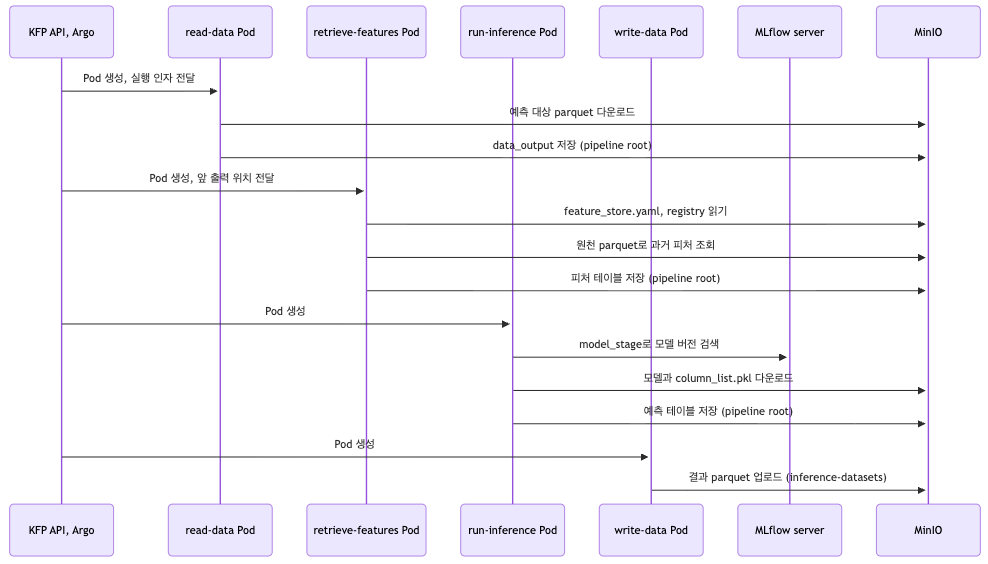
본문 캡션에는 이 그림의 출처로 https://johklo.github.io/docs/tech/machine-learning-platform-engineering/04-experiments-features-pipelines/ 링크가 붙어 있습니다.
이미지 해설: 이 장 전체의 요약 지도
이 그림은 시퀀스 다이어그램(위에서 아래로 시간이 흐르며, 세로선 하나가 참여자 하나)입니다. 맨 위의 참여자는 왼쪽부터 다음과 같습니다.
KFP API, Argo · read-data Pod · retrieve-features Pod · run-inference Pod · write-data Pod · MLflow server · MinIO
위에서 아래로 읽으면 다음 순서입니다.
| 순서 | 누가 → 누구에게 | 그림 속 글자 | 쉬운 풀이 |
|---|---|---|---|
| 1 | KFP API, Argo → read-data Pod | Pod 생성, 실행 인자 전달 | 첫 작업실(Pod)을 열고 "어떤 파일을 읽어라" 같은 값을 넘겨 준다 |
| 2 | read-data Pod → MinIO | 예측 대상 parquet 다운로드 | 예측할 대상 목록(entity_df)을 창고에서 가져온다 |
| 3 | read-data Pod → MinIO | data_output 저장 (pipeline root) | 가져온 결과를 다음 단계가 쓰도록 창고의 공용 선반에 파일로 올린다 |
| 4 | KFP API, Argo → retrieve-features Pod | Pod 생성, 앞 출력 위치 전달 | 두 번째 작업실을 새로 열고 "앞 단계 결과가 여기 있다"고 알려 준다 |
| 5 | retrieve-features Pod → MinIO | feature_store.yaml, registry 읽기 | Feast 설정 파일과 피처 장부(registry)를 읽는다 |
| 6 | retrieve-features Pod → MinIO | 원천 parquet로 과거 피처 조회 | 대상 목록에 맞는 피처 값을 원천 데이터에서 찾는다 |
| 7 | retrieve-features Pod → MinIO | 피처 테이블 저장 (pipeline root) | 피처가 붙은 표를 다시 공용 선반에 올린다 |
| 8 | KFP API, Argo → run-inference Pod | Pod 생성 | 세 번째 작업실을 연다 |
| 9 | run-inference Pod → MLflow server | model_stage로 모델 버전 검색 | "Production 단계인 모델 버전이 무엇이냐"고 MLflow 에 묻는다 |
| 10 | run-inference Pod → MinIO | 모델과 column_list.pkl 다운로드 | 모델 파일과 학습 때 쓴 열 목록을 받는다 |
| 11 | run-inference Pod → MinIO | 예측 테이블 저장 (pipeline root) | 예측 결과를 공용 선반에 올린다 |
| 12 | KFP API, Argo → write-data Pod | Pod 생성 | 마지막 작업실을 연다 |
| 13 | write-data Pod → MinIO | 결과 parquet 업로드 (inference-datasets) | 최종 결과를 inference-datasets 버킷에 저장한다 |
이 그림에서 꼭 가져갈 점은 두 가지입니다.
- 단계마다 새 Pod 가 뜹니다. 4개 단계에는 Pod 4개가 쓰입니다.
- 단계끼리는 데이터를 직접 건네지 않고, MinIO(pipeline root)에 파일로 올려 두면 다음 단계가 그 파일을 받습니다.
flowchart LR
K["KFP API 와 Argo"] -->|"Pod 생성"| A["read-data Pod"]
A -->|"entity_df 파일 저장"| M[("MinIO")]
M -->|"파일 위치 전달"| B["retrieve-features Pod"]
B -->|"피처 표 저장"| M
M --> C["run-inference Pod"]
C -->|"모델 버전 검색"| F["MLflow server"]
C -->|"예측 표 저장"| M
M --> D["write-data Pod"]
D -->|"inference-datasets 에 parquet"| M들어가며: kubeflow 파이프라인 KubeFlow Pipeline(KFP)을 활용하여 이러한 워크플로를 자동화
들어가며: kubeflow 파이프라인 KubeFlow Pipeline(KFP)을 활용하여 이러한 워크플로를 자동화
- 4장에서는 MLflow 를 활용한 머신러닝 실험의 안정적인 추적과 Feast(피스트) 를 활용한 피처 관리 체계를 구축했습니다. 그러나 이 도구들만으로는 모델 훈련, 피처 업데이트, 추론을 조율하는 일을 여전히 사람이 직접 해야 합니다. 바로 이 지점에서 파이프라인 오케스트레이션이 핵심적인 역할을 하게 됩니다(그림 5.1).
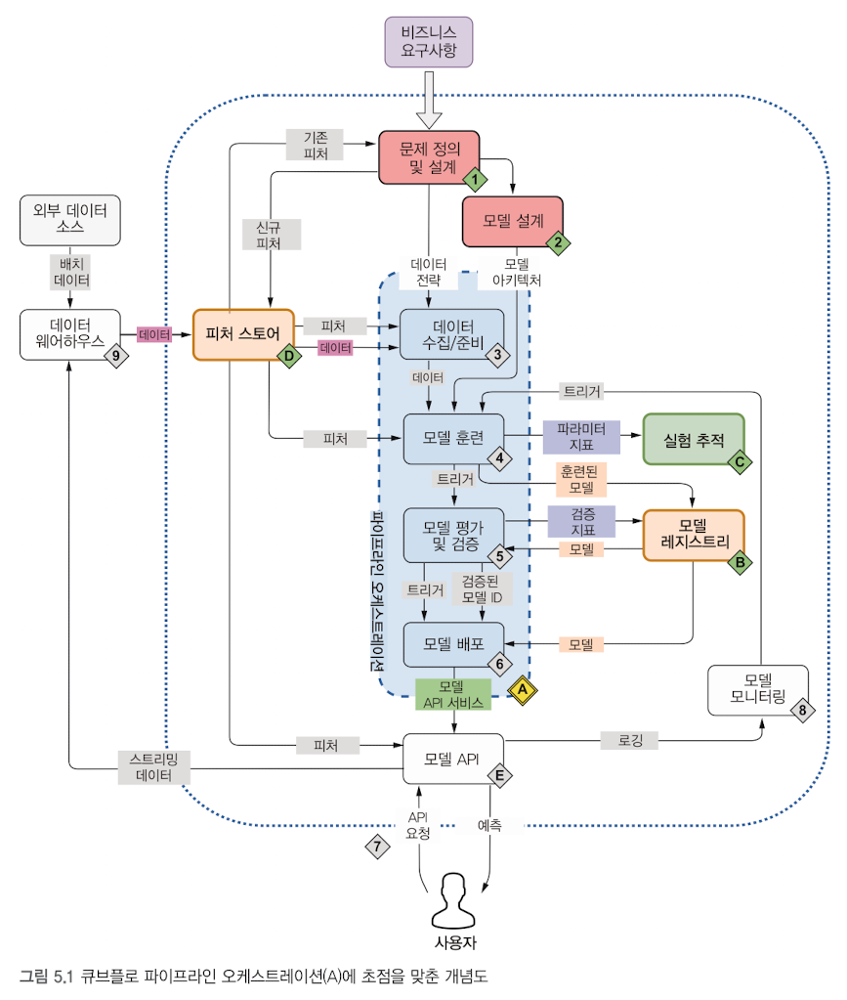
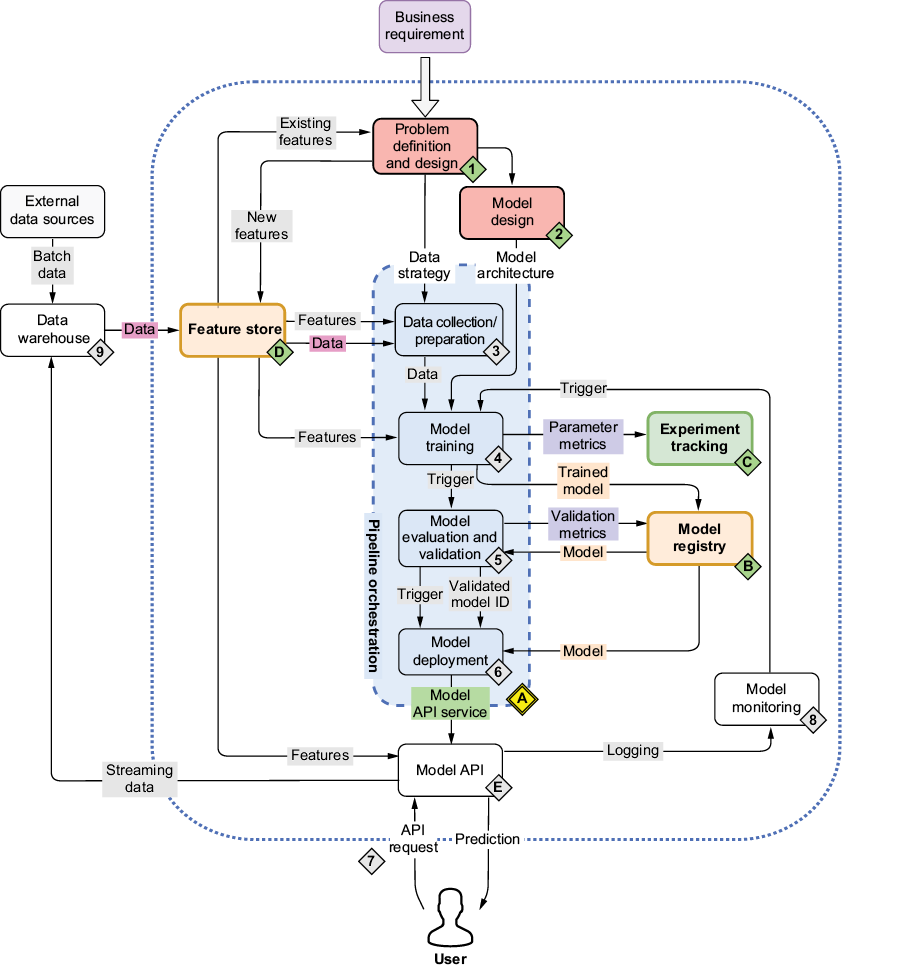
이미지 해설: 그림 5.1 "지금 공부하는 곳은 어디인가"
위 두 그림은 같은 그림의 한글판(ch5_img002)과 영문판(ch5_img003) 입니다. 영문판 캡션은 "Figure 5.1 The mental map where we're now focusing on Kubeflow Pipelines orchestration (A)", 한글판 캡션은 "그림 5.1 큐브플로 파이프라인 오케스트레이션(A)에 초점을 맞춘 개념도" 입니다.
그림이 보여주는 것. 머신러닝 시스템 전체의 지도입니다.
- 맨 위 "비즈니스 요구사항"에서 시작해 ① 문제 정의 및 설계 → ② 모델 설계로 내려갑니다.
- 점선으로 둘러싼 파란 상자 "파이프라인 오케스트레이션" 안에 ③ 데이터 수집/준비 → ④ 모델 훈련 → ⑤ 모델 평가 및 검증 → ⑥ 모델 배포가 세로로 들어 있고, 이 상자 오른쪽 아래에 노란 마름모 A 가 붙어 있습니다. 상자 밖으로 "모델 API 서비스"가 나와 ⑦ 사용자에게 예측을 주는 모델 API(E) 로 이어집니다.
- 주변 도구: 피처 스토어(D), 실험 추적(C), 모델 레지스트리(B), 모델 모니터링(8), 데이터 웨어하우스(9), 외부 데이터 소스.
- ④→⑤→⑥ 사이에는 "트리거" 화살표가 있어, 앞 단계가 끝나면 다음 단계가 자동으로 시작됨을 나타냅니다. 모델 모니터링에서 모델 훈련으로 돌아가는 "트리거" 화살표도 있습니다.
초보자용 풀이. 4장에서 공부한 것은 C(실험 추적, MLflow)·B(모델 레지스트리)·D(피처 스토어, Feast)였습니다. 5장은 이들을 순서대로 자동 실행해 주는 A(파이프라인 오케스트레이션) 를 다룹니다. 다만 5장의 파이프라인은 그림의 전 구간을 구현하는 것이 아니라, 저장된 모델과 피처로 추론만 수행하는 배치 추론 파이프라인입니다.
- 이 장에서는 kubeflow 파이프라인(KFP)으로 이 워크플로를 자동화하고, 머신러닝 시스템의 확장성과 재현성을 높이는 방법을 살펴봅니다. 소득 분류라는 실용적인 예제로, 손으로 하던 단계를 자동화된 재사용 가능 파이프라인 컴포넌트로 바꾸는 방법을 알아봅니다. 이 장의 전체 코드는 https://github.com/practical-mlops/chapter-5 에서 확인할 수 있습니다.
이 문단의 용어 풀이
| 용어 | 한 줄 풀이 |
|---|---|
| 수동 개입 | 사람이 직접 순서대로 명령을 치며 훈련 → 피처 갱신 → 추론을 이어 가는 것 |
| 확장성 | 데이터와 작업이 늘어도 같은 구조로 처리할 수 있는 성질 |
| 재현성 | 같은 입력·같은 설정이면 같은 절차를 다시 실행할 수 있는 성질. 코드와 파라미터가 기록되면 높아지지만, 외부 데이터가 바뀌면 결과는 달라질 수 있습니다 |
| 재사용 가능한 컴포넌트 | 한 가지 일만 하도록 만들어 다른 파이프라인에서도 쓸 수 있는 단계 |
⚠ 바로잡기(표현 완화): "재현성 보장" 같은 표현은 조건부로 읽어야 합니다. 파이프라인은 절차와 파라미터를 코드로 남겨 재현을 돕지만, 이미지 태그가 latest 이거나 입력 데이터·모델 stage 가 바뀌면 같은 파이프라인이어도 결과가 달라질 수 있습니다.
5장 아키텍처 개요와 추론 파이프라인 개념 지도
5장 아키텍처 개요와 추론 파이프라인 개념 지도
- 실습 저장소: https://github.com/practical-mlops/chapter-5
- 핵심 목표: 4장에서 학습 및 등록한 머신러닝 모델과 Feast 피처 스토어를 결합하여 배치 추론을 수행하는 Kubeflow 파이프라인(KFP v2)의 구축 및 오케스트레이션 자동화입니다.
최고 모델 서술 정리와 서빙 인터페이스 규약
4장 실험과 5장 파이프라인 연결부에서 "최고 모델 선정"에 대한 서술을 기술적으로 정리하면 다음과 같습니다.
| 어디서 | 가장 AUC가 높은 모델 | 비고 |
|---|---|---|
| 책의 표 (4장 정리 기준) | RandomForest, AUC 0.8600 | 책 표 기준 |
| 동일 데이터셋 재실험 환경 | xgboost-logistic, AUC 0.8633 | 실험 재실행 기록 |
| RandomForest 기준 run | AUC 0.8571 | 모델 레지스트리 등록 대상 |
기록마다 최고 성능 모델이 달라 보이는 것은 서로 다른 실행 run의 결과이기 때문입니다. 여기서 5장의 추론 컴포넌트가 RandomForest 모델을 최종 선택하여 사용하는 핵심 이유는 단순한 AUC 소수점 순위 때문이 아니라, 서빙 코드 인터페이스에서 predict_proba(클래스별 확률 예측)를 안정적으로 호출할 수 있는가라는 모델 인터페이스 계약(Contract) 때문입니다.
⚠ 바로잡기 (서빙 인터페이스 제약):mlflow.xgboost.load_model로 로드된 모델은 Scikit-Learn 래퍼 객체가 아닌 저수준 Booster 원시 객체로 반환될 수 있어, Scikit-Learn 표준인predict_proba메서드가 없어 추론 스크립트에서 속성 에러가 발생할 수 있습니다.XGBClassifier로 로깅하거나 모델 규약을 사전에 맞추지 않은 경우 이러한 인터페이스 불일치가 발생할 수 있으며, 이는 프레임워크 간 인터페이스 통일이 왜 중요한지 보여주는 대표적인 사례입니다.
파이프라인 한 줄 지도
flowchart LR
R["read_data"] --> F["retrieve_features"]
F --> I["run_inference"]
I --> W["write_data"]
MN[("MinIO")] -.-> R
FE["Feast 피처 정의"] -.-> F
ML["MLflow 모델 레지스트리"] -.-> I
W -.-> MN파이프라인 아키텍처 구성요소와 역할
| 구성요소 | MLOps 파이프라인에서의 핵심 역할 |
|---|---|
| Kubernetes | 파이프라인의 각 컴포넌트 태스크를 격리된 컨테이너 Pod 단위로 프로비저닝하고 실행하는 기본 인프라 |
| Kubeflow Pipelines (KFP) | 컴포넌트 간 데이터 의존성(DAG) 관리, 파이프라인 컴파일(IR YAML), 실험/실행 스케줄링 및 아티팩트 계보(Lineage) 추적 |
| MinIO | 입력 데이터셋, 태스크 간 중간 산출물(Parquet), 최종 예측 결과, Feast 설정 메타데이터를 저장하는 S3 호환 중앙 객체 스토어 |
| MLflow Model Registry | 프로덕션 배포 대상 모델 아티팩트와 특성 열 목록(column_list.pkl)을 보관하고 버전 및 별칭(alias) 기반 서빙 제공 |
| Feast (+ Redis) | 피처 정의 레지스트리 관리 및 시점 기준 조인(Point-in-Time Join)을 통한 과거 피처 데이터셋 오프라인 조회 |
| 컨테이너 레지스트리 | 컴포넌트별 Dockerfile로부터 빌드된 불변 컨테이너 이미지를 보관하고 클러스터 노드에 배포 |
배치 추론 파이프라인의 구조와 설계 제약
네 단계와 저장소 구조
이 파이프라인은 4장에서 만든 모델과 Feast 피처를 이용해 배치 추론을 수행합니다. 흐름은 다음과 같습니다.
| 단계 | 하는 일 | 입력/출력 |
|---|---|---|
read_data |
MinIO 에서 entity_df(parquet) 읽기 |
버킷·파일명 → 데이터 파일 |
retrieve_features |
Feast 오프라인 조회 (feature_store.yaml 은 MinIO 에서 내려받음) |
entity_df → 피처가 붙은 표 |
run_inference |
MLflow 에서 레지스트리의 stage 기준 모델을 불러 확률 예측 | 피처 표 → 예측 표 |
write_data |
결과를 MinIO 에 parquet 으로 저장 | 예측 표 → 결과 파일 |
구성 파일은 다음과 같이 읽습니다.
| 구성 | 설명 |
|---|---|
components/*/component.yaml 4개 |
각 단계의 입출력과 컨테이너 이미지(varunmallya/…:latest) |
src/*/*.py 4개 |
컨테이너 안에서 실제로 실행되는 코드. 모두 argparse 로 파라미터를 받습니다 |
inference_pipeline.py |
4개 컴포넌트를 이어 붙인 파이프라인 정의(파라미터 14개). 실행하면 income_classifier_pipeline.yaml 을 컴파일합니다. 이 YAML 도 저장소에 이미 들어 있으며 sdkVersion 은 kfp-2.9.0 입니다 |
Dockerfile, Makefile |
컴포넌트 이미지를 빌드하고 push 합니다(yq 로 component.yaml 에서 이미지 이름을 뽑음) |
scripts/feast/ |
Feast 레지스트리를 Kubernetes Job(feast apply)으로 등록하는 이미지와 job.yaml |
requirements.txt |
kfp==2.9.0, mlflow==3.0.0, feast[redis]==0.40.1, minio, pandas 등 |
핵심 동작 3가지:
retrieve_features.py: MinIO 에서feature_store.yaml을 내려받고 환경변수를 설정한 뒤get_historical_features로 조회합니다. 특성 목록은 쉼표로 이은 문자열(feature_list)로 받습니다.run_inference.py: 레지스트리에서current_stage == model_stage인 버전을 찾아 그 run 의column_list.pkl을 받고, 입력을get_dummies(drop_first=True)한 뒤reindex(col_list)로 정렬해model.predict_proba로Predicted_Income_Class열을 만듭니다.model_type은 sklearn, xgboost, tensorflow 중에서 고릅니다.write_data.py: 결과 parquet 을 지정한 버킷에 올립니다.
⚠ 바로잡기 (파일명): 노트와 일부 글에서 파이프라인 정의 파일을income-classifier-pipeline.py처럼 쓰는 경우가 있으나, 저장소의 실제 파일은inference_pipeline.py이고 컴파일 산출물은income_classifier_pipeline.yaml입니다. (저장소 README 는 산출물을inference_pipeline.yaml이라 적고 있어 코드와 다릅니다.)
⚠ 바로잡기 (Predicted_Income_Class 의 의미):Predicted_Income_Class열은 클래스 라벨이 아니라predict_proba의 두 번째 값, 즉 고소득일 확률입니다. 실제 클래스(고소득/아님)가 필요하면 0.5 같은 임계값과 비교해야 합니다. 예를 들어 값이 0.73 이면 "고소득일 확률 73%"이고, 0.5 기준으로 보면 고소득으로 분류됩니다.
모델 인터페이스와 버전 선택
이 추론 코드의 계약은 model.predict_proba(...)입니다. mlflow.xgboost.load_model이 xgb.train의 Booster를 반환하면 predict_proba가 없으므로 그대로는 이 계약을 만족하지 못합니다. 모델 종류 이름만으로 호환성을 판단하기보다 로더가 반환하는 객체와 예측 인터페이스를 구분해야 합니다. model.run_id로 column_list.pkl을 가져오는 구조라면 등록 버전과 학습 run의 연결도 필요합니다.
MLflow의 모델 stage는 2.9.0부터 deprecated이며 향후 제거 예정입니다. 이 책의 코드는 current_stage == model_stage로 버전을 선택하지만, 대안인 alias는 재지정 가능한 가변 포인터입니다. 배치 실행 시작 시 alias를 숫자 모델 버전으로 해석하고 그 버전을 기록하면, 실행 도중 별칭이 바뀌어도 선택한 모델을 추적할 수 있습니다.
실행 위치·주소·자격 증명
Pod 내부의 localhost는 Pod 자신을 가리킵니다. 레지스트리의 s3_endpoint_override가 다른 실행 위치의 localhost를 담고 있으면 Pod에서 같은 저장소에 도달하지 못합니다. 데이터 소스 주소를 소비자에게 도달 가능한 서비스 DNS로 정의하고, 등록 과정에서 소스 파일에 접근할 경로와 소비자가 사용할 경로를 구분합니다. registry_local.db와 registry.db는 이 예제의 protobuf 파일 레지스트리이며 SQLite를 뜻하지 않습니다.
feature_store.yaml에 Redis 암호를 담아 버킷에 보관하면 파일 접근 권한이 비밀 값 접근으로 이어집니다. KFP의 access_key·secret_key를 일반 Run 문자열 파라미터로 전달하면 UI·DB에 평문으로 남을 수 있습니다. Secret을 task의 환경변수나 파일로 주입하고 코드가 그 경로를 읽는 계약이 필요합니다. AWS S3의 IAM과 MinIO의 키 인증은 같은 방식이 아닙니다.
이미지·IR의 재현성
latest는 가변 태그입니다. imagePullPolicy가 생략된 상태에서 latest를 지정하면 기본 정책이 Always이지만, 이는 태그 내용이 소스 코드와 같다는 보장이 아닙니다. 버전 태그와 digest를 기록하여 실제 실행 이미지를 식별합니다. python:3.10-slim-buster의 기반인 Debian Buster는 LTS 지원이 2024-06-30에 끝났습니다. 패키지 미러 이전에 따른 실패 가능성과 지원 종료는 구분해야 하며, 모든 미러 요청이 반드시 실패한다고 단정할 수는 없습니다.
SDK가 생성한 IR을 백엔드가 지원하는지 여부는 컴파일 성공과 별개입니다. 소스·SDK·백엔드·IR을 함께 기록하면 버전 호환성을 평가할 수 있습니다.
배치별 원핫 인코딩의 한계
문자열 입력에 get_dummies(drop_first=True)를 적용하면 해당 배치의 범주 집합에 따라 기준 범주가 정해집니다. 같은 범주 집합에서는 일관되게 동작하지만, 학습 때의 A가 없는 B·C 배치에서는 B가 제거될 수 있습니다. 이후 reindex가 cat_B를 0으로 채워도 B가 학습 때의 A 표현으로 바뀐 문제를 복원하지는 못합니다.
학습 때 열:
cat_B, cat_C (A 가 기준, 즉 둘 다 0 이면 A)예측할 배치에 어떤 범주가 들어 있나요?
학습 범주 목록과 인코더를 보존하여 추론에도 같은 기준을 사용해야 합니다. 전체 범주가 있는 큰 배치에서 문제가 드러나지 않았다는 사실만으로 작은 배치나 미지 범주에서도 올바르다고 판단할 수는 없습니다.
배치 파이프라인의 DNS·실행 환경·품질 계약
배치 추론의 구조
책의 컴포넌트 네 개(read_data, retrieve_features, run_inference, write_data)와 리스팅 5.1~5.11은 데이터 읽기·과거 피처 조회·모델 추론·결과 저장을 연결합니다. 결과 버킷은 inference-datasets이며 입력 엔티티 목록의 버킷은 별도의 입력 계약입니다. KFP는 이처럼 배치 작업의 의존 관계를 조율하고, 다음 장의 BentoML은 실시간 추론 서비스로 이어집니다.
서비스 DNS와 주소 스킴
Feast의 등록 과정은 데이터 소스의 메타데이터를 얻기 위해 실제 소스에 접근할 수 있습니다. 따라서 소비자가 사용할 주소뿐 아니라 등록 프로세스의 DNS 해석과 연결 가능성도 필요합니다. minio-service.kubeflow.svc.cluster.local은 Kubernetes 서비스 DNS 이름입니다. 기본 클러스터 DNS 구성을 사용하지 않는 호스트에서는 이 이름을 해석할 수 없으므로, 클러스터 내부 Job이 등록 작업을 수행하는 구조가 자연스럽습니다. 외부에서도 DNS와 네트워크 경로를 별도로 구성하면 접근할 수 있으므로 절대적인 공간 제한으로 이해하지는 않습니다.
minio-service.kubeflow.svc.cluster.local)는 회사 안 전화기에서만 걸립니다. 집(호스트 서버)에서 그 번호로 걸면 "없는 번호"가 됩니다. 그래서 전화를 걸어야 하는 일(feast apply)을 회사 안(클러스터 안 Job)에서 시킵니다.⚠ 바로잡기: 이 예제의 MinIO 클라이언트는secure=False이므로 주소 스킴은http://입니다. 책의https://표기는 이 설정과 맞지 않습니다. 해당 서비스 주소는http://minio-service.kubeflow.svc.cluster.local:9000입니다.
일회성 Job과 상시 서비스
Job은 apply처럼 유한한 등록 작업을 완료하도록 관리하는 리소스입니다. Deployment는 지속적으로 요청을 받는 서비스의 Pod를 유지하는 데 적합합니다. ConfigMap은 entity.py·features.py 등 비밀이 아닌 설정 파일을 제공할 수 있지만, Redis 암호 같은 자격 증명은 Secret 등으로 분리해야 합니다. 작업마다 의존성을 내려받는 설계에는 네트워크와 패키지 버전의 가변성이 생기므로 실행 환경과 입력 설정을 함께 고정하는 것이 재현성에 도움이 됩니다.
Dockerfile을 공유하는 컴포넌트
이 저장소의 Dockerfile은 COPY . /app으로 전체 소스를 포함하고 Makefile은 네 컴포넌트에 같은 Dockerfile을 사용합니다. 하나의 공통 이미지 안에 여러 스크립트를 담고 각 component.yaml이 서로 다른 실행 진입점을 지정하는 구조입니다. 이미지 이름이 다르다는 사실만으로 내용이 다르다고 판단할 수는 없으며, 실제 동일성은 빌드 입력과 digest로 식별합니다.
flowchart LR D["Dockerfile 하나"] --> B["이미지 한 번 빌드"] B --> T1["read-minio-data"] B --> T2["retrieve-feast-features"] B --> T3["run-inference"] B --> T4["write-minio-data"]
이 다이어그램은 공통 빌드 산출물을 여러 컴포넌트 이름으로 참조할 수 있다는 뜻입니다. 공통 이미지에는 모든 의존성이 들어갈 수 있어 편리하지만, 특정 컴포넌트의 변경이 다른 컴포넌트의 실행 환경에도 영향을 주는 결합이 생깁니다.
컴포넌트 계약과 결과 품질
컴포넌트를 독립적으로 평가하면 데이터 경로·Feast 정의·모델 인터페이스·인코딩 오류를 좁혀 볼 수 있습니다. 입력과 출력의 파일 형식뿐 아니라 열 순서·범주 기준·누락 값 정책을 계약으로 다뤄야 합니다. get_dummies(drop_first=True)는 입력 범주 집합에 따라 기준 범주가 정해지므로, 추론 배치마다 다시 적용한 뒤 reindex하는 것만으로 학습의 표현을 복원하지 못할 수 있습니다. Private는 Occupation이 아니라 Workclass의 범주입니다.
predict_proba의 두 번째 열을 고소득 확률로 해석하려면 모델의 classes_ 순서와 정답 인코딩을 함께 확인해야 합니다. 확률은 정확도와 다른 값이며, 클래스 라벨에는 임계값 정책이 필요합니다. 결과에는 user_id 같은 식별자를 보존하여 예측과 원래 행을 연결합니다. 파이프라인 실행 성공은 단계의 기술적 완료를 뜻하며, 예측의 의미와 품질은 별도로 평가해야 합니다.
KFP의 일반 문자열 Run 파라미터에 MinIO 키를 넣으면 실행 이력에 평문으로 남을 수 있습니다. 비밀 값은 task의 환경변수 또는 파일로 주입하고 사용자 코드도 그 계약을 사용해야 합니다.
배치 추론 결과를 읽는 법: 성공과 품질, 확률 열, 키 노출, 알려진 한계
파이프라인이 끝까지 성공하면 4개 태스크가 모두 Succeeded 로 표시되고, 출력은 inference-datasets/inference_result.parquet 같은 결과 파일로 저장됩니다. 이 절은 그 결과를 어떻게 읽어야 하는지, 그리고 성공한 파이프라인이 안고 있는 알려진 한계를 정리합니다.
📌 수치를 읽는 방법: 아래에 나오는 숫자(30,162행 × 91열, NaN 없음, 22.1%, 최대 차이 0.0)는 한 번 실행해 기록한 과거 결과입니다. 같은 파이프라인을 실행했을 때 반드시 같은 숫자가 나온다는 뜻이 아닙니다. 외부 블로그에는 같은 결과를 92열로 적은 기록도 있습니다. 91열과 92열은 각자 환경의 기록이며 차이의 원인은 알 수 없습니다.
1. 결과 요약: 읽는 법
| 항목 | 기록 | 읽는 법 |
|---|---|---|
| 출력 검증 | 30,162행 x 91컬럼, NaN 없음 | 입력 30,162행과 같은 행 수. 열 수는 환경별 기록 |
| 고소득(≥0.5) 예측 비율 | 22.1% | 정확도가 아니라 "확률이 0.5 이상으로 예측된 비율" |
| 직접 모델 로드와 비교 | 같은 모델(models:/random-forest-classifier/Production)을 직접 로드해 계산한 값과 최대 차이 0.0 |
파이프라인 계산과 직접 계산이 일치한다는 점검 결과 |
⚠ 바로잡기 (결과 열의 의미와 구성):
①Predicted_Income_Class는 클래스 라벨이 아니라predict_proba의 두 번째 값(고소득 확률)입니다. 클래스가 필요하면 0.5 와 비교하세요. "22.1%"는 정확도가 아니라 "0.5 이상으로 예측된 비율"입니다.
② 결과 parquet 에는user_id/event_timestamp가 남지 않습니다. 추론 코드가drop(columns=[...])로 지운 뒤 다시 붙이지 않기 때문입니다. 행 순서로만 입력과 맞출 수 있으므로, 실무에서는 ID 를 보존하도록 고치는 것이 안전합니다.
③ "성공"은 Pod 가 정상 종료됐다는 뜻이지 예측 품질이 좋다는 뜻이 아닙니다.
위 22.1% 를 직접 계산해 보기
확률이 아래와 같이 나왔다고 하고, 슬라이더로 임계값을 움직여 보세요. 임계값을 올리면 "고소득"으로 분류되는 비율이 줄어듭니다.
확률: 0.05, 0.12, 0.18, 0.22, 0.35, 0.48, 0.52, 0.61, 0.73, 0.90
임계값
2. 이 구성에서 알아 둘 설계상의 교훈
- 베이스 이미지의 수명: 책의 Dockerfile 이 쓰는
python:3.10-slim-buster는 지원이 종료된(EOL) Debian buster 기반이라, 패키지 저장소가 옮겨져apt-get update가 실패하는 경우가 많습니다.python:3.10-slim-bookworm처럼 지원 중인 베이스로 바꿔야 빌드됩니다. 베이스 이미지는 정기적으로 점검해야 하는 의존성입니다. - CPU 아키텍처: 이미지는 CPU 종류(amd64, arm64)별로 만들어집니다. 클러스터 노드와 이미지의 CPU 종류가 다르면
exec format error가 날 수 있으므로, 필요하면 여러 아키텍처를 한 번에 빌드한 이미지를 씁니다. Rosetta 같은 에뮬레이션은 환경에 따라 필요할 수 있는 선택지이지 필수가 아닙니다. - KFP 파라미터의 비밀값: Run 파라미터로 넘긴
access_key/secret_key는 일반 문자열이라 실행 이력에 평문으로 남습니다(아래 보안 상자 참고). - UI 확인과 API 확인은 다른 경로: 파이프라인은 UI 로도, REST API 로도 실행하고 검증할 수 있습니다. 어느 쪽으로 확인했는지에 따라 보증하는 범위가 다릅니다.
- 끝난 Pod 의 보존: Pod 이름에는
system-dag-driver,system-container-driver,system-container-impl이 나타납니다. 아티팩트를 내려받고 올리는 주체가 driver, launcher, Argo 중 무엇인지는 이 기록만으로 단정하지 않으며, 끝난 Pod 가 즉시 사라진다고 일반화해서도 안 됩니다.
⚠ stage 는 사용이 줄어드는 방향: 모델 등록 뒤 stage 를 바꾸는transition_model_version_stage는 예전부터 deprecated(2.9.0 부터로 알려짐, 공식 문서 재확인 필요)이고 3.0.0 에도 API 는 남아 있습니다. 대안은set_registered_model_alias와models:/<name>@<alias>이며, 이 파이프라인 코드가 stage 문자열로 모델을 찾으므로 alias 로 바꾸려면run_inference.py도 고쳐야 합니다.
⚠ 바로잡기 (KFP 호환): 저장소에 들어 있는kfp-2.9.0컴파일본이 2.4.0 백엔드에서 동작하는지는 확인되지 않았습니다. 확인된 것은 서버 백엔드와 같은 버전의 SDK(2.4.0)로 다시 컴파일한 본입니다. 또한 파이프라인 정의 파일은income-classifier-pipeline.py가 아니라 저장소의inference_pipeline.py입니다. 그 안에서 컴파일하려면from kfp import compiler를 가져온 뒤compiler.Compiler().compile(pipeline_func=..., package_path=...)를 호출합니다.
🔒 보안: KFP Run 파라미터로 넘긴access_key/secret_key는 일반 문자열이라 실행 이력(UI/DB)에 평문으로 남습니다. 운영에서는 Kubernetes Secret 을 task 설정으로 주입하고, 코드가 환경변수를 읽도록 수정해야 합니다(현재 코드는 argparse 인자로 받음). AWS S3 의 IAM 과 MinIO 인증을 같은 것으로 보면 안 됩니다. 또한 Redis 암호가 들어 있는feature_store.yaml을 버킷에 올리면 평문으로 저장됩니다.
3. 알려진 한계 정리
flowchart TD P["파이프라인 성공"] --> Q1["확률 열은 라벨이 아님"] P --> Q2["user_id 가 결과에 없음"] P --> Q3["키가 실행 이력에 평문 노출"] P --> Q4["get_dummies 배치 의존"] P --> Q5["새 네임스페이스에서 Secret 문제 반복"]
| 한계 | 왜 문제인가 | 방향 |
|---|---|---|
| 확률 열이 라벨이 아님 | 0.73 을 "고소득"으로 오해 | 0.5 임계값(또는 업무 기준)으로 클래스 열을 따로 만든다 |
결과에 user_id 없음 |
어떤 사용자의 예측인지 알 수 없음 | 입력 ID 열을 보존하고 결과에 다시 붙이도록 코드 수정 |
| 키 평문 노출 | 실행 이력에 키가 남음 | Secret 주입 + 환경변수 읽기 |
배치별 get_dummies |
배치에 없는 범주가 있으면 조용히 틀림 | 학습 때 범주 목록을 저장해 그 기준으로 인코딩 |
| 사용자 네임스페이스 Secret | 새 네임스페이스에서 KFP 가 필요로 하는 리소스가 만들어지지 않으면 Pod 가 시작 전에 멈출 수 있음 | 우회가 아니라 원인(컨트롤러 버전과 CRD)을 해결 |
| 캐시 | 같은 파일명 아래 외부 데이터가 바뀌어도 자동으로 감지하지 않음 | 버전이 들어간 입력, 고정된 데이터, 또는 캐시 비활성화를 선택 |
⚠ 보완 (캐시): KFP 의 캐시는 입력과 실행 정의가 같으면 이전 결과를 재사용합니다. 그러나 같은 버킷·같은 파일명인데 안의 내용만 바뀐 경우를 자동으로 알아차린다고 기대하면 안 됩니다. 입력 파일명에 날짜·버전을 넣거나, 데이터를 고정하거나, 실행 때 캐시를 끄는 방법을 쓰세요.
⚠ 보완 (과장 표현 완화): 이 장의 결과를 "100% 동일", "완벽한 재현성", "감사 추적 보장"처럼 읽으면 안 됩니다. 확인된 것은 "같은 모델을 직접 로드해 계산한 값과 최대 차이가 0.0 이었다"는 한 번의 점검 결과입니다.
이 구간의 확인 문제와 모범 답변
이 구간의 확인 문제와 모범 답변
📌 아래 문제는 5장 도입부(개요 · 들어가며 · 실습 환경)의 이해를 확인하기 위한 연습용입니다.
| 번호 | 문제 | 모범 답변 |
|---|---|---|
| 1 | 4개 태스크는 서로 데이터를 어떻게 주고받나? | 직접 건네지 않는다. 각 단계의 출력 파일을 MinIO(pipeline root)에 올리고, 다음 단계가 그 파일을 받는다. 단계마다 새 Pod 가 뜬다 |
| 2 | 4장의 Feast 레지스트리를 5장 Pod 에서 그대로 쓰지 못하는 이유는? | 레지스트리에 데이터 소스 주소가 localhost 기반(예: http://localhost:30010)으로 저장돼 있는데, Pod 안의 localhost 는 Pod 자신이기 때문. Pod 가 접근할 수 있는 클러스터 안 주소(minio-service.kubeflow.svc.cluster.local:9000)는 클러스터 안에서만 이름이 풀리므로, 그 주소를 담은 레지스트리 정의도 클러스터 안에서 만들어져야 한다 |
| 3 | 결과의 Predicted_Income_Class 값이 0.73 이다. 이 사람은 고소득인가? |
열 이름과 달리 이 값은 클래스가 아니라 고소득 확률이다. 0.5 임계값으로 보면 고소득으로 분류되지만 "73% 확률"이라는 뜻이지 확정이 아니다 |
| 4 | 실행 이력에 비밀키가 남지 않게 하려면? | Kubernetes Secret 을 task 설정으로 주입하고, 코드가 환경변수에서 키를 읽도록 수정한다. 파라미터로 넘기면 평문으로 이력에 남는다 |
| 5 | 같은 배치로 반복 실행해도 안전한 이유와 한계는? | 입력·설정이 같으면 같은 절차가 반복되지만, latest 이미지·바뀐 모델 stage·같은 파일명 안의 바뀐 데이터는 결과를 바꿀 수 있다. 고정 태그와 버전이 들어간 입력 이름이 필요하다 |
| 6 | 배치에 범주 C 하나만 있을 때 get_dummies(drop_first=True) 와 reindex 의 결과는? |
하나뿐인 범주를 기준으로 빼서 열이 없어지고, reindex 가 학습 때 열을 모두 0 으로 채운다. 학습 때 기준 범주(A) 표현과 같아져 조용히 틀린다 |
5.1 들어가며: 추론 파이프라인의 공통 구조와 KFP
이 절은 책 5장의 첫 토글 "들어가며"를 풀어 쓴 것입니다. 5장 전체의 목표는 4장에서 학습·등록해 둔 모델과 피처로 배치 추론(한꺼번에 모아서 예측) 을 자동으로 돌리는 Kubeflow Pipelines(KFP) 를 만드는 것입니다.
대부분의 추론 파이프라인은 같은 모양이다
책은 머신러닝 추론 파이프라인이 공통된 구조를 가진다고 말합니다. 순서대로 풀면 이렇습니다.
- 데이터 가져오기 — 객체 스토어(예: MinIO, S3), 데이터 웨어하우스, 파일시스템 등 어딘가에서 데이터를 읽어 옵니다.
- 전처리 — 모델이 먹을 수 있는 모양으로 다듬습니다.
- 모델 조회·로드 — 모델 저장소에서 사용할 모델을 찾아 불러옵니다.
- 추론 — 불러온 모델로 예측값을 계산합니다.
- 결과 기록 — 추론 결과를 데이터베이스에 기록하거나 클라우드 스토리지에 업로드합니다.
그리고 파이프라인은 다음 성질을 가져야 합니다.
- 주기적으로 실행되어야 합니다(예: 매일 새벽).
- 날짜/시간, 피처 테이블 이름 같은 런타임 파라미터(실행할 때 바꿔 끼우는 값) 를 받을 수 있어야 합니다.
- 책은 "이 모든 것이 KFP를 통해 가능"하다고 말합니다.
flowchart LR A["데이터 가져오기"] --> B["전처리"] B --> C["모델 조회 및 로드"] C --> D["추론"] D --> E["결과 기록 또는 업로드"] P["런타임 파라미터 날짜 피처 테이블 이름"] -.-> A P -.-> C
위 그림은 추론 파이프라인의 공통 뼈대입니다. 점선은 "실행할 때마다 값을 바꿔 넣을 수 있는 입력"을 뜻합니다.
참고로 이 장의 파이프라인 코드에는 정기 실행(스케줄) 설정이 들어 있지 않습니다. "주기적으로 실행"은 KFP 의 반복 실행(recurring run) 기능을 따로 설정해서 얻는 것으로 알려져 있습니다. 설정 방법은 KFP 공식 문서에서 다시 확인하세요.
KFP 와 컴포넌트
- KFP 는 머신러닝 파이프라인 구축을 돕는 도구이며, 파이프라인을 정의할 때 쓰는 친화적인 파이썬 패키지(
kfp) 형태의 SDK 를 제공합니다. (SDK = 개발에 쓰는 도구 모음) - 작업 순서는 ① 파이프라인의 각 단계, 즉 컴포넌트를 먼저 정의 → ② 모든 컴포넌트를 결합해 큐브플로 파이프라인을 완성입니다.
- 각 컴포넌트는 자체 쿠버네티스 파드(Pod) 안에서 실행되므로, 모든 단계가 깨끗하고 격리된 환경에서 동작합니다.
용어 한 줄 풀이
쿠버네티스(Kubernetes): 컨테이너를 여러 서버에 나눠 띄우고 관리해 주는 시스템. Pod(파드): 쿠버네티스가 컨테이너를 실행하는 가장 작은 단위. 컴포넌트: 파이프라인의 한 단계를 컨테이너로 포장한 재사용 가능한 작업 단위. SDK: 코드로 파이프라인을 정의하게 해 주는 파이썬 라이브러리.
⚠ 이해해 둘 점: "깨끗하고 격리된다"는 말은 실행 환경이 분리된다는 뜻입니다. 서로 파이썬 메모리를 공유하지 않고 파일·값으로만 연결된다는 의미이지, 라이브러리·보안 설정·외부 서비스 연결이 자동으로 알맞게 구성된다는 뜻은 아닙니다.
본문의 세 가지 도전적 질문과 모범 답변
책은 머신러닝 엔지니어가 자주 직면하는 질문 세 가지를 던지고, "큐브플로 컴포넌트는 머신러닝 작업을 패키징하는 표준화된 방법을 제공하여 이러한 과제를 해결하는 데 도움을 준다"고 말합니다. 이 절에 나온 세 질문에 학습용 모범 답변을 붙입니다.
| 질문 | 모범 답변 |
|---|---|
| ① 머신러닝 워크플로를 어떻게 반복 가능하게 만들 수 있을까? | 단계를 사람의 기억이 아니라 코드(컴포넌트 + 파이프라인 정의) 로 남기고, 실행 환경은 컨테이너 이미지로 고정하며, 바뀌는 값은 파라미터로 받습니다. 그러면 같은 설계도로 날짜·모델 이름만 바꿔 다시 돌릴 수 있습니다. |
| ② 서로 다른 모델에 걸쳐 단계를 어떻게 표준화할 수 있을까? | "데이터 읽기 / 피처 조회 / 추론 / 쓰기"처럼 한 가지 일만 하는 컴포넌트로 나눠 두고, 모델마다 다른 부분은 파라미터로 받습니다. 모든 모델이 같은 모양의 입력·출력 약속(component.yaml)을 지키면 단계를 바꿔 끼우기 쉽습니다. |
| ③ 단계 간 데이터 흐름을 어떻게 안정적으로 보장할 수 있을까? | 컴포넌트의 입력과 출력을 component.yaml 에 이름과 타입으로 명시하고 앞 단계의 출력을 뒤 단계의 입력에 연결하면, 실행 순서와 파일 전달은 KFP 가 맡습니다. 다만 Dataset 타입은 "파일을 넘긴다"는 약속일 뿐 열 구성이나 결측값까지 검사해 주지는 않으므로, 내용 검증은 컴포넌트 코드 안에서 해야 합니다. |
"실제로 어떻게 작동하는지 살펴보겠습니다"라는 본문의 마지막 문장이 다음 절(5.1.1)로 이어집니다.
스크립트에서 파이프라인으로: 오케스트레이션이 필요한 이유
스크립트 한 줄로도 돌아가는데 왜 오케스트레이터인가
"읽기 → 피처 조회 → 추론 → 저장" 네 단계를 하나의 파이썬 스크립트에 이어 쓰거나 cron에 걸어 두어도 첫날은 잘 돌아갑니다. 그 구조가 문제가 되는 때는 운영이 몇 달 이어진 뒤입니다. 오케스트레이션은 단계를 실행하는 일이 아니라, 단계 사이의 순서, 상태, 실패, 기록을 관리하는 일입니다.
운영에서 생기는 일 비교
| 운영에서 생기는 일 | 스크립트·cron만 쓸 때 | 오케스트레이터를 쓸 때 |
|---|---|---|
| 2단계가 실패 | 뒤 단계가 낡은 파일로 이어지거나, 어디서 멈췄는지 찾아야 함 | 의존 관계에 따라 뒤 단계를 막고 실패 지점을 화면에 표시 |
| 일시적 오류 | 사람이 다시 실행 | 단계별 자동 재시도 정책 |
| 실행 기록 | 로그 파일이 서버 곳곳에 흩어짐 | 실행, 입력, 출력, 로그를 한곳에서 조회 |
| 실행 환경 | 서버마다 라이브러리 버전이 다를 수 있음 | 단계마다 컨테이너 이미지로 환경을 지정 |
| 비교 | 지난주 실행과 이번 주 실행을 비교하기 어려움 | 실행(run) 단위로 파라미터와 결과를 비교 |
스크립트에서도 로그를 남기고 재시도 코드를 직접 작성할 수 있으므로 "스크립트는 아무것도 못 한다"는 뜻이 아닙니다. 다만 이런 기능을 단계마다 직접 짜고 유지하는 부담이 사람에게 돌아간다는 차이입니다.
가상의 숫자로 보는 실패 확률
각 단계가 서로 독립적으로 2% 확률로 일시 실패한다고 가정하겠습니다. 이는 설명을 위한 가상의 값입니다. 네 단계가 모두 성공할 확률은 0.98의 네제곱으로 약 92.2%입니다. 하루에 한 번, 한 달(30일) 동안 돌리면 평균적으로 약 2.3번은 어딘가에서 실패합니다. 매번 사람이 알아채고 처음부터 다시 돌려야 한다면 이것이 운영 부담이 됩니다. 단계별로 실패 지점이 보이고 자동으로 재시도되는 구조라면, 같은 2.3번의 실패가 대부분 조용히 해소되거나 알림 한 번으로 끝납니다.
또 단계 경계에서 산출물을 남기면 "어디까지 끝났는가"가 분명해집니다. 가상의 예로 네 단계가 각각 3, 5, 10, 2분 걸려 총 20분인데 마지막 저장 단계에서만 실패했다면, 앞의 18분 작업을 모두 다시 할지, 산출물을 재사용할지를 정할 수 있습니다. 다만 어디까지 재사용할지는 캐싱 정책과 입력 보존에 달려 있어서 도구가 자동으로 정답을 정해 주지는 않습니다.
DAG: 순서와 의존성을 그림으로 쓰는 법
오케스트레이터는 작업의 순서를 DAG(방향이 있고 순환이 없는 그래프)로 표현합니다. 노드는 작업, 화살표는 선행 조건입니다. A가 만든 피처가 있어야 B가 예측할 수 있다면 A에서 B로 화살표를 긋습니다. 이 책의 네 단계는 일직선 DAG입니다. 모델 정보 조회와 원천 데이터 읽기처럼 서로 독립인 작업이 있다면 병렬로 준비한 뒤 추론 단계에서 합칠 수도 있지만, 실제 의존성을 확인하지 않고 병렬화하면 준비되지 않은 파일을 읽을 수 있습니다.
오케스트레이터가 해 주지 않는 일
오케스트레이터는 각 작업이 성공·실패·대기 중인지를 기록하고 정해 둔 실행 정책을 적용할 뿐입니다. 예측이 정확한지, 저장된 파일이 업무적으로 완전한지는 별도의 검증 작업과 계약이 필요합니다. 따라서 도구를 고르기 전에 단계의 이름, 입력, 출력, 실패 기준부터 분명히 정하는 것이 먼저입니다.
flowchart LR A["읽기"] --> B["피처 조회"] B --> C["추론"] C --> D["저장"] A -. "실패하면 뒤 단계 중단" .-> E["실행 기록과 알림"] C -. "일시 오류는 재시도" .-> E
참고 문서
- Kubeflow Pipelines, Concepts: https://www.kubeflow.org/docs/components/pipelines/concepts/
- Apache Airflow, Core concepts overview: https://airflow.apache.org/docs/apache-airflow/stable/core-concepts/overview.html
배치 추론과 온라인 추론: 지연, 비용, 최신성의 교환
두 방식의 기본 차이
배치 추론은 정해진 묶음의 데이터를 한꺼번에 예측해 결과를 저장해 두는 방식이고, 온라인 추론은 요청이 들어올 때마다 그 자리에서 예측해 응답하는 방식입니다. 5장이 만드는 것은 배치 쪽이며, 6장에서 실시간 서빙(BentoML)을 다룹니다. 어느 쪽이 항상 더 좋은 것은 아니고, 결과가 언제까지 필요한지에 따라 고릅니다.
| 기준 | 배치 추론 | 온라인 추론 |
|---|---|---|
| 처리 방식 | 대량을 한 번에 | 요청 한 건씩 |
| 응답 시간 목표 | 몇 분에서 몇 시간 안에 끝나면 됨 | 요청당 수십~수백 ms 같은 짧은 시간 |
| 결과를 읽는 때 | 이미 저장된 결과를 조회 | 요청 시점에 계산 |
| 피처 출처 | 오프라인 스토어(시점 조인) | 온라인 스토어 |
| 자원 사용 | 실행하는 동안 집중 | 서버가 상시 대기 |
| 실패했을 때 | 재시도할 시간 여유가 있음 | 사용자에게 바로 영향 |
처리량과 응답 시간은 다른 지표다
이 책 파이프라인의 실행 기록에서 30,162건 전체가 약 2~3분 걸렸습니다. 이를 건수로 나누면 건당 평균 약 5ms이지만, 이 값은 처리량의 역수일 뿐이며 개별 요청의 응답 시간과 같은 지표가 아닙니다. 이미지를 내려받는 시간과 Pod 기동 시간이 이 2~3분에 포함되어 있고, 조건에 따라 달라집니다.
같은 30,162건을 온라인 API로 하나씩 순차 호출한다고 가정해 보겠습니다. 건당 100ms가 걸린다는 가상의 값을 쓰면 약 3,016초, 즉 50분입니다. 반대로 배치를 하루에 한 번 3분만 돌린다면 하루 1,440분 중 0.2%만 자원을 쓰는 셈입니다. 다만 시간 비율이 곧 비용 비율은 아닙니다. 클러스터를 상시 유지하는 비용, 저장소 비용, 동시 처리량 같은 요소가 따로 있기 때문입니다.
결과의 최신성은 입력의 최신성을 넘지 못한다
"실시간으로 응답한다"와 "실시간 데이터를 쓴다"는 서로 다른 요구입니다. 온라인 API가 즉시 답하더라도 그 안에 쓰인 피처가 하루 전에 적재된 값이라면, 결과의 정보 최신성은 하루 전 수준입니다. 반대로 배치도 매시간 돌리면 최신성이 꽤 높아집니다. 가상의 예로 하루 한 번 새벽 3시에 돌리면, 오후 6시에 읽는 결과는 15시간 전 정보를 기준으로 합니다.
혼합 방식
두 방식을 섞는 설계도 흔합니다. 하루 단위로 기본 점수를 배치로 미리 계산해 두고, 서비스 요청 시점에는 최근 클릭 같은 몇 개의 최신 피처만으로 보정하는 식입니다. 이때 두 점수가 같은 모델 버전과 같은 기준 시각에서 나왔는지를 함께 기록해 두어야 합니다.
고르는 기준 세 가지
- 결과가 사용자 화면에 즉시 필요한가, 아니면 다음 날 아침에 있어도 되는가
- 입력 피처가 얼마나 자주 바뀌고, 그 변화가 결과에 반영되어야 하는가
- 서버를 상시 유지하는 비용과 인력을 감당할 수 있는가
이 책의 소득 구간 점수처럼 사용자에게 바로 보여 줄 필요가 없고 대량으로 계산하는 업무는 배치가 자연스럽습니다.
참고 문서
- MLflow, Models (batch inference와 serving): https://mlflow.org/docs/latest/ml/model/
- Feast, Feature retrieval: https://docs.feast.dev/getting-started/concepts/feature-retrieval
5.1.1 Kubeflow 컴포넌트: 네 가지 작업과 컴포넌트의 정체
5.1.1 Kubeflow 컴포넌트: 네 가지 작업과 컴포넌트의 정체
이번 파이프라인이 할 일 네 가지
이전 장에서 모델을 훈련하고 필요한 피처를 피처 스토어에 등록했습니다. 이제 모델 추론을 수행할 차례이며, 책은 다음 작업을 수행하는 큐브플로 파이프라인을 만든다고 합니다.
- 사용자 ID 목록이 저장된 MinIO 에서 데이터를 읽습니다.
- 사용자 ID 목록에 해당하는 피처를 조회합니다.
- 모델을 불러와 추론을 수행합니다.
- 처리된 데이터를 MinIO 에 다시 씁니다.
flowchart LR A["1 MinIO에서 사용자 ID 목록 읽기"] --> B["2 해당 사용자 피처 조회"] B --> C["3 모델 불러와 추론"] C --> D["4 처리 결과를 MinIO에 쓰기"]
덧붙이면, 두 번째 단계에서 쓰는 Feast 의 과거 피처 조회 함수는 사용자 ID 뿐 아니라 "언제 시점의 피처를 원하는지"를 뜻하는 시각 열(event_timestamp)도 입력 표에 요구하는 것으로 알려져 있습니다. Feast 의 일반적인 동작에 기댄 설명이고 공식 문서와 직접 대조하지는 않았습니다. 다음 절의 피처 조회 컴포넌트에서 다시 다룹니다.
컴포넌트란?
책은 이 각 작업을 kubeflow 파이프라인 컴포넌트로 변환할 수 있다고 말합니다.
- 컴포넌트는 머신러닝 워크플로 안에서 재사용 및 조합이 가능한 작업 단위입니다.
- 데이터 전처리, 모델 훈련, 평가, 배포 등 특정 동작을 수행하는 개별 작업이나 단계를 캡슐화합니다.
- 워크플로를 컴포넌트로 분해하면 모듈화되고 유지보수하기 용이한 머신러닝 파이프라인을 구성할 수 있습니다.
- 이어지는 하위 절에서 이 컴포넌트들을 구축하고 조합하여 파이프라인을 완성합니다.
그림: 컴포넌트가 데이터를 넘겨받으며 실행되는 개념도
책은 이 위치에 아래 그림을 넣었고, 캡션으로 외부 블로그 링크(https://ssungz.tistory.com/109)를 붙였습니다.
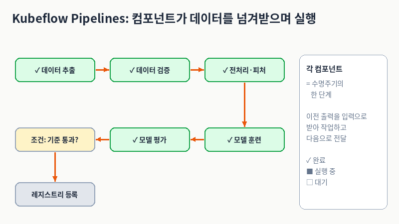
이미지 해설 (그림을 직접 열어 본 내용입니다)
- 보이는 것: 제목은 "Kubeflow Pipelines: 컴포넌트가 데이터를 넘겨받으며 실행". 초록색 둥근 상자 5개가 주황색 화살표로 이어집니다.
✓ 데이터 추출→✓ 데이터 검증→✓ 전처리·피처→ (아래로 꺾여)✓ 모델 훈련→✓ 모델 평가. 그 왼쪽 끝에서 노란색 상자조건: 기준 통과?로 이어지고, 다시 아래의 회색 상자레지스트리 등록으로 끝납니다. 즉 블록은 모두 7개(초록 5 + 노랑 1 + 회색 1)입니다. 오른쪽 카드에는 "각 컴포넌트 = 수명주기의 한 단계 / 이전 출력을 입력으로 받아 작업하고 다음으로 전달" 문구와 상태 범례(✓ 완료, ■ 실행 중, □ 대기)가 있습니다. - 초보자용 풀이: 컴포넌트 하나는 "앞 단계가 남긴 결과물을 받아서 → 자기 일을 하고 → 결과를 다음 단계에 넘기는" 바통 터치 선수입니다. 노란 상자는 "기준을 통과했을 때만 다음 단계로 간다"는 조건 분기를 나타냅니다.
- 주의: 이 그림은 데이터 검증·모델 훈련·평가를 포함한 일반적인 학습 파이프라인 예시입니다. 이 장에서 실제로 만드는 4단계 추론 파이프라인(읽기 → 피처 조회 → 추론 → 쓰기)과는 다르니 헷갈리지 마세요. 캡션에 달린 블로그 페이지에서 이 이미지가 실제로 쓰였는지는 확인되지 않았습니다.
직접 눌러 보기: 컴포넌트마다 새 Pod
컴포넌트 하나를 만드는 세 단계 (미리보기)
책은 이 절 뒤에서 컴포넌트 하나를 만들 때 다음 세 가지를 합니다. 이 순서는 이후 네 컴포넌트 모두에 똑같이 적용됩니다.
- 컴포넌트가 수행할 작업을 파이썬 파일로 작성한다.
- 도커를 사용해 컨테이너화한다(이미지 빌드).
component.yaml에 컴포넌트 명세(입력·출력·실행 명령)를 작성한다.
다음 절부터 첫 번째 컴포넌트인 데이터 읽기 컴포넌트로 이 세 단계를 직접 따라갑니다.
리스팅 5.1: 데이터 읽기 컴포넌트의 입출력
첫 번째 컴포넌트의 파이썬 코드입니다. 소스 코드 링크: read_data.py
왜 이미지를 빌드해야 하나
각 큐브플로 컴포넌트는 단일 쿠버네티스 파드에서 실행됩니다(책 3.3.3절). 파드가 실행되려면 컨테이너가 필요하므로, 컴포넌트를 만들려면 컴포넌트 소스 코드가 포함된 이미지를 빌드해야 합니다. 책은 리스트 5.1 에서 볼 수 있듯 데이터 읽기 컴포넌트 빌드부터 시작합니다.
read_data.py 는 MinIO 에서 데이터를 읽는 방법이 담긴 일반 파이썬 파일입니다. 흐름은 다음과 같습니다.
- 호스트, 액세스 키, 시크릿 키로 MinIO 클라이언트를 먼저 정의합니다.
- 클라이언트로 사용자 ID 파일을 가져옵니다.
- 가져온 파일을 판다스 DataFrame 으로 변환합니다.
용어 한 줄 풀이
MinIO: 직접 설치해서 쓸 수 있는 S3 호환 객체 스토리지(파일 창고). Parquet(파케이): 표 데이터를 열 단위로 압축해 저장하는 파일 형식. DataFrame: 파이썬 판다스의 표(엑셀 시트 같은 구조) 객체. 액세스 키/시크릿 키: MinIO 에 로그인하는 아이디/비밀번호에 해당하는 값.
리스팅 5.1 본문 코드
아래는 본문에 적힌 그대로입니다.
# Listing 5.1 Read data component 데이터 읽기 컴포넌트
def get_data(
minio_host: str,
access_key: str,
secret_key: str,
bucket_name: str,
file_name: str,
data_output_path: str,
):
client = Minio(
endpoint=minio_host,
access_key=access_key,
secret_key=secret_key,
secure=False,
)
local_temp_file = os.path.join("/tmp", file_name)
print(f"Downloading {file_name} from bucket {bucket_name}...")
client.fget_object(
bucket_name,
file_name,
local_temp_file,
) # MinIO 에서 파케이(Parquet) 파일을 다운로드한다.
print(f"Reading the downloaded file {local_temp_file}...")
df = pd.read_parquet(local_temp_file) # 파케이 파일을 DataFrame으로 로드한다.
print(f"Saving the processed data to {data_output_path}..."
⚠ 바로잡기: 위 코드의 마지막 줄print(f"Saving the processed data to {data_output_path}..."는 닫는 괄호)가 빠져 있어 그대로는 실행되지 않습니다(문법 오류). 또한 리스팅에는import줄이 나오지 않지만, 코드에 쓰인Minio,os,pandas(pd),pathlib.Path는 파일 맨 위에서 가져와야 합니다. 책은 이어지는 저장 코드를 바로 다음 블록으로 따로 보여 줍니다. 아래 "정정본"은 그 두 블록을 이어 붙인 것입니다.
정정본: 괄호를 닫고 저장 코드까지 이은 모양
print(f"Saving the processed data to {data_output_path}...")
Path(data_output_path).parent.mkdir(parents=True, exist_ok=True)
df.to_parquet(data_output_path)
위는 get_data 함수 본문의 마지막 부분(본문 코드의 끝 줄을 고친 것 + 아래에서 설명하는 저장 코드)입니다. 함수 안쪽이므로 들여쓰기 4칸을 유지합니다.
줄 단위 해설: 리스팅 5.1
| 코드 | 쉬운 설명 |
|---|---|
def get_data( ... data_output_path: str, |
함수 정의. 값 6개를 모두 문자열(str)로 받습니다: MinIO 주소(minio_host), 로그인 키 2개(access_key, secret_key), 읽을 버킷 이름(bucket_name, 파일 창고의 폴더 같은 것), 버킷 안의 파일 이름(file_name), 결과를 저장할 출력 경로(data_output_path). |
client = Minio(endpoint=minio_host, access_key=..., secret_key=..., secure=False) |
MinIO 에 접속할 클라이언트 객체를 만듭니다. secure=False 는 TLS(암호화) 없이 http:// 로 접속한다는 뜻입니다. 클러스터 내부 통신이라 가능하지만, 운영 환경이라면 보안 설정을 따로 점검해야 합니다. |
local_temp_file = os.path.join("/tmp", file_name) |
내려받은 파일을 컨테이너 안의 임시 폴더 /tmp 아래에 둘 경로를 만듭니다. 예: 파일 이름이 entity_df.parquet 이면 /tmp/entity_df.parquet. |
print(f"Downloading {file_name} from bucket {bucket_name}...") |
"어떤 파일을 어느 버킷에서 받는 중"이라는 진행 로그. 나중에 실행 화면의 로그에서 확인합니다. |
client.fget_object(bucket_name, file_name, local_temp_file) |
MinIO 에서 해당 객체를 내려받아 local_temp_file 에 저장합니다. 주석 "MinIO 에서 파케이(Parquet) 파일을 다운로드한다". |
print(f"Reading the downloaded file {local_temp_file}...") |
이제 읽는다는 진행 로그. |
df = pd.read_parquet(local_temp_file) |
내려받은 Parquet 파일을 판다스 DataFrame(표)으로 메모리에 올립니다. 주석 "파케이 파일을 DataFrame으로 로드한다". |
print(f"Saving the processed data to {data_output_path}..." |
저장 중이라는 진행 로그. 책에는 ) 가 빠져 있습니다(위 정정 참고). |
/tmp)로 가져오고, 상자를 열어 표(DataFrame)로 펼칩니다.읽은 표를 "다음 컴포넌트가 가져갈 수 있게" 저장하기
책은 이어서 말합니다. 판다스 DataFrame 은 다음 컴포넌트에서 가져오거나 사용할 수 있도록 어딘가에 저장되어야 합니다. 이 경로가 바로 data_output_path 입니다. DataFrame 을 data_output_path 에 저장해 두면 파이프라인의 후속 컴포넌트가 이 파일을 재사용할 수 있습니다. 이를 위해 먼저 mkdir 로 출력 경로의 디렉터리를 만든 뒤, 해당 디렉터리에 DataFrame 을 저장합니다. (본문 코드 링크: 특정 커밋의 45행)
# https://github.com/practical-mlops/chapter-5/blob/332915b2f617e7fed8646b7c096653c87eed9d30/src/read_data/read_data.py#L45
Path(data_output_path).parent.mkdir(parents=True, exist_ok=True)
df.to_parquet(data_output_path)
| 코드 | 쉬운 설명 |
|---|---|
# https://github.com/practical-mlops/chapter-5/blob/332915b.../read_data.py#L45 |
주석입니다. 이 코드가 저장소의 어느 커밋·몇 번째 줄에서 왔는지 알려 주는 링크. |
Path(data_output_path).parent.mkdir(parents=True, exist_ok=True) |
출력 파일이 들어갈 폴더를 먼저 만듭니다. parent 는 파일의 바로 위 폴더, parents=True 는 중간 폴더까지 한꺼번에 만든다는 뜻, exist_ok=True 는 이미 있어도 오류를 내지 않는다는 뜻. |
df.to_parquet(data_output_path) |
표를 Parquet 파일로 실제로 저장합니다. 이 파일이 다음 단계에 전달되는 산출물(아티팩트) 입니다. |
핵심 포인트:data_output_path는 우리가 정하는 경로가 아니라 KFP 가 "여기에 쓰세요"라고 정해 주는 출력 칸입니다(이 연결은 뒤의component.yaml에서{outputPath: data_output}으로 이루어집니다). 이 파일을 어디에 보관하고 다음 컴포넌트에 어떻게 전달할지는 KFP 실행 환경이 맡는 것으로 알려져 있습니다. 내부 구현의 세부 사항까지는 이 절에서 단정하지 않습니다.
🔐 보안 주의: 이 컴포넌트는access_key/secret_key를 일반 문자열 입력으로 받습니다. KFP Run 파라미터로 이렇게 넘긴 키는 실행 이력(UI·DB)에 평문으로 남을 수 있습니다. 운영에서는 Kubernetes Secret 으로 주입하고, 코드가 환경변수를 읽도록 수정해야 합니다. 자세한 내용은 이 절 끝의 리스팅 5.6 해설 뒤 보안 박스를 보세요.
데이터 읽기 컴포넌트 ② 리스팅 5.2: 메인 블록(argparse)
데이터 읽기 컴포넌트 ② 리스팅 5.2: 메인 블록(argparse)
책은 이어서 read_data.py 파일에 메인 블록을 정의해서 get_data 함수에 인수를 전달할 수 있게 합니다. 인수 정의에는 파이썬 표준 라이브러리 argparse 를 씁니다. (argparse = 터미널에서 --옵션 값 형태로 받은 입력을 파이썬 변수로 바꿔 주는 도구)
리스팅 5.2 본문 코드
# Listing 5.2 Main block of the read data component 데이터 읽기 컴포넌트의 메인 블록
def main():
parser = argparse.ArgumentParser(
description="Download data from Minio and save as a Dataset."
)
parser.add_argument(
"--minio_host",
type=str,
required=True,
help="Minio host URL",
)
parser.add_argument(
"--access_key", type=str, required=True, help="Minio access key"
)
parser.add_argument(
"--secret_key", type=str, required=True, help="Minio secret key"
)
parser.add_argument(
"--bucket_name", type=str, required=True, help="Minio bucket name"
)
parser.add_argument(
"--file_name", type=str, required=True, help="File name to download"
)
parser.add_argument(
"--data_output_path",
type=str,
required=True,
help="Output path for the Dataset",
)
args = parser.parse_args()
get_data(
minio_host=args.minio_host,
access_key=args.access_key,
secret_key=args.secret_key,
bucket_name=args.bucket_name,
file_name=args.file_name,
data_output_path=args.data_output_path,
)
if __name__ == "__main__":
main()
줄 단위 해설: 리스팅 5.2
| 코드 | 쉬운 설명 |
|---|---|
def main(): |
프로그램의 입구 함수를 정의합니다. |
parser = argparse.ArgumentParser(description="Download data from Minio and save as a Dataset.") |
명령줄 인수 해석기를 만듭니다. description 은 --help 를 눌렀을 때 보이는 프로그램 설명입니다("MinIO 에서 데이터를 내려받아 Dataset 으로 저장"). |
parser.add_argument("--minio_host", type=str, required=True, help="Minio host URL") |
--minio_host 라는 옵션을 등록합니다. type=str 은 문자열로 받는다는 뜻, required=True 는 빠뜨리면 오류라는 뜻, help 는 도움말입니다. |
parser.add_argument("--access_key", ...) |
MinIO 접근 키 옵션. 같은 방식(문자열, 필수). |
parser.add_argument("--secret_key", ...) |
MinIO 시크릿 키 옵션. |
parser.add_argument("--bucket_name", ...) |
MinIO 버킷 이름 옵션. |
parser.add_argument("--file_name", ...) |
내려받을 파일 이름 옵션. |
parser.add_argument("--data_output_path", ...) |
결과 Dataset 을 쓸 출력 경로 옵션("Output path for the Dataset"). |
args = parser.parse_args() |
실제로 입력된 명령줄을 읽어서 args 에 담습니다. args.minio_host 처럼 점(.)으로 꺼냅니다. |
get_data(minio_host=args.minio_host, ..., data_output_path=args.data_output_path) |
읽은 값 6개를 앞의 get_data 함수에 이름을 맞춰 그대로 넘겨 실행합니다. |
if __name__ == "__main__": / main() |
이 파일을 직접 실행했을 때만 main() 이 돌아가게 하는 파이썬 관용구입니다(다른 파일에서 import 할 때는 실행되지 않음). |
get_data 가 주방이라면 main 은 주문서 접수 창구입니다. 컨테이너가 시작될 때 KFP 가 "이 값들로 실행해 줘"라는 주문(명령줄 옵션)을 넘겨주면, 창구가 주문을 읽어 주방에 전달합니다. 즉 KFP 가 파이썬 함수를 직접 호출하는 것이 아니라, 컨테이너 안에서 이 스크립트를 명령어로 실행하는 구조입니다.이름이 두 개인 것을 헷갈리지 마세요: 파이썬 쪽 옵션은--data_output_path이고, 뒤에서 만들component.yaml의 출력 이름은data_output입니다. 둘은 이름이 달라도 YAML 의--data_output_path/{outputPath: data_output}줄이 서로 이어 줍니다(리스팅 5.4 해설 참고).
이제 MinIO 에서 데이터를 읽어 파이프라인 아티팩트 스토어(단계 사이에 넘기는 파일을 보관하는 곳)에 기록하는 파이썬 코드가 준비되었습니다. 다음 단계는 이 코드를 컨테이너로 만드는 것입니다.
데이터 읽기 컴포넌트: Dockerfile과 컨테이너 이미지 패키징 (리스팅 5.3)
데이터 읽기 컴포넌트: Dockerfile과 컨테이너 이미지 패키징 (리스팅 5.3)
Kubeflow Pipelines 컴포넌트 코드를 독립된 환경에서 실행하려면 컨테이너 이미지로 패키징해야 하며, 이를 위해 리스팅 5.3처럼 Dockerfile을 작성합니다. 본문이 설명하는 Dockerfile의 빌드 흐름은 다음과 같습니다.
- 파이썬 3.10 베이스 이미지에서 시작합니다.
- 작업 디렉터리를
/app으로 설정합니다. build-essential을 설치하고 임시 디렉터리를 정리합니다.requirements.txt를 작업 디렉터리 내 지정된 위치로 복사하고 해당 패키지들을 설치합니다. 이 패키지에는 컴포넌트에 필요한 모든 의존성이 포함됩니다.- 마지막으로 소스 코드를 작업 디렉터리에 복사합니다.
리스팅 5.3 본문 Dockerfile
# Listing 5.3 Component Dockerfile
FROM python:3.10-slim-buster
WORKDIR /app
RUN apt-get update && \
apt-get install --no-install-recommends -y \
build-essential \
&& apt-get clean && rm -rf /tmp/* /var/tmp/*
COPY requirements.txt /app/requirements.txt
RUN pip3 install --upgrade pip
RUN pip3 install --no-cache-dir -r requirements.txt
ENV PYTHONPATH "/app"
COPY . /app
본문에서는 이 블록의 코드 펜스 언어가
python으로 되어 있었지만, 내용은 Dockerfile이므로dockerfile로 표기했습니다.
⚠ 바로잡기 / 트러블슈팅: 위 본문의 베이스 이미지python:3.10-slim-buster의buster는 이미 지원이 끝난(EOL) Debian 버전이어서,apt-get update단계에서 패키지 미러 접근 실패가 발생할 수 있습니다. 이 경우FROM python:3.10-slim-bookworm등으로 교체하여 빌드합니다. 참고로 Debian buster의 장기 지원(LTS)은 2024-06-30에 종료되었습니다.
정정본:
FROM python:3.10-slim-bookworm
WORKDIR /app
RUN apt-get update && \
apt-get install --no-install-recommends -y \
build-essential \
&& apt-get clean && rm -rf /tmp/* /var/tmp/*
COPY requirements.txt /app/requirements.txt
RUN pip3 install --upgrade pip
RUN pip3 install --no-cache-dir -r requirements.txt
ENV PYTHONPATH "/app"
COPY . /app
줄 단위 해설: 리스팅 5.3
| 줄 | 쉬운 설명 |
|---|---|
# Listing 5.3 Component Dockerfile |
주석(설명용). |
FROM python:3.10-slim-buster |
출발점 이미지. 파이썬 3.10이 이미 깔린 가벼운(slim) 리눅스 이미지에서 시작합니다. |
WORKDIR /app |
이후 명령을 실행할 작업 폴더를 /app으로 정합니다(없으면 만듭니다). |
RUN apt-get update && \ |
리눅스 패키지 목록을 갱신합니다. \는 "명령이 다음 줄에 이어진다"는 표시입니다. |
apt-get install --no-install-recommends -y \ |
패키지를 설치합니다. --no-install-recommends는 꼭 필요한 것만 설치(이미지를 작게 유지), -y는 "묻지 말고 예"입니다. |
build-essential \ |
설치할 패키지: C 컴파일러 등 빌드 도구 묶음. 일부 파이썬 패키지는 설치 중 컴파일이 필요합니다. |
&& apt-get clean && rm -rf /tmp/* /var/tmp/* |
설치 후 캐시와 임시 파일을 지워 이미지 크기를 줄입니다. 이것은 이미지를 만드는 동안 이미지 안의 임시 파일 정리이며, 내 컴퓨터의 파일을 지우라는 명령이 아닙니다. |
COPY requirements.txt /app/requirements.txt |
빌드 컨텍스트의 requirements.txt를 이미지 안 /app/으로 복사합니다. |
RUN pip3 install --upgrade pip |
pip(파이썬 패키지 설치기)를 최신으로 올립니다. |
RUN pip3 install --no-cache-dir -r requirements.txt |
requirements.txt에 적힌 모든 의존성을 설치합니다. --no-cache-dir은 다운로드 캐시를 남기지 않아 이미지를 작게 합니다. |
ENV PYTHONPATH "/app" |
파이썬이 모듈을 찾는 경로에 /app을 추가합니다. 그래서 /app/src/... 코드를 import할 수 있습니다. |
COPY . /app |
마지막으로 현재 폴더의 모든 소스 코드를 /app으로 복사합니다. (코드를 마지막에 복사하는 이유: 코드만 바뀌었을 때 앞 단계의 설치 결과를 캐시로 재사용하게 하려는 일반적인 도커 관례입니다.) |
디렉터리 구조와 이미지 레지스트리 배포 원리
컴포넌트 패키징 단계의 디렉터리 구조는 다음과 같습니다:
├── Dockerfile
└── src
└── read_data
└── read_data.py
read_data.py 컴포넌트는 src/read_data 아래에 정의했고, Dockerfile은 디렉터리 루트에 위치합니다. Dockerfile이 복사하는 requirements.txt도 같은 루트에 배치됩니다.
빌드된 컨테이너 이미지는 컨테이너 레지스트리(Docker Hub, 사내 프라이빗 레지스트리 등)에 푸시되어 보관됩니다. Kubeflow Pipelines 클러스터의 각 워커 노드는 파이프라인이 실행될 때 지정된 이미지 주소에서 이미지를 풀(pull)받아 격리된 Pod 컨테이너로 컴포넌트를 구동합니다.
운영 주의 (latest 태그의 의미):latest는 "항상 최신"을 보장하는 특별한 자동 갱신 기능이 아니라 관례적으로 쓰는 기본 태그 이름일 뿐입니다. 같은latest태그라도 이미지 내용이 덮어쓰여 바뀔 수 있으므로 "내용이 고정된 불변 버전"이 아닙니다. 클러스터의 이미지 풀 정책(ImagePullPolicy)에 따라 이전 노드 캐시가 그대로 쓰일 수도 있으므로, 파이프라인의 엄격한 재현성이 요구되는 프로덕션 환경에서는 고유한 버전 태그나 이미지 다이제스트(SHA256)를 명시하는 것이 안전합니다.
데이터 읽기 컴포넌트 ④ 리스팅 5.4: component.yaml
책은 "컴포넌트 코드를 작성하고 컨테이너화까지 완료했다. 다음 단계는 큐브플로 컴포넌트 명세 파일을 정의하는 것"이라고 말합니다. 쿠버네티스 객체를 정의하는 방식과 비슷하게, 컴포넌트 정의를 담을 YAML 파일을 작성합니다. 소스 코드 링크: read_data/component.yaml
read_data/component.yaml 의 구성은 다음과 같습니다.
- 컴포넌트의 이름과 설명으로 시작합니다.
- 컴포넌트의 입력과 출력을 데이터 타입과 함께 지정합니다. 특히
data_output을outputs아래에Dataset타입으로 정의했다는 점에 유의하세요. 이로써 큐브플로는data_output이 컴포넌트의 출력(데이터셋)을 담는다는 것을 인식합니다. - 데이터를 읽기 위해 실행해야 하는 도커 이미지와 명령어를 지정합니다. 이 경우 명령어는 파이썬 파일
read_data.py를 실행합니다(리스트 5.4). - 컴포넌트 실행에 필요한 인수도 제공하는데, 이 인수들의 값은 미리 정의된 입력과 출력에서 가져옵니다.
리스팅 5.4 본문 YAML
# Listing 5.4 Read component definition file 읽기 컴포넌트 정의 파일
name: Read Data From MinIO
description: Fetches data from MinIO and outputs as a Dataset.
inputs:
- name: minio_host
type: String
description: MinIO host URL.
- name: access_key
type: String
description: MinIO access key.
- name: secret_key
type: String
description: MinIO secret key.
- name: bucket_name
type: String
description: Name of the MinIO bucket.
- name: file_name
type: String
description: Name of the file to fetch from MinIO.
outputs:
- name: data_output
type: Dataset
description: Output dataset artifact.
implementation:
container:
image: 'varunmallya/read-minio-data:latest' # 컴포넌트의 도커 이미지
command:
- python3
- /app/src/read_data/read_data.py # 입력과 출력을 인수로 사용해 컴포넌트를 실행하는 파이썬 명령어
- --minio_host
- {inputValue: minio_host}
- --access_key
- {inputValue: access_key}
- --secret_key
- {inputValue: secret_key}
- --bucket_name
- {inputValue: bucket_name}
- --file_name
- {inputValue: file_name}
- --data_output_path
- {outputPath: data_output}
줄 단위 해설: 리스팅 5.4
| 코드 | 쉬운 설명 |
|---|---|
name: Read Data From MinIO |
컴포넌트의 이름. KFP 화면에 표시됩니다. |
description: Fetches data from MinIO and outputs as a Dataset. |
설명: "MinIO 에서 데이터를 가져와 Dataset 으로 출력". |
inputs: |
이 컴포넌트가 받는 입력 목록의 시작. |
- name: minio_host / type: String / description: MinIO host URL. |
입력 1: MinIO 주소. 타입은 문자열(String). 이하 입력 4개도 같은 모양입니다. |
- name: access_key |
입력 2: MinIO 접근 키(문자열). |
- name: secret_key |
입력 3: MinIO 시크릿 키(문자열). |
- name: bucket_name |
입력 4: 버킷 이름(문자열). |
- name: file_name |
입력 5: 가져올 파일 이름(문자열). |
outputs: |
이 컴포넌트가 내놓는 출력 목록의 시작. |
- name: data_output / type: Dataset |
출력: 이름은 data_output, 타입은 Dataset. "이 출력은 데이터셋 아티팩트(파일)"라고 KFP 에 알립니다. |
implementation: / container: |
어떻게 실행하는지: 컨테이너로 실행한다고 선언합니다. |
image: 'varunmallya/read-minio-data:latest' |
실행할 도커 이미지(주석: 컴포넌트의 도커 이미지). 앞 단계에서 빌드·푸시한 이미지에 해당합니다. |
command: |
컨테이너가 시작할 때 실행할 명령어 목록의 시작. |
- python3 |
파이썬 3 으로 실행합니다. |
- /app/src/read_data/read_data.py |
실행할 스크립트의 경로(Dockerfile 이 /app 아래로 복사해 둔 파일). 주석: 입력과 출력을 인수로 사용해 컴포넌트를 실행하는 파이썬 명령어. |
- --minio_host / - {inputValue: minio_host} |
옵션 이름 다음 줄에 값이 옵니다. {inputValue: minio_host} 는 "입력 minio_host 의 값을 그대로 문자열로 여기에 끼워 넣어라"입니다. |
- --access_key / - {inputValue: access_key} |
접근 키 값 전달. |
- --secret_key / - {inputValue: secret_key} |
시크릿 키 값 전달. |
- --bucket_name / - {inputValue: bucket_name} |
버킷 이름 전달. |
- --file_name / - {inputValue: file_name} |
파일 이름 전달. |
- --data_output_path / - {outputPath: data_output} |
{outputPath: data_output} 는 "출력 data_output 을 쓸 파일 경로를 KFP 가 정해서 여기에 넣어라"입니다. 그 경로가 read_data.py 의 --data_output_path 로 들어가 df.to_parquet(...) 이 거기에 저장합니다. |
inputValue 와 outputPath, 한눈에 비교
| 표기 | 무엇을 넣어 주나 | 이 컴포넌트에서의 예 |
|---|---|---|
{inputValue: 이름} |
입력값 그 자체(작은 문자열) | MinIO 주소, 키, 버킷 이름 |
{outputPath: 이름} |
KFP 가 정한 출력 파일 경로 (이 경로에 결과를 써야 함) | data_output → --data_output_path |
다음 컴포넌트(피처 조회)에서는 세 번째 표기인 {inputPath: 이름}(앞 단계가 만든 입력 파일 경로)이 추가로 등장합니다.
component.yaml 은 주문서 + 조리법입니다. 입력(재료 5가지)과 출력(완성 요리 1접시)을 적고, "이 이미지로, 이 명령으로 조리하라"고 적어 둡니다. inputValue 는 "재료를 그대로 건네기", outputPath 는 "완성 요리를 이 접시 위에 올려라"입니다.⚠ 비유일 뿐입니다: 책은 "쿠버네티스 객체를 정의하는 방식과 유사하다"고 하지만, 이component.yaml자체는 쿠버네티스의 Pod·Job 같은 리소스가 아니며kubectl apply대상도 아닙니다. KFP 고유의 컴포넌트 명세 형식이고, 실제 Pod 는 KFP 실행 환경이 실행 때 만들어 냅니다. 참고로 이 형식은 KFP v1 스타일의 컴포넌트 YAML 이며 KFP v2 가 이를 불러 쓸 수 있는 것으로 알려져 있습니다. 이 형식은 파이썬 함수 주석으로 입출력을 표시하는 v2 방식(Input[Dataset],Output[Dataset])과는 표기가 다릅니다.
컴포넌트 하나를 완성하기까지 한 일 (본문 요약)
이제 컴포넌트 정의가 완료되어 큐브플로 파이프라인에서 사용할 준비가 되었습니다. 이 컴포넌트를 빌드하기 위해 수행한 작업은 다음과 같습니다.
- 컴포넌트가 수행할 작업을 파이썬 파일로 작성하는 것부터 시작했습니다.
- 도커를 사용해 컨테이너화했습니다.
component.yaml에 컴포넌트 명세를 작성했습니다.
flowchart LR A["1 read_data.py 작성"] --> B["2 Dockerfile 로 이미지 빌드 후 push"] B --> C["3 component.yaml 에 명세 작성"] C --> D["파이프라인에서 컴포넌트로 사용"]
컴포넌트 명세를 포함한 디렉터리 구조
├── Dockerfile
├── components
│ └── read_data
│ └── component.yaml
└── src
└── read_data
└── read_data.py
코드는 src/ 아래에, 컴포넌트 정의 YAML 은 components/ 아래에 둡니다. 책은 "나머지 파이프라인 컴포넌트들도 동일한 방식으로 정의"한다고 하며, 다음으로 정의할 컴포넌트가 피처 조회 컴포넌트입니다.
피처 조회 컴포넌트 ① 배경과 리스팅 5.5: retrieve_features.py
두 번째 컴포넌트는 피처 스토어에서 피처를 조회합니다. 먼저 4장에서 남겨 둔 숙제를 이해해야 합니다.
먼저 알아 둘 것: 레지스트리가 "MinIO를 직접 가리켜야" 하는 이유
- 4장에서는 피처 정보를 저장하는
registry_local.db파일을 만들었습니다.feast apply명령을 로컬에서 실행해 피처와 엔티티를 등록했는데, 파일 자체는 MinIO 에 있음에도 불구하고 피처의 파일 소스 주소를localhost로 지정했습니다. - 그런데 파이프라인의 Pod 는 그
localhost를 쓸 수 없습니다. 그래서 파일 본문이 MinIO 를 직접 가리키도록 비로컬 레지스트리에 피처를 다시 등록해야 합니다. 본문 표현으로 S3 엔드포인트 오버라이드를http://localhost:9000에서minio-service.kubeflow.svc.cluster.local:9000으로 바꾼 정의가 필요합니다.
⚠ 바로잡기: 본문에는 이 주소가https://minio-service.kubeflow.svc.cluster.local:9000으로 적혀 있습니다. 하지만 컴포넌트 코드(Minio(..., secure=False))와 이 장의 MinIO 는 TLS 를 쓰지 않는http://이고 포트는 9000 입니다. 소스 노트에도 "오타로 보입니다"라고 적혀 있습니다. 저장소의 Feast 등록 스크립트(scripts/feast/features.py)도http://minio-service.kubeflow.svc.cluster.local:9000을 씁니다. 따라서 올바른 값은http://minio-service.kubeflow.svc.cluster.local:9000입니다.
- 왜
localhost가 안 되고 클러스터 내부 주소여야 하나요? 본문 설명: MinIO 는 공개 엔드포인트가 없고, 서비스가 LoadBalancer 타입이 아니라 클러스터 서비스로만 등록되어 있기 때문입니다(책 3.3.4절). 파이프라인이 도는 Pod 안에서localhost는 "그 Pod 자기 자신"이지 내 노트북이나 MinIO 가 아닙니다. - 또한 이 등록(
feast apply)은 쿠버네티스 클러스터 내부에서 실행해야 합니다. 클러스터 안의 주소(...svc.cluster.local)는 클러스터 안에서만 이름이 풀리기 때문입니다. 그래서 책은 쿠버네티스 잡(Job) 을 사용하는데, Job 은 쿠버네티스 배포(Deployment)와 비슷하지만 명령어 실행이 완료되면 종료됩니다.
용어 한 줄 풀이
Feast 레지스트리: 피처 값 자체가 아니라 "피처·엔티티·원천 파일·주소의 정의"를 적어 둔 장부. feast apply: 그 정의를 레지스트리에 등록하는 명령. Job: 한 번 실행하고 끝나는 쿠버네티스 작업 단위. 엔티티(entity): 피처가 붙는 대상(여기서는 사용자).
코드 작성: retrieve_features.py
피처를 등록한 뒤 retrieve_features.py 에 파이썬 코드를 작성합니다. 본문이 설명하는 흐름은 다음과 같습니다.
- MinIO 에서
feature_store.yaml파일을 다운로드하여 피처 스토어 객체를 초기화합니다. get_historical_features로 과거 피처를 검색합니다. 이 함수에는 엔티티 데이터프레임과 컴포넌트의 입력으로 쓸 피처 목록이 필요합니다(리스트 5.5).entity_df는 Dataset 의 입력 경로이며, 나중에component.yaml에서 정의합니다. 파이썬 파일에서entity_df의 데이터 타입은 문자열(string) 입니다(본문의entify_df는 오탈자).- 마찬가지로
data_output은 컴포넌트의 출력값(역시 출력 경로)입니다.
리스팅 5.5 본문 코드
# Listing 5.5 Feature retrieval component 피처 조회 컴포넌트
def get_features(
minio_host: str,
access_key: str,
secret_key: str,
bucket_name: str,
file_name: str,
entity_df: str,
feature_list: str,
data_output: str,
):
store = init_feature_store(
minio_host, access_key, secret_key, bucket_name, file_name
) # 피처 스토어를 초기화한다
print("Feature store initialized")
feature_list = feature_list.split(",") # 피처 목록을 가져온다
print("Requested features:", feature_list)
print(entity_df)
entity_df = pd.read_parquet(entity_df) # 입력 경로에서 엔티티 DataFrame 을 읽어온다
print("Entity DataFrame head:")
print(entity_df.head())
feature_df = store.get_historical_features(
entity_df=entity_df,
features=feature_list,
).to_df()
print("Retrieved historical features:")
print(feature_df.head())
Path(data_output).parent.mkdir(parents=True, exist_ok=True)
feature_df.to_parquet(data_output) # 피처 DataFrame 을 출력 경로에 쓴다
줄 단위 해설: 리스팅 5.5
| 코드 | 쉬운 설명 |
|---|---|
def get_features(minio_host, access_key, secret_key, bucket_name, file_name, entity_df, feature_list, data_output) |
함수 정의. 모두 문자열(str)인 값 8개를 받습니다. 앞 5개는 MinIO 접속·파일 정보(feature_store.yaml 이 어느 버킷의 어떤 파일인지), 뒤 3개가 이 컴포넌트의 핵심입니다. entity_df 는 입력 파일의 경로, feature_list 는 쉼표로 이은 피처 이름 문자열, data_output 은 결과를 쓸 경로입니다. |
store = init_feature_store(minio_host, access_key, secret_key, bucket_name, file_name) |
주석: 피처 스토어를 초기화한다. MinIO 에서 feature_store.yaml 을 내려받아 Feast 의 FeatureStore 객체를 만드는 보조 함수입니다. 이 함수의 본문은 책 지면(소스)에는 나오지 않습니다. 참고로 저장소 코드를 보면 이 함수는 접속에 필요한 환경변수(AWS_ACCESS_KEY_ID, AWS_SECRET_ACCESS_KEY, FEAST_S3_ENDPOINT_URL 등)를 설정하는 것으로 보입니다. |
print("Feature store initialized") |
초기화 완료 로그. |
feature_list = feature_list.split(",") |
주석: 피처 목록을 가져온다. "a:x,a:y" 같은 쉼표 문자열을 ["a:x", "a:y"] 리스트로 바꿉니다. 컴포넌트 입력은 문자열로 넘기기 쉬워서 이렇게 합니다. |
print("Requested features:", feature_list) / print(entity_df) |
요청한 피처 목록과, 이 시점의 entity_df (아직 경로 문자열)를 로그로 출력합니다. |
entity_df = pd.read_parquet(entity_df) |
주석: 입력 경로에서 엔티티 DataFrame 을 읽어온다. 같은 변수 이름이 문자열(경로) → 표(DataFrame)로 바뀝니다. 읽는 파일은 앞 컴포넌트(데이터 읽기)가 만든 "누구의 피처가 필요한가" 표입니다. |
print("Entity DataFrame head:") / print(entity_df.head()) |
표의 앞 5행 미리보기. 이것은 일부 행의 미리보기일 뿐 전체 데이터 품질을 검증하는 것은 아닙니다. |
feature_df = store.get_historical_features(entity_df=entity_df, features=feature_list).to_df() |
피처 스토어에서 과거 피처를 조회해 표로 만듭니다. 덧붙이면, 이 함수는 엔티티 표의 시각 열(event_timestamp)을 기준으로 "그 시각 이전에 유효했던 피처 값"을 붙이는 point-in-time join 을 하는 것으로 알려져 있습니다. |
print("Retrieved historical features:") / print(feature_df.head()) |
조회된 피처 표의 앞부분 미리보기. |
Path(data_output).parent.mkdir(parents=True, exist_ok=True) |
출력 파일이 들어갈 폴더를 먼저 만듭니다(리스팅 5.1 의 저장 코드와 같은 패턴). |
feature_df.to_parquet(data_output) |
주석: 피처 DataFrame 을 출력 경로에 쓴다. 이 파일이 다음 컴포넌트(추론)의 입력이 됩니다. |
📝 변수 하나가 세 얼굴을 가집니다:entity_df는 파이썬 함수 안에서는 파일 경로 문자열 →read_parquet후에는 표, 그리고 KFP 명세(YAML)에서는 Dataset 입력 아티팩트입니다. 이름은 같아도 어디서 보느냐에 따라 의미가 다릅니다.
컨테이너로 포장할 때의 참고
이 컴포넌트도 앞 컴포넌트와 같은 방식으로 컨테이너 이미지로 포장합니다. 새 파일(retrieve_features.py)을 작업 디렉터리에 추가하는 것이 전부이므로 Dockerfile 은 수정할 필요가 없습니다(마지막 줄이 COPY . /app 이기 때문). 다만 Feast 의존성을 requirements.txt 에 추가해야 합니다. 도커 이미지 이름은 retrieve-feast-features 로 지정할 수 있습니다(본문의 retrieve-feast-festures 는 철자 오류이며, 뒤의 YAML 에 적힌 이름은 retrieve-feast-features 입니다).
리스팅 5.6: 피처 조회 컴포넌트 명세와 보안
마지막 단계는 리스트 5.6 에 나온 것처럼 component.yaml 을 정의하는 것입니다. 컴포넌트에 이름과 적절한 설명을 붙인 뒤 입력과 출력을 지정하고, 컨테이너 항목 아래에 이미지 이름과 명령어를 명시합니다. entity_df 와 data_output 의 데이터 타입은 Dataset 이며 각각 inputs 와 outputs 에 나열됩니다(본문의 intputs, outpus 는 오탈자).
리스팅 5.6 본문 YAML
# Listing 5.6 Feature retrieval component definition file 피처 조회 컴포넌트 정의 파일
name: Retrieve Features From Feast
description: >
Retrieves features from Feast where the
feature_store.yaml is stored in MinIO
inputs:
- name: minio_host
type: String
- name: access_key
type: String
- name: secret_key
type: String
- name: bucket_name
type: String
- name: file_name
type: String
- name: entity_df # entity_df 는 inputs 항목에 데이터셋으로 등록된다
type: Dataset
- name: feature_list
type: String
outputs:
- name: data_output # data_output 은 outputs 항목에 데이터셋을 등록된다
type: Dataset
implementation:
container:
image: 'varunmallya/retrieve-feast-features:latest'
command:
- python3
- /app/src/retrieve_features/retrieve_features.py
- --minio_host
- {inputValue: minio_host}
- --access_key
- {inputValue: access_key}
- --secret_key
- {inputValue: secret_key}
- --bucket_name
- {inputValue: bucket_name}
- --file_name
- {inputValue: file_name}
- --entity_df # entity_df 는 entity_df 인수의 inputPath 값으로 사용된다.
- {inputPath: entity_df}
- --feature_list
- {inputValue: feature_list}
- --data_output # data_output 은 data_output 인수의 outputPath 값으로 사용된다.
- {outputPath: data_output}
줄 단위 해설: 리스팅 5.6
| 코드 | 쉬운 설명 |
|---|---|
name: Retrieve Features From Feast |
컴포넌트 이름: "Feast 에서 피처 조회". |
description: > + 두 줄 |
> 는 YAML 에서 여러 줄을 한 문단으로 이어 쓰는 문법입니다. 내용: "feature_store.yaml 이 MinIO 에 저장된 Feast 에서 피처를 조회한다". |
inputs: |
입력 목록의 시작. |
minio_host, access_key, secret_key, bucket_name, file_name (모두 type: String) |
MinIO 접속 정보와, feature_store.yaml 이 들어 있는 버킷·파일 이름 5개. 값 그 자체를 받으므로 문자열입니다. |
- name: entity_df # ... / type: Dataset |
앞 컴포넌트가 만든 Dataset 을 입력으로 받는 항목입니다. 주석: entity_df 는 inputs 항목에 데이터셋으로 등록된다. |
- name: feature_list / type: String |
쉼표로 이은 피처 이름 문자열(작은 값이므로 String). |
outputs: / - name: data_output # ... / type: Dataset |
이 컴포넌트가 내놓는 결과 Dataset. 주석: data_output 은 outputs 항목에 데이터셋으로 등록된다. |
implementation: / container: |
컨테이너로 실행합니다. |
image: 'varunmallya/retrieve-feast-features:latest' |
실행할 이미지(저자 계정). |
- python3 / - /app/src/retrieve_features/retrieve_features.py |
실행할 명령과 스크립트 경로. |
--minio_host ~ --file_name + {inputValue: ...} (5쌍) |
문자열 값 5개를 그대로 전달. |
- --entity_df / - {inputPath: entity_df} |
주석: entity_df 는 entity_df 인수의 inputPath 값으로 사용된다. inputPath 는 "앞 단계가 만들어 둔 입력 파일이 놓인 경로를 KFP 가 정해 여기에 넣어라"입니다. 스크립트는 그 경로로 pd.read_parquet 를 합니다. |
- --feature_list / - {inputValue: feature_list} |
피처 목록 문자열을 그대로 전달. |
- --data_output / - {outputPath: data_output} |
주석: data_output 은 data_output 인수의 outputPath 값으로 사용된다. 결과를 쓸 경로를 KFP 가 정해 줍니다. |
한눈에 비교: inputValue / inputPath / outputPath
| 표기 | 무엇을 넣어 주나 | 이 YAML 에서의 예 |
|---|---|---|
{inputValue: 이름} |
값 그 자체 (작은 문자열) | minio_host, feature_list |
{inputPath: 이름} |
앞 단계가 만든 입력 파일의 경로 (읽기용) | entity_df |
{outputPath: 이름} |
KFP 가 정한 출력 파일의 경로 (쓰기용) | data_output |
이 구분 덕분에 "작은 값(문자열)"과 "큰 파일(Dataset)"을 헷갈리지 않습니다. 파이썬 코드의 entity_df: str(경로)과 YAML 의 type: Dataset이 inputPath 로 연결되는 점을 꼭 기억하세요.
직접 눌러 보기: 세 표기가 어떤 값을 넣는지
flowchart LR R["read_data 컴포넌트"] -->|"data_output 은 Dataset"| E["entity_df 입력 inputPath"] E --> F["retrieve_features 컴포넌트"] M["MinIO 의 feature_store.yaml"] --> F F -->|"data_output 은 Dataset"| N["다음 추론 컴포넌트의 입력"]
위 그림은 데이터 읽기 컴포넌트의 출력이 피처 조회 컴포넌트의 entity_df 입력으로 이어지고, 피처 조회의 출력이 다음 단계(추론)로 넘어가는 모양입니다. (연결은 파이프라인 정의에서 이루어집니다. 해당 코드는 이 구간 밖입니다.)
이 구간의 마무리
책은 "이 컴포넌트는 피처를 제공하며, 이후 예측을 실행할 수 있는 단계로 넘어간다. 이를 위해 다음 컴포넌트인 추론이 필요하다"고 정리합니다.
주의: 두 컴포넌트에 공통인 보안 문제
🔐 보안 안내: 데이터 읽기·피처 조회 컴포넌트 모두access_key,secret_key를 일반 문자열 입력(String)으로 받습니다. KFP Run 파라미터로 이렇게 넘긴 키는 일반 문자열이므로 실행 이력(UI·DB)에 평문으로 남을 수 있습니다. 운영 환경에서는 Kubernetes Secret 에 키를 저장하고 task 설정으로 주입한 뒤, 코드가 환경변수를 읽도록 수정해야 합니다(키를 YAML 인수로 받는 지금 구조 그대로는 Secret 만 써도 해결되지 않습니다). 또 AWS S3 의 IAM 권한과 MinIO 의 키 인증은 동일한 방식이 아닙니다. 마지막으로 Redis 암호 등이 들어 있는feature_store.yaml을 MinIO 버킷에 올리면 그 파일은 평문으로 저장됩니다.
컴포넌트 정의는 작업의 코드·실행 이미지·입출력 계약을 연결합니다. Pod 내부의 localhost는 외부 MinIO 서비스를 뜻하지 않으므로, 레지스트리의 소스 주소는 실행 주체에서 도달 가능한 경로를 표현해야 합니다. latest는 가변 이미지 태그이며, 재현성을 위해 버전과 이미지 digest를 함께 고정하는 설계가 필요합니다.
추론 컴포넌트 구현: MLflow 모델 연동과 배치 예측 (리스팅 5.7)
추론 컴포넌트 (Inference component)
피처를 성공적으로 가져온 후, 파이프라인의 다음 단계는 소득 분류기 머신러닝 모델을 사용해 배치 예측(Batch Prediction)을 생성하는 것입니다.
그렇다면 추론에 사용할 학습된 모델은 어디에 보관되어 있을까요? 모델은 이전 장에서 구축한 MLflow 모델 레지스트리(Model Registry)에 버전별·스테이지별로 안전하게 등록되어 있습니다.
따라서 이 추론 컴포넌트는 다음 두 가지 핵심 역할을 수행해야 합니다:
- MLflow 모델 레지스트리에 접속하여 운영 단계(예:
Staging또는Production)에 등록된 최적의 모델 아티팩트와 학습 시점의 피처 스키마(column_list.pkl)를 내려받습니다. - 이전 피처 조회 컴포넌트(
retrieve_features)가 출력한 피처 데이터셋을 읽어와 전처리를 맞춘 뒤, 모델의predict_proba메서드로 예측 확률을 계산하고 그 결과를 새로운 Parquet 파일로 출력합니다.
이 전체 추론 로직을 담은 코드는 파이썬 파일 run_inference.py에 작성합니다.
이전 단계가 학생들의 '생활기록부와 시험 점수(피처)'를 서류철로 준비해 둔 것이라면, 추론 컴포넌트는 금고(MLflow 레지스트리)에서 '공인된 채점 기준표와 채점관(학습 모델)'을 모셔 와서 학생마다 합격 확률을 계산해 성적표에 새 도장을 찍는 단계입니다.
1. 추론 컴포넌트 파이썬 스크립트 (Listing 5.7)
소스 코드 저장소의 src/run_inference/run_inference.py에 정의된 perform_inference 함수의 전체 코드입니다.
# Listing 5.7 Inference component 추론 컴포넌트
def perform_inference(
minio_host: str,
access_key: str,
secret_key: str,
model_name: str,
model_type: str,
model_stage: str,
mlflow_host: str,
input_data: str,
data_output: str,
):
os.environ["AWS_ACCESS_KEY_ID"] = access_key
os.environ["AWS_SECRET_ACCESS_KEY"] = secret_key
if not minio_host.startswith("http"):
os.environ["AWS_ENDPOINT_URL"] = "http://" + minio_host
else:
os.environ["AWS_ENDPOINT_URL"] = minio_host
mlflow.set_tracking_uri(mlflow_host)
mlflow_client = MlflowClient(mlflow_host) # mlflow 클라이언트를 초기화한다
model_run_id = None
for model in mlflow_client.search_model_versions(
f"name='{model_name}'"
):
if model.current_stage == model_stage:
model_run_id = model.run_id
break
if not model_run_id:
raise ValueError(
f"No model found in stage {model_stage} for model {model_name}."
)
mlflow.artifacts.download_artifacts(
f"runs:/{model_run_id}/column_list.pkl", dst_path="column_list"
)
input_data_df = pd.read_parquet(input_data) # 엔티티와 피처가 포함된 추론 데이터셋을 읽어들인다
input_data_df.drop(columns=["user_id", "event_timestamp"], inplace=True)
with open("column_list/column_list.pkl", "rb") as f:
col_list = pickle.load(f)
input_data_df = pd.get_dummies(
input_data_df, drop_first=True, sparse=False, dtype=float
)
input_data_df = input_data_df.reindex(columns=col_list, fill_value=0)
if model_type == "sklearn": # 모델링 프레임워크에 따라 MLflow 모델을 로드한다
model = mlflow.sklearn.load_model(
model_uri=f"models:/{model_name}/{model_stage}"
)
elif model_type == "xgboost":
model = mlflow.xgboost.load_model(
model_uri=f"models:/{model_name}/{model_stage}"
)
elif model_type == "tensorflow":
model = mlflow.tensorflow.load_model(
model_uri=f"models:/{model_name}/{model_stage}"
)
else:
raise NotImplementedError(
f"Model type '{model_type}' is not supported.")
predicted_classes = [
x[1]
for x in model.predict_proba(
input_data_df
)
] # 모델 예측값을 생성한다.
input_data_df["Predicted_Income_Class"] = predicted_classes
Path(data_output).parent.mkdir(parents=True, exist_ok=True)
input_data_df.to_parquet(data_output) # 예측 결과를 출력 경로에 저장한다.
2. 리스팅 5.7 줄 단위 상세 해설
리스팅 5.7 코드가 수행하는 9단계 동작 과정을 줄 단위로 해설합니다.
-
함수 시그니처 및 인자 정의 (1~11행):
minio_host,access_key,secret_key: MinIO 객체 스토리지에 접속하기 위한 엔드포인트 및 인증 자격 증명입니다.model_name: MLflow 모델 레지스트리에 등록된 모델 이름(예:"income_classifier").model_type: 모델을 학습한 프레임워크 종류("sklearn","xgboost","tensorflow").model_stage: MLflow 모델의 배포 단계(예:"Production"또는"Staging").mlflow_host: MLflow Tracking Server의 접속 URL(예:"http://mlflow-service.kubeflow:5000").input_data: 이전 컴포넌트(retrieve_features)가 출력한 피처 Parquet 파일의 로컬 입력 경로입니다.data_output: 최종 추론 결과 Parquet 파일을 기록할 로컬 출력 경로입니다.
-
객체 스토리지 환경변수 주입 (12~17행):
- MLflow 클라이언트 내부 아티팩트 다운로더는 AWS S3 표준 SDK(boto3)를 사용합니다. MinIO는 S3 호환 스토리징이므로
AWS_ACCESS_KEY_ID,AWS_SECRET_ACCESS_KEY,AWS_ENDPOINT_URL환경변수를 설정하여 MinIO를 바라보도록 유도합니다. minio_host에 프로토콜(http://)이 빠져 있으면http://접두사를 붙여 연결 오류를 막아 줍니다.
- MLflow 클라이언트 내부 아티팩트 다운로더는 AWS S3 표준 SDK(boto3)를 사용합니다. MinIO는 S3 호환 스토리징이므로
-
MLflow 클라이언트 초기화 및 스테이지 모델 검색 (18~30행):
mlflow.set_tracking_uri(mlflow_host)및MlflowClient(mlflow_host)를 호출하여 원격 MLflow 서버와 통신할 세션을 엽니다.mlflow_client.search_model_versions(f"name='{model_name}'")로 지정된 모델의 모든 버전을 조회합니다.- 반복문을 돌며
model.current_stage == model_stage조건을 만족하는 첫 번째 모델의run_id를 추출합니다. 일치하는 모델 버전이 없으면 명시적으로ValueError예외를 발생시켜 파이프라인을 안전하게 중단합니다.
-
학습 시점의 피처 스키마 계약(
column_list.pkl) 다운로드 (31~33행):mlflow.artifacts.download_artifacts를 호출해 해당 학습 실행(runs:/{model_run_id}/)에 저장되어 있던 피처 열 목록 피클 파일(column_list.pkl)을 로컬 디렉터리(column_list/)로 다운로드합니다.- 이는 추론 데이터의 열 순서와 구성을 모델이 학습되었던 당시의 피처 계약과 똑같이 맞추기 위한 필수 단계입니다.
-
추론 입력 데이터 로드 및 식별자 제거 (34~35행):
pd.read_parquet(input_data)로 피처 데이터셋을 판다스 데이터프레임으로 읽어옵니다.input_data_df.drop(columns=["user_id", "event_timestamp"], inplace=True)를 실행하여 모델 예측 연산에 불필요한 메타데이터 열인 사용자 식별자(user_id)와 시점(event_timestamp)을 데이터프레임에서 제거합니다.
-
원-핫 인코딩 및 열 재색인 (36~40행):
pickle.load로 기준 열 목록(col_list)을 불러옵니다.pd.get_dummies(input_data_df, drop_first=True, sparse=False, dtype=float)를 호출해 문자열 범주형 변수를 0과 1의 숫자 지시자 열로 변환합니다.input_data_df.reindex(columns=col_list, fill_value=0)를 실행하여 학습 때 사용된col_list순서대로 열을 재배열하고, 현재 배치에 누락된 열이 있다면 값을 0으로 채워 모델 입력 차원을 맞춥니다.
-
모델 프레임워크별 동적 로드 (41~54행):
model_type문자열 값에 따라 적절한 MLflow 서브패키지 로더를 선택합니다:"sklearn":mlflow.sklearn.load_model(model_uri=f"models:/{model_name}/{model_stage}")"xgboost":mlflow.xgboost.load_model(...)"tensorflow":mlflow.tensorflow.load_model(...)
- 지원하지 않는 프레임워크인 경우
NotImplementedError를 발생시킵니다.
-
모델 확률 추론 수행 (55~60행):
model.predict_proba(input_data_df)를 호출하여 각 데이터 행에 대한 클래스별 확률 분포를 계산합니다.- 리스트 컴프리헨션
[x[1] for x in ...]을 통해 각 결과 배열의 1번 인덱스 값(양성 클래스, 즉 소득 5만 달러 초과 확률)만 추출하여predicted_classes리스트를 구성합니다.
-
결과 열 추가 및 Parquet 저장 (61~63행):
- 데이터프레임에 새로운 열
Predicted_Income_Class를 생성하고 예측 확률 리스트를 할당합니다. Path(data_output).parent.mkdir(parents=True, exist_ok=True)로 저장 대상 상위 폴더가 없으면 생성합니다.input_data_df.to_parquet(data_output)로 최종 예측 데이터셋을 지정된 로컬 아티팩트 경로에 Parquet 형식으로 저장합니다.
- 데이터프레임에 새로운 열
3. 핵심 정정 및 프로덕션 주의사항
리스팅 5.7의 구현은 교재 예제에서는 잘 동작하지만, 프로덕션 환경에서 쓰려면 짚고 넘어가야 할 기술적 한계와 정정할 점이 있습니다.
⚠ 바로잡기 (Predicted_Income_Class 열의 실체는 클래스가 아니라 확률)
코드 61행에서 생성되는Predicted_Income_Class열은 0이나 1과 같은 이산 클래스 라벨(Class Label)이 아니라predict_proba의 두 번째 값인 [0.0 ~ 1.0] 범위의 고소득(>50K) 발생 확률(Probability)입니다.
실제 비즈니스 로직에서 클래스 판정을 내리려면(input_data_df["Predicted_Income_Class"] >= 0.5).astype(int)와 같이 임계값(Threshold, 기본 0.5) 비교 연산을 명시적으로 거쳐야 합니다.
또한 "22.1%"라는 수치는 모델의 예측 정확도(Accuracy)가 아니라, 전체 30,162명 중 고소득 확률이 0.5 이상으로 예측된 대상자의 비율입니다.
⚠ 바로잡기 (결과 Parquet에서 user_id 식별자 소실)
코드 35행에서input_data_df.drop(columns=["user_id", "event_timestamp"], inplace=True)를 실행한 뒤, 63행에서 이를 다시 복원하지 않고 그대로 Parquet 파일로 저장합니다.
이로 인해 최종 저장된data_outputParquet 파일에는 각 행의 예측 확률이 어떤 사용자의 것인지 연결할 수 있는 고유 식별자(user_id)가 영구히 소실됩니다.
개선 방법: 실무에서는 추론하기 전에user_id = input_data_df.pop("user_id")로 식별자를 따로 빼 두었다가, 추론이 끝난 뒤input_data_df.insert(0, "user_id", user_id)로 다시 합쳐서 저장하는 편이 좋습니다. 그래야 데이터 웨어하우스나 서빙 DB 같은 후속 시스템에서 결과를 쓸 수 있습니다.
4. get_dummies(drop_first=True)의 배치별 적용 한계와 범주 결측 함정
코드 38행의 pd.get_dummies(input_data_df, drop_first=True, sparse=False, dtype=float)는 판다스에서 범주형 변수를 원-핫 인코딩(One-Hot Encoding)하는 손쉬운 방법이지만, 배치 추론 환경에서는 오류 메시지 없이 결과만 틀어지는 침묵의 오류(Silent Failure)를 일으킬 수 있습니다.
A/B/C 범주 결측 예시로 이해하는 원리
어떤 피처 grade가 학습 데이터에는 A, B, C 세 가지 범주를 모두 포함하고 있었다고 해 봅시다.
drop_first=True 옵션은 다중공선성(Multicollinearity)을 방지하기 위해 알파벳 정렬 기준 첫 번째 범주를 기준 범주(Reference Category)로 삼아 탈락시킵니다.
-
학습 시점:
- 범주 전체:
['A', 'B', 'C'] - 첫 번째 범주인
A가 자동으로 제거되어 생성되는 열:grade_B,grade_C(2개 열) A인 행의 표현:grade_B = 0, grade_C = 0(기준 범주이므로 둘 다 0)B인 행의 표현:grade_B = 1, grade_C = 0C인 행의 표현:grade_B = 0, grade_C = 1- 학습 완료 후
column_list.pkl에는['grade_B', 'grade_C']가 저장됩니다.
- 범주 전체:
-
문제 상황 (추론 배치에
A범주가 우연히 하나도 없는 경우):- 어떤 날 들어온 배치 데이터에 우연히
A등급을 받은 사용자가 없고,B와C만 존재한다고 가정합니다. - 이때 배치 데이터프레임에 대해 독립적으로
pd.get_dummies(batch_df, drop_first=True)를 실행하면, 판다스는 현재 배치 안에 존재하는 값(['B', 'C']) 중 첫 번째인B를 기준 범주로 판단하고 탈락시킵니다! - 그 결과 생성되는 열은 오직
grade_C단 하나뿐입니다. - 뒤이어 40행의
reindex(columns=col_list, fill_value=0)가 실행되면, 누락된grade_B열이 추가되면서 값 0으로 채워집니다. - 결과적으로 벌어지는 일:
- 원래 데이터가
B였던 사용자는grade_C=0이었으므로,reindex후grade_B = 0, grade_C = 0이 됩니다. - 하지만 학습된 모델에게
grade_B=0, grade_C=0은A등급을 의미합니다! - 즉,
B등급 사용자가 시스템 오류나 예외 발생 없이 조용히A등급으로 둔갑하여 모델에 입력되고, 완전히 왜곡된 예측 결과가 산출됩니다.
- 어떤 날 들어온 배치 데이터에 우연히
flowchart TD
subgraph Train["1. 모델 학습 시점 (정상 기준)"]
T_Data["전체 범주: A, B, C"] --> T_Dummy["pd.get_dummies(drop_first=True)"]
T_Dummy --> T_Rule["첫 번째 범주 'A' 제거<br/>기준 범주: A = (B:0, C:0)"]
T_Rule --> T_Cols["생성 열: grade_B, grade_C"]
end
subgraph Batch["2. 배치 추론 시점 (A 범주 결측 발생)"]
B_Data["배치 데이터: B, C만 유입"] --> B_Dummy["pd.get_dummies(batch_df, drop_first=True)"]
B_Dummy --> B_Error["배치 첫 번째 범주인 'B'가 엉뚱하게 제거됨!"]
B_Error --> B_Single["생성 열: grade_C 만 생성"]
B_Single --> B_Reindex["reindex(col_list, fill_value=0) 실행"]
B_Reindex --> B_Silent["B 데이터 행이 (grade_B:0, grade_C:0)으로 변환됨!<br/>⚠ 모델은 이를 'A' 범주로 오인 (침묵의 왜곡 발생)"]
end
style B_Silent fill:#ffebee,stroke:#c62828,stroke-width:2px
style T_Cols fill:#e8f5e9,stroke:#2e7d32,stroke-width:2px교재의 성인 인구 조사 데이터셋(전체 30,162행)을 통째로 넣었을 때는 모든 범주가 골고루 포함되어 있어 이 문제가 표면화되지 않았지만, 실제 마이크로 배치나 스트리밍 환경에서는 심각한 문제가 됩니다.
배치마다 더미 열을 새로 만들지 말고, 학습 단계에서 Scikit-Learn의
OneHotEncoder(handle_unknown='ignore') 객체를 데이터에 맞춰 학습(fit)시킨 뒤 그 인코더를 MLflow 아티팩트로 함께 저장하세요. 추론 단계에서는 저장된 인코더를 불러와 encoder.transform()만 수행하면 됩니다. 그러면 배치의 데이터 구성과 상관없이 기준 범주와 열 순서가 항상 같게 유지됩니다.
5. 모델 프레임워크 분기와 predict_proba 인터페이스 호환성
코드 41~54행을 보면 model_type에 따라 sklearn, xgboost, tensorflow로 분기하여 모델을 로드한 뒤, 57행에서 일괄적으로 model.predict_proba(input_data_df)를 호출합니다.
⚠ 바로잡기 및 한계 (프레임워크별 predict_proba 지원 불일치)
1. Scikit-Learn (sklearn):RandomForestClassifier등 대부분의 분류기는predict_proba메서드를 기본으로 제공하므로 그대로 호환됩니다.
2. XGBoost:mlflow.xgboost.load_model은 Scikit-Learn 래퍼가 아닌 저수준 C++ 핵심 엔진인 순수 Booster 객체(xgb.Booster)를 반환할 수 있습니다. Booster 객체에는predict_proba메서드가 없고predict(xgb.DMatrix(...))를 호출해야 확률이 반환되므로, 이 경우AttributeError: 'Booster' object has no attribute 'predict_proba'예외가 발생하며 중단됩니다. (단, 모델 로깅 시mlflow.sklearn.log_model로XGBClassifier를 저장했다면predict_proba가 정상 동작합니다).
3. TensorFlow: 텐서플로의 Keras 모델(Sequential/Functional)은predict_proba메서드가 아예 존재하지 않으며(Scikit-Learn 래퍼를 씌우지 않는 한),model.predict()를 호출해야 예측 확률 행렬이 반환됩니다.
4. 최고 모델 선정 기준: 교재의 실험 결과 표에서는 RandomForest 모델이 AUC 0.8600으로 가장 높았으나, 다시 학습하면 xgboost-logistic 모델이 AUC 0.8633으로 더 높게 기록되기도 했습니다. 그럼에도 이 파이프라인에서 기본 모델로 RandomForest를 최종 선택한 핵심 이유는 바로predict_proba메서드 호출 인터페이스의 호환성 때문입니다.
6. 출력 계약을 확인하는 두 가지 습관
- 확률 열의 의미는
classes_순서로 확인합니다.x[1]이 "고소득 확률"이 되려면 모델의classes_속성에서 두 번째 클래스가 고소득(1)이어야 합니다. 정답 라벨의 인코딩 순서가[저소득, 고소득]이라는 계약을 모델과 함께 기록해 두어야 다른 모델로 바꿔도 같은 열이 같은 뜻을 유지합니다. - 사용자 식별자는 결과까지 이어서 보존합니다. 모델 입력에서는
user_id를 빼더라도, 결과 파일에는user_id와 기준 시각을 다시 붙이고 행 수·중복·결측을 확인해야 "예측이 누구의 것인지" 추적할 수 있습니다. 행 순서만 믿고 원래 표와 다시 맞추면 중간에 정렬이나 필터가 있을 때 조용히 어긋납니다.
추론 컴포넌트 명세 정의: component.yaml과 입출력 매핑 (리스팅 5.8)
추론 컴포넌트 명세 정의: component.yaml과 입출력 매핑 (리스팅 5.8)
추론 파이썬 스크립트 작성을 마친 후에는 이를 컨테이너 환경에서 독립적으로 실행할 수 있도록 이미지로 패키징하여 컨테이너 레지스트리에 등록합니다.
그런 다음 Kubeflow Pipelines(KFP)가 이 컨테이너를 어떤 인수로 실행하고 데이터 아티팩트를 어떻게 주고받을지 선언하는 컴포넌트 정의 파일(component.yaml)을 작성합니다.
1. 추론 컴포넌트 정의 파일 (Listing 5.8)
본문의 component.yaml에는 줄바꿈 오류가 있습니다. YAML 파싱 오류가 발생하지 않도록 문제점을 짚고, 바로잡은 전체 코드를 원본과 나란히 살펴봅니다.
⚠ 바로잡기 (YAML 개행 오류 및 입출력 타입 기술 오류)
1. YAML 개행 오류: 소스 본문에서는type: Dataset outputs:두 구문이 개행 없이 한 줄로 붙어 있어 YAML 파서가 문법 오류(Syntax Error)를 일으킵니다.outputs:는 상위 키로서 반드시 줄바꿈되어야 합니다.
2. 입출력 타입 표기 오류: 본문 설명문에서 "컴포넌트의 입력과 출력을 정의할 때 경로는 Output[Dataset] 타입이 됩니다. 즉 input_data 와 data_output 모두 Dataset 타입입니다"라고 기술되어 있으나, 파이프라인 컴포넌트 인터페이스 표준상 입력은Input[Dataset]이며 출력은Output[Dataset]입니다.
[원본과 정정본 비교]
- 본문 소스 표기 (개행 깨짐): ```yaml
- name: input_data type: Dataset outputs:
-
name: data_output type: Dataset
``` -
정정된 표준 YAML 표기: ```yaml
- name: input_data type: Dataset outputs:
- name: data_output type: Dataset ```
아래는 정정을 반영한 Listing 5.8의 전체 컴포넌트 정의 파일입니다.
# Listing 5.8 Inference component definition file 추론 컴포넌트 정의 파일 (정정본)
name: Model Inference
description: Run model inference after retrieving the model from MLflow
inputs:
- name: minio_host
type: String
- name: access_key
type: String
- name: secret_key
type: String
- name: model_name
type: STRING
- name: model_type
type: STRING
- name: model_stage
type: STRING
- name: mlflow_host
type: STRING
- name: input_data
type: Dataset
outputs:
- name: data_output
type: Dataset
implementation:
container:
image: 'varunmallya/run-inference:latest'
command:
- python3
- /app/src/run_inference/run_inference.py
- --minio_host
- {inputValue: minio_host}
- --access_key
- {inputValue: access_key}
- --secret_key
- {inputValue: secret_key}
- --model_name
- {inputValue: model_name}
- --model_type
- {inputValue: model_type}
- --model_stage
- {inputValue: model_stage}
- --mlflow_host
- {inputValue: mlflow_host}
- --input_data
- {inputPath: input_data}
- --data_output
- {outputPath: data_output}
2. 리스팅 5.8 줄 단위 상세 해설
리스팅 5.8을 블록별로 나눠 각 줄이 하는 일을 살펴봅니다.
-
메타데이터 (1~3행):
name: Model Inference: Kubeflow UI의 파이프라인 그래프(DAG) 화면에서 노드 이름으로 표시될 컴포넌트의 명칭입니다.description: 컴포넌트의 역할(MLflow에서 모델을 가져와 추론을 실행함)을 설명하는 텍스트입니다.
-
입력 파라미터 및 아티팩트 명세 (
inputs, 4~20행):- 컴포넌트가 실행되기 위해 외부에서 주입받아야 하는 8가지 항목을 정의합니다.
- 7개의 문자열 파라미터(
minio_host,access_key,secret_key,model_name,model_type,model_stage,mlflow_host): 모두type: String또는type: STRING으로 지정되어 텍스트 값을 직접 전달받습니다. - 1개의 대용량 데이터 아티팩트(
input_data):type: Dataset으로 선언되어 이전 태스크가 생성한 중간 파일(피처 Parquet)의 위치를 추적합니다.
-
출력 아티팩트 명세 (
outputs, 21~23행):data_output:type: Dataset으로 지정되어, 본 컴포넌트가 추론을 완료하고 생성할 결과 데이터셋(예측 확률이 포함된 Parquet)의 경로를 정의합니다.
-
컨테이너 실행 환경 (
implementation.container, 24~26행):image: 'varunmallya/run-inference:latest': 실행할 도커 컨테이너 이미지 주소입니다.command: [python3, /app/src/run_inference/run_inference.py, ...]: 컨테이너 내부에서 실행할 진입 명령어와 스크립트 경로입니다.
-
인수 매핑 (
command내부 플래그, 27~48행):- CLI 플래그 이름과 실제 KFP 입력·출력 바인딩을 짝지어 전달합니다.
3. 핵심 메커니즘: inputValue vs inputPath vs outputPath
컴포넌트 정의에서 가장 중요한 것은 일반 값(Value)을 넘기는 방식과 파일 아티팩트(Path)를 넘기는 방식을 구분하는 것입니다.
| 구분 | KFP YAML 표현식 | CLI 전달 형태 | 실제 컨테이너 내부 동작 원리 |
|---|---|---|---|
inputValue |
{inputValue: minio_host} |
일반 문자열 값 | 사용자가 UI나 파이프라인 파라미터로 입력한 원본 텍스트(예: "minio-service:9000")가 명령줄 인수로 그대로 전달됩니다. |
inputPath |
{inputPath: input_data} |
로컬 파일 경로 문자열 | 이전 컴포넌트가 MinIO 아티팩트 저장소에 올려둔 파일을 KFP가 현재 파드(Pod)의 로컬 디스크(예: /tmp/inputs/input_data/data)로 자동 다운로드한 뒤, 그 로컬 파일 경로를 넘겨줍니다. |
outputPath |
{outputPath: data_output} |
로컬 파일 경로 문자열 | KFP가 현재 파드 내부에 결과물을 저장할 임시 로컬 경로(예: /tmp/outputs/data_output/data)를 미리 발급해 넘겨줍니다. 스크립트가 해당 경로에 파일을 쓰고 컨테이너가 성공 종료되면, KFP가 그 파일을 MinIO 객체 스토리지로 자동 업로드합니다. |
• inputValue: 친구에게 보내는 문자 메시지 메모 (텍스트 그대로 읽음)
• inputPath: 우체부(KFP)가 배달해 준 등기 우편 상자의 책상 위 위치 (상자를 열어서 파일 내용을 읽음)
• outputPath: 우체부(KFP)가 "여기에 완성품을 담아두면 내가 중앙 창고(MinIO)로 옮겨둘게"라며 지정해 준 출하 대기 바구니의 위치
4. 도커 이미지의 :latest 태그와 프로덕션 환경 주의사항
리스팅 5.8에서는 image: 'varunmallya/run-inference:latest'와 같이 :latest 태그를 사용하고 있습니다.
⚠ 운영 환경 주의사항 (:latest 태그 사용 지양)
1. 관례적 태그:latest는 도커 이미지 빌드 시 태그를 지정하지 않았을 때 붙는 관례적(Default) 이름일 뿐, 항상 최신 코드를 보증하는 마법의 키워드가 아닙니다.
2. ImagePullPolicy 동작: 쿠버네티스는 이미지 태그가:latest로 지정되어 있으면 기본적으로 파드가 뜰 때마다 원격 레지스트리에 변경 사항이 있는지 확인(imagePullPolicy: Always)합니다. 그러나 단일 노드 로컬 클러스터나 캐싱 환경에서는 이미지를 매번 새로 받지 않아 예전 코드가 다시 실행되는 혼란이 생길 수 있습니다.
3. 재현성 문제:latest태그를 쓰면 같은 파이프라인 YAML을 한 달 뒤에 실행했을 때 전혀 다른 버전의 컨테이너가 돌 수 있습니다. 따라서 운영 환경에서는 깃 커밋 해시(예::sha-3a1b8c)나 시맨틱 버전 태그(예::v1.2.0)를 명시해 항상 같은 이미지를 쓰도록 만드세요.
예측 결과 생성이 완료되면, 이 결과 데이터셋은 다음 단계인 데이터 쓰기 컴포넌트(write_data)를 통해 최종적으로 영구 MinIO 버킷에 안전하게 보관됩니다.
컴포넌트 입출력 계약: 값과 파일
파일 경로와 데이터의 의미를 나눕니다
파라미터가 작은 값이고 아티팩트가 데이터셋·모델 같은 산출물이라는 구분은 전달 방식의 출발점입니다. 여기서 아티팩트는 실행과 연결해 추적하는 파일 등의 결과물을 뜻합니다. 다음 단계는 “같은 아티팩트인가”, “컨테이너 안에서 어디에 있는가”, “내용이 업무 조건을 만족하는가”를 나누는 것입니다.
아티팩트 식별자와 저장소 URI는 논리적 대상과 보관 위치를 설명합니다. URI는 파일을 찾는 저장소 주소입니다. 실행 환경에서 제공하는 로컬 경로는 그 컨테이너가 읽거나 쓸 위치입니다. 서로 다른 Pod에 같은 경로 문자열이 나타나도 같은 로컬 디스크를 공유한다는 뜻은 아닙니다. 파이썬 함수가 경로를 str로 받는 것과 파이프라인이 그 입력을 Dataset으로 다루는 것도 다른 층입니다.
타입 계약 위에 업무 계약을 둡니다
책의 inputValue·inputPath·outputPath는 v1 컴포넌트 명세의 자리표시자입니다. v2 파이썬 DSL에서는 Input[Dataset]·Output[Dataset] 등으로 아티팩트 입출력을 표현합니다. 두 표기를 같은 문법으로 혼합하기보다 값을 전달하는 층, 파일 경로를 전달하는 층, 파일 내용을 읽는 층을 구분합니다.
Dataset 타입은 파일의 모든 열과 업무 규칙을 자동으로 확인하는 스키마 명세가 아닙니다. 후속 코드가 필요로 하는 식별자, 기준 시각, 모델 입력 열의 이름·순서·자료형은 별도 계약입니다. 파일을 읽을 수 있다는 사실과 올바른 대상을 예측할 수 있다는 사실을 구분해야 합니다.
| 계약 수준 | 묻는 질문 | 남길 근거 |
|---|---|---|
| 전달 | 앞 단계의 어떤 산출물을 받았나요 | 아티팩트 식별자와 출처 |
| 형식 | 기대한 파일과 열을 읽을 수 있나요 | 파일 형식과 스키마 버전 |
| 행의 의미 | 대상이 누락되거나 중복되었나요 | 행 수, 식별자, 필터링 규칙 |
| 계산 조건 | 어떤 시점과 모델의 결과인가요 | 기준 시각, 모델·전처리 버전 |
출력 수가 줄었을 때의 두 해석
다음은 가상의 예시입니다. 모델 버전 5와 기준일은 작은 파라미터이고, 100만 행의 200MB Parquet은 파일 아티팩트입니다. 이 입력에서 99만 행이 출력되었다면 차이는 1만 행입니다. 부적격 대상을 제외하는 규칙이 있었다면 정상적인 감소일 수 있고, 조인 키가 맞지 않아 행이 사라졌다면 데이터 손실일 수 있습니다. 같은 행 수 차이를 읽기 위해서도 필터링과 누락의 의미를 설명하는 근거가 필요합니다.
결과에는 계산 조건과 식별자를 연결합니다. 단순히 “파일 생성 성공”을 기록하면 후속 시스템은 빠진 1만 행이 어떤 대상인지 판단하기 어렵습니다. 계약에 기대하는 행 범위, 중복 처리, 결측 정책을 정해 두면 성공 상태와 업무적으로 사용할 수 있는 결과 사이를 점검할 수 있습니다.
KFP의 ML Metadata는 실행과 아티팩트의 생성·소비 관계를 추적하는 데 사용됩니다. 이 관계를 그래프로 설명할 수 있다고 저장소 종류를 그래프 데이터베이스로 단정하는 것은 정확하지 않습니다. 또한 외부 모델 버전이나 원천 데이터 digest가 모든 관계에 자동으로 기록되는 것은 아닙니다. 필요한 출처 정보를 입력 또는 메타데이터로 연결하고 실제 산출물 보존도 함께 관리해야 계보가 결과 해석에 도움이 됩니다.
참고 문서 KFP Artifacts — https://www.kubeflow.org/docs/components/pipelines/user-guides/data-handling/artifacts/ ; KFP Lightweight Python Components — https://www.kubeflow.org/docs/components/pipelines/user-guides/components/lightweight-python-components/
데이터 쓰기 컴포넌트와 파이프라인 전체 아키텍처 (리스팅 5.9, 5.10, 그림 5.2)
데이터 쓰기 컴포넌트와 파이프라인 아키텍처 (Listing 5.9, 5.10, 그림 5.2)
추론 컴포넌트에서 소득 분류 확률 예측이 완료된 후, 파이프라인의 마지막 단계는 예측 결과 데이터를 영구 스토리지에 기록하는 데이터 쓰기 컴포넌트(Write data component)입니다.
파이프라인의 첫 번째 단계였던 '데이터 읽기 컴포넌트'와 마찬가지로, 이 컴포넌트는 MinIO 클라이언트를 초기화하고 추론 결과 Parquet 파일을 지정된 MinIO 버킷에 업로드합니다. 해당 파이썬 코드는 리스트 5.9와 같이 write_data.py 파일에 작성합니다.
1. 데이터 쓰기 컴포넌트 파이썬 스크립트 (Listing 5.9)
소스 코드 저장소의 src/write_data/write_data.py에 정의된 write_data 함수의 전체 코드입니다.
# Listing 5.9 Write data component 데이터 쓰기 컴포넌트
def write_data(
minio_host: str,
access_key: str,
secret_key: str,
bucket_name: str,
file_name: str,
input_data_path: str,
):
client = Minio(
endpoint=minio_host,
access_key=access_key,
secret_key=secret_key,
secure=False,
)
input_data = pd.read_parquet(
input_data_path
)
input_data.to_parquet(file_name, index=False)
client.fput_object(bucket_name, file_name, file_name)
2. 리스팅 5.9 줄 단위 상세 해설
리스팅 5.9가 줄마다 어떻게 동작하는지 살펴봅니다.
-
함수 시그니처 및 파라미터 (1~8행):
minio_host: MinIO 서버의 호스트 주소(예:"minio-service.kubeflow:9000").access_key,secret_key: MinIO 버킷에 쓰기 작업을 수행할 인증용 액세스 키와 시크릿 키입니다.bucket_name: 최종 결과물을 영구 저장할 대상 버킷 이름(예:"income-predictions").file_name: MinIO 버킷 내부에 저장될 최종 객체(오브젝트) 파일 이름(예:"predictions.parquet").input_data_path: 이전 추론 컴포넌트(run_inference)가 출력한 결과 Parquet 파일의 로컬 파일 경로입니다.
-
MinIO 클라이언트 생성 (9~15행):
Minio(endpoint=minio_host, access_key=access_key, secret_key=secret_key, secure=False)를 호출해 MinIO 세션을 엽니다.secure=False는 사내망이나 로컬 쿠버네티스 클러스터 내부의 HTTP 통신(TLS 암호화 미사용)을 나타냅니다.
-
입력 데이터 로드 및 인덱스 배제 저장 (16~20행):
pd.read_parquet(input_data_path)로 이전 단계의 추론 결과 데이터를 판다스 데이터프레임으로 읽어옵니다.input_data.to_parquet(file_name, index=False)로 파라미터로 전달받은file_name과 동일한 로컬 파일명으로 Parquet 파일을 디스크에 씁니다.- 이때
index=False옵션은 판다스의 기본 0-기반 행 인덱스가 데이터 열로 중복 기록되는 것을 방지합니다.
-
MinIO 버킷으로 최종 업로드 (21행):
client.fput_object(bucket_name, file_name, file_name)를 호출하여 로컬에 저장된 Parquet 파일을 원격 MinIO 버킷의 지정된 파일명으로 직접 업로드합니다.fput_object(bucket, object_name, file_path)는 대용량 파일을 청크 단위로 나누어 객체 스토리지에 올려 주는 MinIO SDK의 대표 메서드입니다.
공장의 품질 검사원(추론 컴포넌트)이 합격 도장을 찍어 둔 제품 바구니(input_data_path)를 넘겨받아, 포장지에 제품명 라벨(file_name)을 붙이고 중앙 물류 창고의 지정된 구역(bucket_name) 선반에 입고하는 출하 담당 직원이라고 생각하면 됩니다.
3. 데이터 쓰기 컴포넌트 정의 파일 (Listing 5.10)
파이썬 스크립트를 도커 이미지(varunmallya/write-minio-data:latest)로 빌드하여 레지스트리에 푸시한 후, KFP가 이 작업을 오케스트레이션할 수 있도록 선언한 컴포넌트 정의 파일(component.yaml)입니다.
# Listing 5.10 Write component definition file 쓰기 컴포넌트 정의 파일
name: Write Data To Minio
description: Writes data back to MinIO
inputs:
- name: minio_host
type: STRING
description: The MinIO host address.
- name: access_key
type: STRING
description: Access key for MinIO.
- name: secret_key
type: STRING
description: Secret key for MinIO.
- name: bucket_name
type: STRING
description: Name of the bucket in MinIO.
- name: file_name
type: STRING
description: Name of the file to write to MinIO.
- name: input_data
type: Artifact
description: Path to the input data file.
implementation:
container:
image: 'varunmallya/write-minio-data:latest'
command:
- python3
- /app/src/write_data/write_data.py
args:
- --minio_host
- {inputValue: minio_host}
- --access_key
- {inputValue: access_key}
- --secret_key
- {inputValue: secret_key}
- --bucket_name
- {inputValue: bucket_name}
- --file_name
- {inputValue: file_name}
- --input_data_path
- {inputPath: input_data}
리스팅 5.10 줄 단위 상세 해설
inputs의 타입 선언 (type: Artifact):- 이전 추론 컴포넌트에서는
type: Dataset을 사용했으나, 여기서는 더 상위의 일반화된 개념인type: Artifact로 선언되었습니다. KFP v2 체계에서 Dataset은 Artifact의 하위 특화 타입이므로, 상위 타입인 Artifact로 수신해도 파일 경로 매핑에는 아무런 문제가 없습니다.
- 이전 추론 컴포넌트에서는
- 출력(
outputs) 포트의 부재와 외부 부수 효과(External Side Effect):- 이 컴포넌트의 명세에는
outputs:섹션이 정의되어 있지 않습니다. - 이는 파이프라인 안에서 다음 단계로 넘겨줄 KFP 아티팩트가 없기 때문이며, 실제로는
client.fput_object()를 통해 MinIO라는 외부 비즈니스 스토리지에 데이터를 영구 저장하는 외부 부수 효과(Side Effect)를 일으킵니다.
- 이 컴포넌트의 명세에는
command와args의 분리 구조:- 리스팅 5.8에서는
command안에 파이썬 실행 경로와 플래그를 모두 넣었던 반면, 리스팅 5.10에서는 엔트리포인트 명령어(command)와 런타임 인수(args)를 명확히 분리하여 가독성을 높였습니다.
- 리스팅 5.8에서는
4. 파이프라인 전체 디렉터리 구조
이제 기본 배치 추론 파이프라인을 구성하는 4대 컴포넌트(read_data, retrieve_features, run_inference, write_data)가 모두 정의되었습니다. 저장소의 전체 디렉터리 트리는 다음과 같습니다.
── Dockerfile
├── components
│ ├── read_data
│ │ └── component.yaml
│ ├── retrieve_features
│ │ └── component.yaml
│ ├── run_inference
│ │ └── component.yaml
│ └── write_data
│ └── component.yaml
├── requirements.txt
└── src
├── read_data
│ └── read_data.py
├── retrieve_features
│ └── retrieve_features.py
├── run_inference
│ └── run_inference.py
└── write_data
└── write_data.py
Dockerfile및requirements.txt: 4대 컴포넌트가 공통으로 공유하는 파이썬 의존성 패키지와 베이스 이미지 빌드 명세입니다.components/: 각 컴포넌트의 입력, 출력, 컨테이너 이미지 및 실행 명령을 선언한 KFP 명세 파일(component.yaml)이 컴포넌트별 서브폴더로 정리되어 있습니다.src/: 실제 각 컴포넌트의 비즈니스 로직을 수행하는 독립적인 파이썬 실행 스크립트들이 위치합니다.
5. 파이프라인과 외부 시스템 간의 상호작용 (그림 5.2)
MinIO 객체 스토리지, Feast 피처 스토어, MLflow 모델 레지스트리와 파이프라인 컴포넌트 간의 전체 상호작용 흐름은 그림 5.2에 상세히 나타나 있습니다.
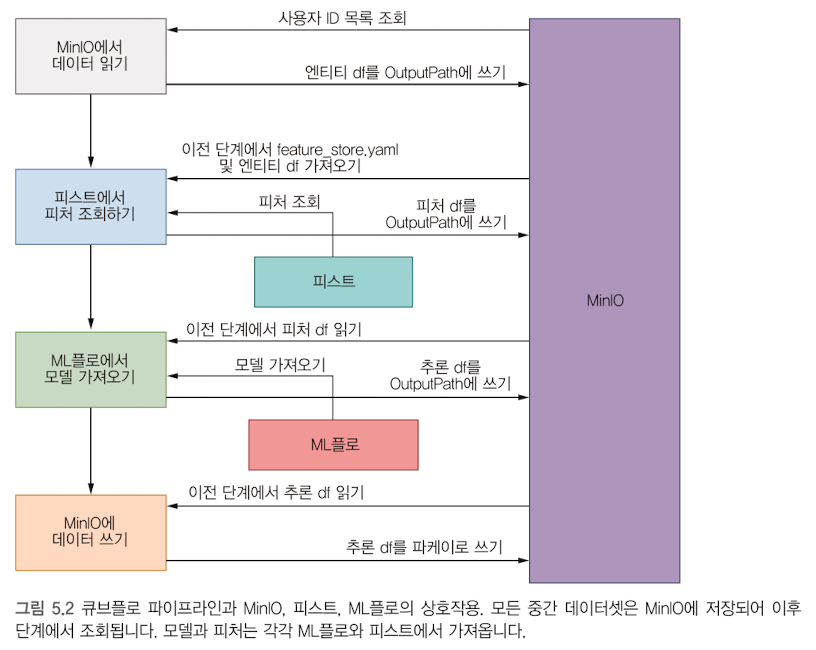
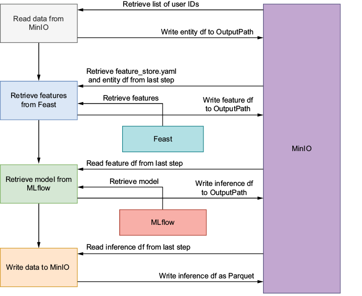
그림 5.2 상세 해설 (한글판 ch5_img005 및 영문 원본 ch5_img006)
- 다이어그램 구성:
- 좌측 세로 파이프라인: 4개의 핵심 컴포넌트(
MinIO에서 데이터 읽기→피스트에서 피처 조회하기→ML플로에서 모델 가져오기→MinIO에 데이터 쓰기)가 순차적인 실행 흐름(DAG)을 형성하고 있습니다. - 중앙 외부 서비스: 온라인/오프라인 피처를 제공하는
피스트(Feast)와, 학습된 모델 버전 및 아티팩트를 관리하는ML플로(MLflow)가 배치되어 있습니다. - 우측 대형 보라색 블록: 중간 아티팩트와 최종 결과물을 모두 보관하는 중앙 객체 스토리지인
MinIO가 위치합니다.
- 좌측 세로 파이프라인: 4개의 핵심 컴포넌트(
- 핵심 아키텍처 원리 — 분리된 아티팩트 흐름 (Decoupled Artifact Flow):
- 컴포넌트들은 네트워크 소켓이나 파드 간 공유 메모리로 커다란 판다스 데이터프레임을 직접 주고받지 않습니다.
- 대신, 각 컴포넌트는 자신의 로컬
OutputPath에 Parquet 파일을 기록하고, KFP 오케스트레이터가 이를 MinIO 아티팩트 버킷에 안전하게 업로드합니다. 후속 컴포넌트는 KFP가 준비해 준InputPath를 통해 해당 파일을 다운로드받아 처리합니다. - 화살표 라벨을 보면 각 단계마다 MinIO와 '사용자 ID 목록 조회', '엔티티 df를 OutputPath에 쓰기', '피처 df를 OutputPath에 쓰기', '추론 df를 OutputPath에 쓰기', '추론 df를 파케이로 쓰기' 작업을 주고받는 것을 볼 수 있습니다.
- 영문 캡션과 한글 표기의 기술적 해석:
- 영문 원서의 캡션(ch5_img006)에는 "The model and features are retrieved from MinIO and Feast, respectively"라고 기술되어 있어 모델을 MinIO에서 가져오는 것처럼 보이지만, 한글판(ch5_img005)과 실제 코드(Listing 5.7)에서는 모델 검색과 메타데이터 조회를 분명하게 MLflow를 통해 수행합니다.
- 이는 MLflow Tracking Server의 실제 아티팩트 저장소(Artifact Store) 백엔드가 MinIO로 구성되어 있기 때문이며, 엔지니어링 관점에서는 "모델 메타데이터와 버전 조회는 MLflow를 통하고, 실제 바이너리 다운로드는 MLflow가 MinIO에서 중계하거나 직접 내려받는다"고 이해하는 것이 가장 정확합니다.
프로덕션 컴포넌트 설계 4대 원칙과 3대 핵심 이점
프로덕션 컴포넌트 설계 4대 원칙과 3대 핵심 이점
이로써 기본 소득 분류 배치 추론 파이프라인에 필요한 4가지 핵심 컴포넌트(read_data, retrieve_features, run_inference, write_data)의 구현과 명세 정의가 모두 완료되었습니다.
이 컴포넌트들은 특정 일회성 작업에 얽매이지 않고 여러 머신러닝 파이프라인에서 범용적으로 활용할 수 있을 만큼 일반화(Generalization)되어 있습니다. 이를 통해 팀과 조직 전반에 걸쳐 머신러닝 워크플로를 표준화할 수 있습니다.
성공적인 프로덕션 MLOps 파이프라인을 구축하기 위해 염두에 두어야 할 컴포넌트 설계 4대 원칙과 이를 통해 얻게 되는 3대 핵심 이점을 정리합니다.
1. 컴포넌트 설계 4대 모범 원칙
| 설계 원칙 | 핵심 개념 | 본 실습 파이프라인 적용 사례 | 실무 권장 사항 |
|---|---|---|---|
| 모듈성 (Modularity) |
단일 책임 원칙 (Single Responsibility Principle)을 준수합니다. 하나의 컴포넌트는 오직 하나의 명확한 비즈니스 책임만 완수해야 합니다. | 추론 연산(run_inference)과 영구 저장(write_data)을 별도 컴포넌트로 완전히 분리했습니다. |
저장소 백엔드가 MinIO에서 S3, GCS, BigQuery로 바뀌어도 추론 컴포넌트 코드는 한 줄도 수정할 필요가 없습니다. |
| 컴포넌트 입출력 명시 (Inputs & Outputs) |
컴포넌트가 필요로 하는 모든 입력 데이터와 생성하는 모든 산출 아티팩트를 타입과 함께 투명하게 선언합니다. | 각 컴포넌트의 component.yaml 파일에 inputs와 outputs의 타입(Dataset, Artifact, String)을 엄격히 명시했습니다. |
KFP 엔진이 데이터 흐름의 의존성을 자동으로 파악하여 DAG를 구성하고, 아티팩트의 계보(Lineage)를 추적할 수 있게 합니다. |
| 파라미터화 (Parameterization) |
코드 내부에 IP 주소, 버킷 이름, 모델 버전 등의 설정값을 하드코딩하지 않고 외부 파라미터로 주입받도록 설계합니다. | mlflow_host, bucket_name, minio_host, model_stage 등을 파라미터로 분리하여 런타임에 동적으로 주입받습니다. |
동일한 도커 컨테이너 이미지를 로컬(kind), 개발(Dev), 스테이징, 상용(Prod) 클러스터 어디서든 코드 재빌드 없이 즉시 재사용할 수 있습니다. |
| 문서화 (Documentation) |
컴포넌트의 기능, 입출력 스키마, 전제조건(필요 권한/네트워크), 장애 대응 절차를 명확히 기록합니다. | component.yaml의 description 필드와 아키텍처 다이어그램(그림 5.2)을 통해 팀 전체가 상호작용 흐름을 한눈에 파악합니다. |
다른 엔지니어나 데이터 과학자가 코드를 뜯어보지 않고도 컴포넌트의 인터페이스만 보고 즉시 파이프라인에 조립할 수 있습니다. |
컴포넌트는 규격이 정해진 레고 블록입니다.
블록 위에 돌기(입력)와 홈(출력)의 크기가 정확히 적혀 있고(입출력 명시), 접착제로 붙어 있지 않으며(단일 책임), 설명서(문서화)가 들어 있어 우주선을 만들든 자동차를 만들든 자유롭게 바꿔 끼울 수 있습니다.
2. 잘 설계된 컴포넌트가 제공하는 3대 핵심 이점
-
재사용성 (Reusability):
- 컴포넌트는 한 번 정의해 컨테이너 레지스트리에 배포해 두면 다양한 파이프라인에서 레고 블록처럼 반복 재사용할 수 있습니다.
- 예를 들어, 이번 실습에서 만든
read_data와write_data컴포넌트는 소득 분류기뿐만 아니라 '이탈 예측 파이프라인', '이상 거래 탐지 파이프라인'에서도 파라미터(버킷명, 파일명)만 바꾸어 그대로 활용할 수 있습니다. - 그만큼 코드와 작업의 중복이 줄어 개발 생산성이 높아집니다.
-
협업 (Collaboration):
- 컴포넌트 단위의 개발은 데이터 과학자(Data Scientist), 머신러닝 엔지니어(MLE), 데이터 엔지니어(DE) 간의 협업 장벽을 낮춥니다.
- 피처 엔지니어링 전문가는
retrieve_features를 전담하고, 모델링 전문가는run_inference에 집중하며, 인프라 전문가는 파이프라인 배포 및write_data최적화를 맡아 병렬 개발(Parallel Development)을 수행할 수 있습니다. - 각 팀원은 사전에 합의된
component.yaml인터페이스 계약에 맞춰 독립적으로 작업할 수 있습니다.
-
테스트 용이성 (Testing):
- 컴포넌트가 컨테이너 단위로 독립 격리되어 있어, 전체 파이프라인을 쿠버네티스 클러스터에서 처음부터 끝까지 무겁게 실행하지 않고도 개별 컴포넌트만 로컬(
docker run)에서 단위 테스트할 수 있습니다. - 파이프라인 실행 중 오류가 발생했을 때도, 수많은 복합 요인 중 특정 컴포넌트의 로그와 입출력 아티팩트만 집중 조사하면 되므로 원인을 추적하고 고치는 디버깅이 훨씬 간단해집니다.
- 컴포넌트가 컨테이너 단위로 독립 격리되어 있어, 전체 파이프라인을 쿠버네티스 클러스터에서 처음부터 끝까지 무겁게 실행하지 않고도 개별 컴포넌트만 로컬(
3. 4대 컴포넌트 종합 파이프라인 흐름도
지금까지 구축한 4대 컴포넌트가 어떻게 유기적으로 연결되어 전체 배치 추론 워크플로를 완성하는지 보여주는 흐름도입니다.
flowchart LR
subgraph S1["1단계: read_data"]
C1["MinIO에서<br/>엔티티 데이터 읽기"]
A1[("사용자 ID 목록<br/>(entity_df)")]
C1 --> A1
end
subgraph S2["2단계: retrieve_features"]
C2["Feast에서<br/>피처 조회"]
A2[("피처 결합 데이터<br/>(feature_df)")]
C2 --> A2
end
subgraph S3["3단계: run_inference"]
C3["MLflow 모델 로드 &<br/>배치 추론 실행"]
A3[("예측 확률 데이터<br/>(prediction_df)")]
C3 --> A3
end
subgraph S4["4단계: write_data"]
C4["MinIO 영구 버킷에<br/>최종 결과 쓰기"]
Dest[("MinIO 최종 저장<br/>predictions.parquet")]
C4 --> Dest
end
A1 -->|"inputPath"| C2
A2 -->|"inputPath"| C3
A3 -->|"inputPath"| C4
style S1 fill:#e3f2fd,stroke:#1565c0,stroke-width:1px
style S2 fill:#e8f5e9,stroke:#2e7d32,stroke-width:1px
style S3 fill:#fff3e0,stroke:#e65100,stroke-width:1px
style S4 fill:#f3e5f5,stroke:#6a1b9a,stroke-width:1px다음 절에서는 지금까지 구성한 모든 컴포넌트를 결합하여 하나의 통합된 큐브플로 파이프라인(Kubeflow Pipeline DAG)으로 완성하고 클러스터에 배포해 실행해 보겠습니다.
컨테이너 컴포넌트의 장점과 비용
분리의 이점과 경계의 비용을 함께 봅니다
컴포넌트를 독립적으로 설계하는 원칙은 변경과 실패의 영향을 좁히는 데 도움이 됩니다. 컨테이너는 코드와 필요한 라이브러리를 실행 환경으로 묶는 단위입니다. 피처 조회와 모델 추론이 서로 다른 라이브러리 버전을 요구한다면 각 환경을 분리할 수 있습니다. 그러나 경계를 늘릴수록 기동·전송·관리 비용도 늘어날 수 있으므로 컴포넌트 수만 늘리는 것이 목표는 아닙니다.
컨테이너로 나누어도 노드의 커널, 자원, 네트워크, 저장소 같은 기반은 공유합니다. 한 태스크의 의존성을 다른 태스크와 분리하는 것과 모든 장애 영향을 차단하는 것은 다른 문제입니다. 이미지가 같아도 입력·권한·외부 서비스·하드웨어 조건이 바뀌면 결과나 실행 가능성이 달라질 수 있습니다.
준비 시간이 연산보다 길 수 있습니다
다음은 가상의 예시입니다. 600MB 이미지를 준비하는 데 20초, 컨테이너 기동에 5초, 실제 연산에 3초가 걸린다면 전체는 28초이며 준비는 25초입니다. 이 수치는 제품 성능이나 태스크 기동의 최소 시간이 아닙니다. 이미지 캐시·네트워크·노드 부하·실행 구성에 따라 실제 시간은 달라집니다.
같은 가정에서 1초짜리 작업 10개를 각각 순차 태스크로 나누고 기동 비용이 매번 5초라면, 계산 10초에 기동 50초가 더해져 60초입니다. 한 태스크 내부에서 연속 처리하면 단순 계산상 기동 5초와 연산 10초로 15초입니다. 다만 합친 태스크가 실패하면 다시 처리할 범위가 커집니다. 시간만 아니라 재사용과 실패 복구 단위를 함께 비교해야 합니다.
| 경계를 정할 기준 | 분리할 때의 이점 | 함께 평가할 비용 |
|---|---|---|
| 의존성·하드웨어 | 단계마다 필요한 환경과 자원을 정합니다 | 이미지와 자원 설정이 늘어납니다 |
| 실패 복구 | 다시 처리할 범위를 좁힙니다 | 단계별 기동과 결과 보관이 필요합니다 |
| 팀 책임·재사용 | 입력·출력 계약으로 교체하기 쉽습니다 | 계약 변경과 호환성 관리가 필요합니다 |
| 파일 전달 | 중간 산출물을 재사용할 수 있습니다 | 저장소 읽기·쓰기와 전송 비용이 생깁니다 |
파일 아티팩트의 전달 비용과 작은 파라미터 전달을 같은 방식으로 계산하지 않습니다. 모든 데이터가 MinIO 파일로 전달된다는 가정도 실행 환경과 전달 종류를 놓칩니다. 실제로 어떤 자료가 파일로 저장되고 언제 읽히는지를 기준으로 경계 비용을 봅니다.
작성 방식과 실행 환경을 구분합니다
경량 Python 컴포넌트도 실행 시에는 컨테이너를 사용합니다. 함수와 타입 힌트로 작성할 수 있어 사전 이미지 제작 부담을 줄이는 방식이며, 컨테이너 실행이 없어지는 것은 아닙니다. 런타임에 패키지를 준비하는 설계는 네트워크·패키지 저장소·버전 변화의 영향을 받을 수 있습니다. 사전 빌드 패키징은 이런 변동을 줄이는 대신 이미지 업데이트와 취약점 관리 책임을 늘립니다.
GPU 사용도 장치 개수만으로 특정 하드웨어가 선택되는 것은 아닙니다. KFP의 가속기 설정은 set_accelerator_type과 set_accelerator_limit 같은 API 및 실제 노드 자원과 연결해 해석합니다. CPU 아키텍처와 모델 직렬화 라이브러리의 호환성도 고려 대상입니다. 분리와 통합의 선택은 이러한 환경 조건, 변경 빈도와 운영 부담을 함께 보는 설계 결정입니다.
참고 문서 KFP Lightweight Python Components — https://www.kubeflow.org/docs/components/pipelines/user-guides/components/lightweight-python-components/ ; Kubernetes Images — https://kubernetes.io/docs/concepts/containers/images/ ; KFP DSL — https://kubeflow-pipelines.readthedocs.io/en/stable/source/dsl.html
DAG의 의존 관계와 소득 분류기 파이프라인
이제 앞에서 만든 컴포넌트 4개(데이터 읽기 → 피처 조회 → 추론 → 쓰기)를 한 줄로 이어 붙여 하나의 "파이프라인" 으로 만들 차례입니다. 컴포넌트가 "요리 재료 손질 하나, 볶기 하나" 같은 개별 작업이라면, 파이프라인은 그 작업들의 순서와 의존 관계를 적은 레시피입니다.
본문 내용
- kubeflow 파이프라인은 전체 머신러닝 워크플로를 기술합니다.
- 컴포넌트는 방향성 비순환 그래프 directed acyclic graph (DAG)로 표현됩니다.
- DAG는 방향이 있는 에지를 가지므로 하나의 노드에서 다른 노드로 이어지며, 순환이 없어 그래프 내에 닫힌 루프가 존재하지 않습니다.
- 필요에 따라 작업 실행 순서를 지정하고 작업 간 의존관계를 설정할 수 있는데, 즉 특정 작업은 의존하는 작업이 모두 완료된 후에야 실행됩니다.
풀어 쓰기: DAG가 뭔가요?
DAG(Directed Acyclic Graph)는 세 단어로 나눠 읽으면 쉽습니다.
| 단어 | 뜻 | 이 파이프라인에서는 |
|---|---|---|
| Graph(그래프) | 점(노드)과 선(에지)으로 된 그림 | 점 = 작업(태스크), 선 = "이 작업이 끝나야 저 작업 시작" |
| Directed(방향성) | 선에 화살표가 있다 | 읽기 → 피처 조회 처럼 한쪽 방향으로만 흐른다 |
| Acyclic(비순환) | 화살표를 따라가다 출발점으로 되돌아오는 고리가 없다 | 추론이 다시 읽기를 부르는 일이 없다 |
아래 왼쪽은 DAG로 가능한 모양(갈라졌다가 다시 합쳐져도 괜찮음), 오른쪽은 고리가 생겨 DAG가 될 수 없는 모양입니다.
flowchart LR
subgraph OK["DAG 가능"]
direction LR
a1["재료 손질"] --> a2["볶기"]
a1 --> a3["국 끓이기"]
a2 --> a4["상차림"]
a3 --> a4
end
subgraph NG["순환이라 불가"]
direction LR
b1["작업 A"] --> b2["작업 B"]
b2 --> b3["작업 C"]
b3 --> b1
end이 장의 파이프라인은 어떤 DAG인가
컴포넌트 4개가 일직선으로 연결된 가장 단순한 DAG입니다. 각 화살표는 "앞 작업이 만든 data_output 파일을 뒤 작업이 입력으로 쓴다"는 뜻입니다.
flowchart LR
I1["MinIO 입력 버킷 entity_df.parquet"] --> T1
subgraph PIPE["income classifier pipeline"]
direction LR
T1["fetch_data_task 데이터 읽기"] -->|"data_output"| T2["retrieve_features_task 피처 조회"]
T2 -->|"data_output"| T3["run_inference_task 추론"]
T3 -->|"data_output"| T4["write_data_task 쓰기"]
end
F["Feast 레지스트리와 원천 데이터"] --> T2
M["MLflow 모델 레지스트리"] --> T3
T4 --> O["MinIO inference-datasets 결과 parquet"]파이프라인 정의 파일 이름 (바로잡기)
책은 파이프라인을 정의하는 파이썬 파일 이름을 income-classifier-pipeline.py 라고 적고, 그 링크는 income_classifier_pipeline.yaml 을 가리킵니다. 두 이름이 서로 다릅니다.
| 본문 | 정정 | |
|---|---|---|
| 파이프라인 정의(파이썬) 파일 | income-classifier-pipeline.py |
저장소의 실제 파일은 inference_pipeline.py |
| 컴파일 산출물(YAML) | (링크만 income_classifier_pipeline.yaml) |
income_classifier_pipeline.yaml (UI에 업로드하는 파일) |
| 본문 링크 | income-classifier-pipeline.py | 링크 주소가 가리키는 것은 .py 가 아니라 컴파일된 .yaml |
⚠ 바로잡기: 저장소의 파이프라인 정의 파일은inference_pipeline.py이고 컴파일 산출물은income_classifier_pipeline.yaml입니다.income-classifier-pipeline은 파일명이 아니라@dsl.pipeline(name=...)의 파이프라인 이름입니다.
컴포넌트 변수 이름 정리
본문 문단에는 fetch-dta_op, restrieve_features_op 같은 오탈자가 섞여 있습니다. 코드(리스팅 5.11)에 나오는 실제 이름은 다음 네 개입니다.
| 컴포넌트 | 컴포넌트 객체 변수 | 뒤에서 만드는 작업(task) 변수 |
|---|---|---|
| 데이터 읽기 | fetch_data_op |
fetch_data_task |
| 피처 조회 | retrieve_features_op |
retrieve_features_task |
| 추론 | run_inference_op |
run_inference_task |
| 쓰기 | write_data_op |
write_data_task |
이 파이프라인은 모델을 새로 학습하지 않습니다. 4장에서 MLflow에 등록해 둔 모델과 Feast에 등록한 피처로 배치 추론(한꺼번에 많은 행을 예측)만 합니다.
DAG는 전체 실행의 단일 순서가 아니라 의존 관계에 따른 부분 순서를 표현합니다. 재료 손질 이후 볶기와 국 끓이기는 서로 의존하지 않으므로 자원이 허용하면 병렬 실행할 수 있습니다. 이 그래프에는 여러 위상 정렬 순서가 가능하며, 상차림은 두 작업이 끝난 뒤 시작합니다. DAG의 비순환성은 작업 내부의 반복문이나 자원 대기로 인한 교착 상태까지 방지한다는 뜻은 아닙니다.
DAG와 의존성, 임계 경로
실행 순서보다 병렬 여지를 읽습니다
DAG의 방향과 비순환성을 이해했다면, 다음에는 어떤 작업이 동시에 실행될 수 있는지 봅니다. 위상 정렬은 모든 의존 관계에서 선행 작업이 먼저 나오도록 나열하는 순서입니다. 독립 작업의 상대적 순서는 여러 가지가 가능하므로, DAG가 하나의 결정론적 전체 실행 순서를 정하는 것은 아닙니다.
KFP에서는 다음 태스크의 입력에 앞 태스크의 출력을 연결하면 데이터 의존 관계가 생깁니다. 출력 전달 없이 순서만 필요할 때에는 명시적인 after 의존 관계도 사용할 수 있습니다. 이런 관계는 태스크 사이의 제약을 설명하며, 태스크 내부의 무한 반복이나 자원 대기까지 없애는 규칙은 아닙니다.
가장 긴 경로를 계산합니다
다음은 가상의 예시입니다. 데이터 읽기 1분, 피처 조회 3분 뒤에 품질 점검 2분과 추론 4분이 서로 독립적으로 실행되고, 두 작업이 끝나면 결과 쓰기 1분이 진행된다고 합니다. 이 그림은 개념 예시이며 책의 네 단계 코드에 별도의 품질 점검 태스크가 구현되어 있다는 뜻은 아닙니다.
flowchart LR R["데이터 읽기 1분"] --> F["피처 조회 3분"] F --> Q["품질 점검 2분"] F --> I["추론 4분"] Q --> W["결과 쓰기 1분"] I --> W
자원이 충분하고 기동·전송 비용을 생략하면, 모두 순차 실행할 때는 1+3+2+4+1 = 11분입니다. 품질 점검과 추론을 병렬로 실행하면 둘 중 긴 4분이 합류 시점을 정하므로 1+3+4+1 = 9분입니다. 이 의존 관계에서 가장 오래 걸리는 연결 경로를 임계 경로라고 합니다. 임계 경로는 다른 작업을 병렬화해도 기다려야 하는 시간의 기준입니다.
빠르게 할 태스크를 고릅니다
| 변경 | 병렬 구간의 시간 | 전체 시간 |
|---|---|---|
| 점검 2분, 추론 4분 | 긴 쪽인 4분 | 9분 |
| 점검을 1분으로 줄임 | 추론이 여전히 4분 | 9분 |
| 추론을 2분으로 줄임 | 두 작업이 각각 2분 | 7분 |
| 추론을 1분으로 더 줄임 | 점검이 2분 | 7분 |
처음에는 추론을 줄이는 것이 유효하지만, 추론이 짧아지면 점검이 새로운 제약이 됩니다. 임계 경로는 한 번 정한 고정 목록이 아니라 태스크 시간과 의존 관계의 변화에 따라 다시 계산할 대상입니다. 전체 시간에서 계산·기동·전송의 비중을 구분하면 최적화할 경계도 달라질 수 있습니다.
위상 정렬에는 “읽기, 조회, 점검, 추론, 쓰기”와 “읽기, 조회, 추론, 점검, 쓰기”가 모두 가능합니다. 이 나열은 의존 관계를 만족한다는 뜻이며, 실제로 두 독립 작업을 하나씩 순차 실행해야 한다는 뜻은 아닙니다. 실행기는 사용 가능한 자원과 동시성 조건에 따라 작업을 배치합니다.
자원 제약을 더하면 계산이 달라집니다
병렬 가능성과 실제 동시 실행은 구분합니다. 점검과 추론이 같은 부족한 GPU나 메모리 자원을 요구하면 하나가 대기할 수 있습니다. 두 작업이 저장소를 동시에 읽어 전송 시간이 늘어날 수도 있습니다. 따라서 9분은 제시한 가정의 계산이지 실행 시간 약속은 아닙니다. 의존 관계의 가장 긴 경로를 먼저 찾고, 실제 자원 대기와 단계 비용을 더해 시간을 해석하는 것이 적절합니다.
참고 문서 KFP DSL — https://kubeflow-pipelines.readthedocs.io/en/stable/source/dsl.html ; Argo Workflows DAG ; Introduction to Algorithms의 Topological Sort
리스팅 5.11 (1) 컴포넌트 불러오기: load_component_from_file
본문 내용
- kubeflow 파이프라인도 컴포넌트와 마찬가지로 파이썬 파일로 정의합니다.
- 먼저 kfp 에서 제공하는
load_component_from_file함수(리스팅 5.11 참고)를 사용해 모든 컴포넌트를 정의합니다. - 이 함수는 컴포넌트 객체를 생성하며, 컴포넌트 파일의 경로를 인수로 받습니다.
- 이로써
fetch_data_op,retrieve_features_op,run_inference_op,write_data_op라는 네 가지 컴포넌트가 생성됩니다.
# Listing 5.11 Income classifier Kubeflow pipeline
import kfp
from kfp import dsl, compiler
fetch_data_op = kfp.components.load_component_from_file(
"components/read_data/component.yaml"
)
retrieve_features_op = kfp.components.load_component_from_file(
"components/retrieve_features/component.yaml"
)
run_inference_op = kfp.components.load_component_from_file(
"components/run_inference/component.yaml"
)
write_data_op = kfp.components.load_component_from_file(
"components/write_data/component.yaml"
)
풀어 쓰기
component.yaml은 앞 절에서 만든 컴포넌트의 설계도입니다(이름, 입력, 출력, 컨테이너 이미지, 실행 명령이 적혀 있음). 이 설계도 파일은 아직 "실행할 수 있는 함수"가 아닙니다.load_component_from_file("…/component.yaml")은 이 설계도를 읽어서 파이썬에서 함수처럼 호출할 수 있는 객체로 바꿔 줍니다. 그래서 변수 이름 끝에_op(operation) 를 붙여fetch_data_op(...)처럼 부를 수 있습니다.- 경로(
components/read_data/component.yaml등)는 이 코드를 실행하는 위치 기준의 상대 경로입니다. 그래서 저장소 최상위 폴더에서 실행하는 것을 전제로 합니다. - 첫 줄 주석
# Listing 5.11 …은 책의 리스팅 번호 표시입니다.
component.yaml)를 "조립 로봇에게 시킬 수 있는 버튼"으로 바꾸는 단계입니다. 버튼(fetch_data_op)을 누를 때 어떤 재료(입력값)를 넣을지는 바로 다음 단계에서 정합니다.파일 이름·경로를 정리하면
| 컴포넌트 | 설계도 경로(리스팅 5.11) | 만들어지는 객체 |
|---|---|---|
| 데이터 읽기 | components/read_data/component.yaml |
fetch_data_op |
| 피처 조회 | components/retrieve_features/component.yaml |
retrieve_features_op |
| 추론 | components/run_inference/component.yaml |
run_inference_op |
| 쓰기 | components/write_data/component.yaml |
write_data_op |
참고로 이 방식(kfp.components.load_component_from_file으로component.yaml을 읽는 방법)은 KFP v1 시절의 컴포넌트 정의 형식입니다. KFP v2 SDK 도 하위 호환으로 이 형식을 읽을 수 있고, 새로 만들 때는 v2 방식(@dsl.container_component등)을 권장한다고 알려져 있습니다. 다만 이 내용은 책에 없는 덧붙임이므로 KFP 공식 마이그레이션 문서에서 한 번 더 확인하세요.
리스팅 5.11 (2) 파이프라인 함수 정의: @dsl.pipeline과 파라미터 14개
본문 내용
- 컴포넌트를 정의한 후에는
income_classifier_pipeline이라는 파이프라인 함수를 정의합니다. - 이 함수의 파라미터는 런타임 중에 값을 변경할 수 있는 파이프라인 파라미터입니다.
- 함수를 파이프라인 정의로 표시하기 위해
@dsl.pipeline애노테이션을 추가합니다.
@dsl.pipeline(
name="income-classifier-pipeline",
description=(
"A Kubeflow pipeline to classify income categories "
"using KFP v2"
),
)
def income_classifier_pipeline(
minio_host: str,
access_key: str,
secret_key: str,
entity_df_bucket: str,
entity_df_filename: str,
feature_store_bucket_name: str,
feature_store_config_file_name: str,
feature_list: str,
model_name: str,
model_type: str,
model_stage: str,
mlflow_host: str,
output_bucket: str,
output_file_name: str,
):
풀어 쓰기
@dsl.pipeline(...)은 데코레이터(함수 위에 붙이는 표시)입니다. "아래 함수는 보통 파이썬 함수가 아니라 파이프라인 정의다"라고 KFP에 알려 줍니다.name은 KFP UI에 보이는 파이프라인 이름,description은 설명입니다.- 함수의 인자 14개가 파이프라인 파라미터입니다. 코드를 고치지 않고 실행(run)을 만들 때 UI 입력칸에서 값을 바꿀 수 있는 항목입니다. 모두
str(문자열) 타입이라 UI에도… - string입력칸으로 나옵니다(그림 5.7 참고). - 본문처럼 파라미터에 기본값을 줄 수도 있습니다(예:
model_stage: str = "Production"). 기본값을 주면 UI 입력칸에 미리 채워져 나옵니다. 위 코드는 기본값 없이 전부 실행 때 입력받는 형태입니다.
파라미터 14개가 무엇인지
아래 "값 형태"는 파라미터가 어떤 모양의 값을 받는지 보여 주는 가상의 예입니다. 실제로 넣는 값은 파이프라인을 돌리는 환경마다 다릅니다.
| 파라미터 | 무엇을 정하나 | 값 형태(가상 예) |
|---|---|---|
minio_host |
MinIO(파일 저장소) 주소 | <서비스이름>.<네임스페이스>:9000 꼴의 클러스터 안 주소 |
access_key / secret_key |
MinIO 접속용 아이디/비밀번호 | 비밀값 — 실행 이력에 남는 점은 5.2절의 보안 설명 참고 |
entity_df_bucket |
예측할 대상(사용자 ID 목록)이 들어 있는 버킷 | 입력 데이터용 버킷 이름 |
entity_df_filename |
그 대상 목록 파일 | entity_df.parquet 꼴의 Parquet 파일 이름 |
feature_store_bucket_name |
Feast 설정 파일이 있는 버킷 | 피처 레지스트리용 버킷 이름 |
feature_store_config_file_name |
Feast 설정 파일 이름 | feature_store.yaml |
feature_list |
조회할 피처 목록(쉼표로 구분) | demographic:Sex,demographic:Race,… 처럼 뷰이름:피처이름 을 이은 문자열 |
model_name |
MLflow에 등록된 모델 이름 | random-forest-classifier 꼴의 등록 모델 이름 |
model_type |
모델이 만들어진 프레임워크 | sklearn, xgboost, tensorflow 중 하나 |
model_stage |
쓸 모델의 단계(stage) | Production 같은 단계 이름 |
mlflow_host |
MLflow 서버 주소 | http://<MLflow 서버 주소>:5000 꼴 |
output_bucket |
결과를 저장할 버킷 | 결과용 버킷 이름 |
output_file_name |
결과 파일 이름 | .parquet 로 끝나는 파일 이름 |
이 파라미터 값은 환경마다 달라지는 것이 정상입니다. 같은 파이프라인이라도 어떤 환경에서는 minio_host 에 서비스.네임스페이스.svc.cluster.local:9000 꼴의 전체 주소를 쓰고 다른 환경에서는 짧은 서비스.네임스페이스:9000 을 쓸 수 있습니다. 어느 쪽이 맞는 것이 아니라 파이프라인의 Pod 가 접근할 수 있는 주소이기만 하면 됩니다.
⚠ 바로잡기(주의):model_stage파라미터의 "stage"(Staging/Production) 방식은 MLflow 에서 이전부터 deprecated(앞으로 없앨 예정) 로 안내되어 왔고(2.9.0 무렵부터로 알려짐, MLflow 공식 문서 재확인 필요), 대신 alias(별칭) 를 쓰도록 권장됩니다. 다만 "3.0.0 에서 deprecated 되었다"는 표현은 부정확합니다. stage 를 전환하는 API 자체는 3.0.0 에도 남아 있는 것으로 알려져 있습니다. 이 책의 코드는 stage 방식(models:/<이름>/<stage>)을 그대로 씁니다.
⚠ 바로잡기(주의):model_name을random-forest-classifier(RandomForest) 로 쓰는 이유는 "AUC 가 제일 높아서"가 아니라 추론 코드가predict_proba를 쓰기 때문입니다. 책 표에서는 RandomForest 가 AUC 최고(0.8600)였지만, 다시 학습한 결과에서는 xgboost-logistic 이 0.8633 으로 가장 높았습니다. XGBoost 도XGBClassifier로 로깅했다면predict_proba를 쓸 수 있으나,mlflow.xgboost.load_model이 Booster 객체를 돌려주는 경우에는predict_proba가 없을 수 있습니다. TensorFlow 모델도predict_proba에 제약이 있습니다. 즉 "XGBoost 는 전부 불가능"은 과장입니다.
리스팅 5.11 (3) 작업 정의와 연결: task.outputs, inputValue·inputPath·outputPath
리스팅 5.11 (3) 작업 정의와 연결: task.outputs, inputValue·inputPath·outputPath
본문 내용
- 다음으로 미리 정의한 컴포넌트를 사용해 작업(task)을 정의합니다. 이는 컴포넌트의 입력 필드를 채우는 작업으로, 입력값은 파이프라인 파라미터에서 가져옵니다.
- 예를 들어 데이터 가져오기 컴포넌트는 MinIO 설정과 엔티티 DataFrame 위치를 필요로 하며, 이 모든 정보는 파이프라인 파라미터를 통해 전달됩니다.
- 4개의 컴포넌트는 각각
fetch_data_task,retrieve_features_task,run_inference_task,write_data_task라는 작업에 대응합니다. - 그렇다면 컴포넌트 간 연결은 어떻게 이루어질까요? 데이터 가져오기 컴포넌트의 출력이 피처 조회 컴포넌트의 입력으로 어떻게 전달될까요? kfp 패키지는 이를 간단하게 처리하는 방법을 제공합니다.
task.outputs를 사용해 작업의 출력을 가져온 후 입력으로 전달하면 됩니다. 예를 들어retrieve_features_task에는entity_df라는 입력이 있는데, 이는fetch_data_task의 출력, 즉 파이프라인에서fetch_data_task.outputs["data_output"]으로 지정된 값입니다.- 이렇게 설정하면 kubeflow 는
retrieve_features_task가fetch_data_task완료에 의존한다는 사실을 인식합니다. 마찬가지로run_inference_task는retrieve_features_task의 완료에 의존하며,input_data는retrieve_features_task의 출력입니다.
fetch_data_task = fetch_data_op(
minio_host=minio_host,
access_key=access_key,
secret_key=secret_key,
bucket_name=entity_df_bucket,
file_name=entity_df_filename,
)
retrieve_features_task = retrieve_features_op(
minio_host=minio_host,
access_key=access_key,
secret_key=secret_key,
bucket_name=feature_store_bucket_name,
file_name=feature_store_config_file_name,
entity_df=fetch_data_task.outputs[
"data_output"
],
feature_list=feature_list,
)
run_inference_task = run_inference_op(
minio_host=minio_host,
access_key=access_key,
secret_key=secret_key,
model_name=model_name,
model_type=model_type,
model_stage=model_stage,
mlflow_host=mlflow_host,
input_data=retrieve_features_task.outputs["data_output"],
)
write_data_task = write_data_op(
minio_host=minio_host,
access_key=access_key,
secret_key=secret_key,
bucket_name=output_bucket,
file_name=output_file_name,
input_data=run_inference_task.outputs["data_output"],
)
풀어 쓰기
두 가지 입력이 섞여 있습니다.
| 종류 | 예 | 값이 오는 곳 | component.yaml 에서의 표시 |
|---|---|---|---|
| 값(문자열) | minio_host=minio_host, bucket_name=entity_df_bucket |
파이프라인 파라미터(14개) | {inputValue: …} |
| 파일(데이터셋) | entity_df=fetch_data_task.outputs["data_output"] |
앞 작업이 만든 출력 파일 | 읽는 쪽 {inputPath: …}, 쓰는 쪽 {outputPath: …} |
핵심은 entity_df=fetch_data_task.outputs["data_output"] 한 줄입니다. 이 줄을 쓰는 순간 KFP 가 "retrieve_features_task 는 fetch_data_task 가 끝나야 시작" 이라는 순서를 스스로 알아챕니다. 별도로 "A 다음에 B"라고 적을 필요가 없습니다. 이 의존 관계가 모여 위에서 본 DAG 가 됩니다.
data_output 파일)을 뒤 주자의 손에 쥐여 주는 코드를 쓰면, "뒤 주자는 앞 주자가 들어온 뒤에 출발"이라는 규칙이 저절로 생깁니다. 문자열 값(minio_host 등)은 배턴이 아니라 출발 전에 모두에게 나눠 주는 쪽지입니다.컴포넌트 yaml 에서 inputValue / inputPath / outputPath 는 어떻게 쓰이나
피처 조회 컴포넌트(리스팅 5.6)의 command 일부는 이렇게 생겼습니다. 아래 위젯으로 세 가지 표시를 눌러 보며 구분해 보세요.
- --entity_df # entity_df 는 entity_df 인수의 inputPath 값으로 사용된다.
- {inputPath: entity_df}
- --feature_list
- {inputValue: feature_list}
- --data_output # data_output 은 data_output 인수의 outputPath 값으로 사용된다.
- {outputPath: data_output}
| 표시 | 전달되는 것 | 방향 |
|---|---|---|
inputValue | 값(문자열) | 들어옴 |
inputPath | 앞 작업 출력 파일의 경로 | 들어옴 |
outputPath | 결과를 쓸 파일 경로 | 나감 |
위 예시의
/tmp/…경로는 이해를 돕기 위한 예시 문자열일 뿐이고, 실제 경로는 KFP 가 실행 때 정해 줍니다(본문에는 구체 경로가 나오지 않음).
바로잡기: 입력은 Input[Dataset], 출력은 Output[Dataset]
추론 컴포넌트 설명(리스팅 5.8 근처) 본문에는 이런 문장이 있습니다.
"컴포넌트의 입력과 출력을 정의할 때 경로는 Output[Dataset] 타입이 됩니다. 즉 input_data 와 data_output 모두 Dataset 타입입니다."
⚠ 바로잡기: 입력 경로input_data에Output[Dataset]이라고 쓴 것은 오류입니다. 파이썬 타입 표기로는 입력은Input[Dataset], 출력은Output[Dataset]입니다.component.yaml에서는 둘 다type: Dataset이지만,command에서는 입력에{inputPath: input_data}, 출력에{outputPath: data_output}을 써서 구분합니다. 이 구간(파이프라인 연결)에서도 같은 구분이 그대로 적용됩니다.
| 파이썬 타입 표기 | component.yaml 의 type | command 에서 | |
|---|---|---|---|
| 입력 파일 | Input[Dataset] (본문 오기: Output[Dataset]) |
Dataset |
{inputPath: …} |
| 출력 파일 | Output[Dataset] |
Dataset |
{outputPath: …} |
추가로 알아 둘 점
fetch_data_task.outputs["data_output"]의"data_output"은 읽기 컴포넌트의component.yaml의outputs:에 적힌 출력 이름과 같아야 합니다. 이름이 다르면 컴파일 단계에서 오류가 납니다.- 쓰기 단계의 입력
input_data는run_inference_task.outputs["data_output"]으로 연결됩니다. 즉 추론 → 쓰기 도 같은 규칙입니다. - 세 개의
data_output은 각각 다른 작업이 만든 서로 다른 파일입니다(이름만 같음). 뒤의 그림 5.5 에서 폴더 모양 노드 3개로 보입니다.
KFP 컴파일 원리와 Compiler 호출 정정
본문 내용
- 파이프라인 파라미터 정의 시 기본값을 지정하는 것도 가능합니다.
- 파이프라인 함수가 완성되면 이를 YAML 파일로 컴파일해야 kubeflow 에 제공할 수 있습니다.
- kfp 패키지의 컴파일러를 사용하면 파이프라인 함수를
income_classifier_pipeline.yaml이라는 YAML 파일로 변환할 수 있습니다.
원본과 정정본 나란히
원본(그대로)
Compiler().compile(
income_classifier_pipeline,
"income_classifier_pipeline.yaml",
)
정정본
from kfp import compiler
compiler.Compiler().compile(
pipeline_func=income_classifier_pipeline,
package_path="income_classifier_pipeline.yaml",
)
⚠ 바로잡기: 본문 코드는Compiler().compile(...)만 있고Compiler를 어디서 가져오는지(import) 나와 있지 않습니다. 리스팅 5.11 맨 위에는from kfp import dsl, compiler가 이미 있으므로, 올바른 호출은compiler.Compiler().compile(...)입니다. (Compiler()라고만 쓰면NameError가 납니다.) 저장소(practical-mlops/chapter-5)의 코드도compiler.Compiler().compile(pipeline_func=…, package_path=…)형태로 알려져 있습니다.
풀어 쓰기
- 컴파일은 파이썬으로 쓴 파이프라인 함수를 KFP 가 읽는 YAML(실행 명세) 로 바꾸는 일입니다. 요리로 치면 "레시피 초안"을 "주방 표준 조리 지시서"로 정리하는 것입니다.
pipeline_func는 컴파일할 파이프라인 함수,package_path는 만들어질 YAML 파일 이름입니다. 위치 인자(본문)와 키워드 인자(정정본)는 같은 뜻입니다.- 서버에 등록되는 실행 명세는 컴파일된
income_classifier_pipeline.yaml이며, DSL 파이썬 소스와 역할이 다릅니다.
파일 이름이 헷갈릴 때
| 단계 | 파일 | 역할 |
|---|---|---|
| 작성 | inference_pipeline.py (저장소) |
파이프라인 함수 정의 + 컴파일 호출 |
| 컴파일 | income_classifier_pipeline.yaml |
UI 에 업로드하는 실행 명세 |
| UI 등록 | 이름 income-classifier (책 그림 5.4) |
입력칸에 쓰는 표시 이름. 파일 이름과 같을 필요 없음 |
SDK와 백엔드의 호환성
컴파일러는 SDK 버전에 따라 IR 스키마와 실행 명세를 생성합니다. 서버가 해당 필드와 기능을 지원해야 실행할 수 있으므로 SDK와 백엔드의 지원 범위를 함께 확인합니다. 컴파일 성공은 명세 생성 성공을 뜻하며, 서버 등록 성공이나 실제 실행 성공까지 보장하지는 않습니다. 파이프라인 소스·SDK 버전·백엔드 버전·컴파일된 명세를 함께 기록하면 호환성과 재현성을 추적할 수 있습니다.
본문 오탈자
Piepline은Pipeline입니다.
KFP v2 아키텍처: SDK에서 Pod까지 다섯 단계
컴파일 성공, 등록 성공, 실행 성공은 서로 다른 일이다
파이썬으로 쓴 파이프라인이 실제 Pod로 돌기까지는 여러 층을 지납니다. 각 층이 무엇을 책임지는지 구분해 두면, 어느 단계에서 문제가 났는지 짚기 쉽습니다.
flowchart LR A["Python SDK dsl 코드"] -->|"컴파일"| B["IR YAML PipelineSpec"] B -->|"업로드 후 실행 요청"| C["KFP API 서버"] C -->|"변환"| D["Argo Workflow"] D --> E["작업별 Pod"] E --> F["아티팩트는 객체 저장소 메타데이터는 MLMD"]
각 층의 역할
| 층 | 하는 일 |
|---|---|
| Python SDK | 컴포넌트와 파이프라인의 구조, 입출력 계약을 코드로 표현 |
| IR YAML | 컴파일 결과. PipelineSpec이라는 프로토콜 버퍼 메시지로, 특정 실행 엔진에 묶이지 않는 중간 표현 |
| KFP 백엔드 | 업로드된 IR을 받아 실행용 워크플로로 변환. 오픈소스 Kubernetes 백엔드는 이를 Argo Workflow로 변환 |
| Argo Workflows | 의존 관계에 따라 단계를 진행하고 컨테이너를 Pod로 실행 |
| Pod | 사용자 코드가 실제로 도는 곳 |
KFP v2는 컴포넌트와 파이프라인을 모두 같은 IR 형식으로 컴파일합니다. 책의 component.yaml은 v1 스타일 형식이고 v2 IR과는 다른 파일입니다. v2 SDK는 하위 호환으로 이 v1 형식을 읽어 들일 수 있는 것으로 알려져 있습니다.
한 작업 안에서 driver와 launcher가 나눠 하는 일
실행 기록의 Pod 이름에는 system-dag-driver, system-container-driver, system-container-impl이 나타납니다. 역할을 단순화하면 이렇습니다.
| 이름 | 하는 일 |
|---|---|
| driver | 실행 전에 입력 파라미터와 아티팩트를 해석하고, 캐시를 조회하고, 조건을 평가하고, 실행 설정을 만듦. 실행 메타데이터를 먼저 생성하기도 함 |
| launcher | 사용자 코드를 감싸 실행하면서 아티팩트 입출력을 처리하고, 실행 결과 메타데이터를 게시 |
즉 메타데이터 기록이 한쪽에만 있다고 단순화하면 정확하지 않고, driver는 실행 전 준비와 시작 기록을, launcher는 실행 중 입출력과 결과 게시를 맡는다고 이해하면 됩니다. 정확한 분담은 KFP 버전에 따라 다를 수 있어 공식 문서와 소스를 확인하세요.
또 컴포넌트 4개짜리 파이프라인이라고 해서 전체 Pod가 정확히 4개만 생기는 것은 아닙니다. driver, 캐시 적중, 중첩 DAG, 재시도에 따라 실제 Pod 수는 달라지며, 끝난 Pod가 얼마나 보존되는지도 정리 설정에 달려 있습니다.
숫자로 보는 확인 단계
가상의 예로 어떤 문제가 생겼다고 합시다. IR YAML 안에 컨테이너 이미지 참조 4개가 모두 들어 있는지는 컴파일 직후 파일만 열어 봐도 확인할 수 있습니다. 반면 그 이미지가 클러스터에서 실제로 내려받아지는지, 서비스 주소와 권한이 맞는지, 입력 파일 내용이 정상인지는 실행해야만 드러납니다. 그래서 "컴파일 성공"(구조가 맞다), "정의 등록 성공"(백엔드가 명세를 받았다), "실행 성공"(작업이 끝났다)은 서로 다른 확인 기준입니다. 마지막 단계에서도 초록 체크는 작업이 오류 없이 끝났다는 표시일 뿐 예측이 좋다는 증거는 아닙니다.
IR이 중립적이라는 말의 범위
IR은 특정 엔진에 묶이지 않도록 설계된 명세라서 여러 백엔드에 제출할 수 있게 하려는 의도가 있습니다. 다만 이는 모든 실행 환경에서 수정 없이 똑같이 동작한다는 보장은 아닙니다. Kubernetes 전용 설정, 인증, 스토리지, 호환 버전 같은 제약이 백엔드마다 다를 수 있습니다. SDK 버전과 백엔드 버전의 숫자도 서로 같은 종류의 번호가 아니므로, 숫자가 다르다는 사실만으로 실패나 성공을 단정하지 말고 지원하는 명세와 기능을 대조해야 합니다.
참고 문서
- Kubeflow Pipelines, IR YAML: https://www.kubeflow.org/docs/components/pipelines/concepts/ir-yaml/
- Kubeflow Pipelines, Migrate to v2: https://www.kubeflow.org/docs/components/pipelines/user-guides/migration
- Kubeflow Pipelines, Artifacts: https://www.kubeflow.org/docs/components/pipelines/user-guides/data-handling/artifacts/
KFP UI에 파이프라인 등록하기 (그림 5.3, 5.4)
본문 내용
- 컴파일된
income_classifier_pipeline.yaml파일은 KFP UI의 Pipelines 목록(그림 5.3)에 파이프라인 정의로 등록할 수 있습니다. - 등록할 때는 파이프라인 이름과 설명, 그리고 컴파일된 YAML 파일을 지정합니다(그림 5.4).
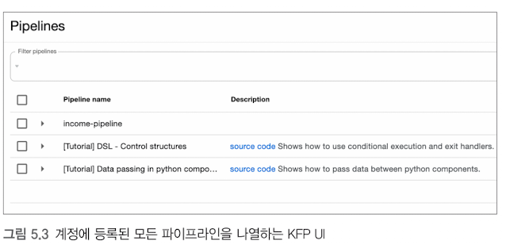
이미지 해설 (ch5_img007) — KFP UI 의 Pipelines 목록 화면입니다. 맨 위에 Filter pipelines 검색칸이 있고, 아래 표에 Pipeline name / Description 열이 있습니다. 보이는 항목은 income-pipeline, [Tutorial] DSL - Control structures("조건부 실행과 exit handler 사용법"), [Tutorial] Data passing in python components("파이썬 컴포넌트 간 데이터 전달 방법") 세 줄입니다. 초보자는 이렇게 이해하면 됩니다.
- 이 목록은 "등록된 파이프라인 정의의 목록" 입니다. "실행에 성공한 목록"이 아닙니다.
[Tutorial] …두 개는 KFP 가 기본으로 넣어 주는 예제처럼 보입니다. 나중에 제어 구조·데이터 전달 개념을 더 공부할 때 참고 자료로 쓸 수 있습니다.- 이 화면에는 목록과 필터만 보이며 업로드 버튼 위치는 나타나 있지 않습니다. 따라서 "이 그림에 업로드 버튼이 있다"고 읽지 마세요.
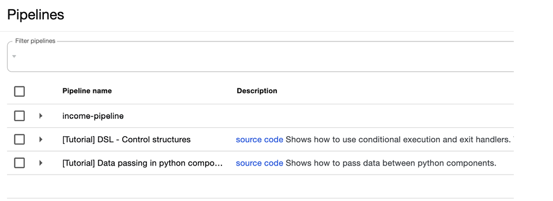
이미지 해설 (ch5_img008) — 위와 같은 Pipelines 목록 화면의 영어 캡션판(해상도가 더 높은 원본)입니다. 내용은 같고, 체크박스와 각 줄 왼쪽의 ▶ 화살표(펼치면 버전 목록이 나올 것으로 짐작되며, 이 화면에서는 펼쳐져 있지 않습니다)가 보입니다. 파이프라인 이름은 UI 에서 입력한 표시 이름이라 파이썬 파일 이름과 같을 필요가 없습니다.
본문 내용: 등록 폼의 구성
- 등록 폼에서는 파이프라인 이름과 파이프라인 설명을 포함한 세부 정보를 입력하고, 컴파일된
income_classifier_pipeline.yaml파일을 지정합니다(그림 5.4).
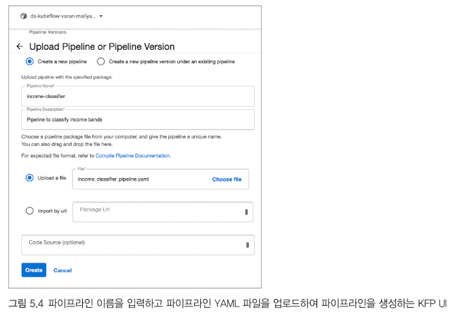
이미지 해설 (ch5_img009) — 제목이 Upload Pipeline or Pipeline Version 인 폼입니다. 위에서 아래로 이렇게 읽습니다.
| 영역 | 화면의 내용 | 뜻 |
|---|---|---|
| 맨 위 라디오 | Create a new pipeline(선택됨) / Create a new pipeline version under an existing pipeline |
새 파이프라인을 만들지, 이미 있는 파이프라인에 새 버전을 추가할지 |
| Pipeline Name* | income-classifier |
UI 에 표시될 이름(필수) |
| Pipeline Description* | Pipeline to classify income bands |
설명 |
| 파일 선택 | Upload a file(선택됨), 파일 income_classifier_pipeline.yaml, Choose file 버튼 |
컴파일한 YAML 업로드 |
| 대안 | Import by url + Package Url |
인터넷에 올려둔 YAML 주소로 가져오기 |
| 선택 항목 | Code Source (optional) |
소스 코드 위치 메모(선택) |
| 버튼 | Create(파란색) / Cancel |
등록 / 취소 |
- 화면 맨 위 네임스페이스 이름(
ds-kubeflow-varun-mallya…로 잘려 보임)은 책 저자의 계정 환경이며 다른 환경에서는 달라집니다. - 여기서 등록하는 것은 "실행 명세(YAML)" 일 뿐 아직 아무것도 실행되지 않습니다. 새 버전을 올리는 일과 run 을 만드는 일은 별개입니다.
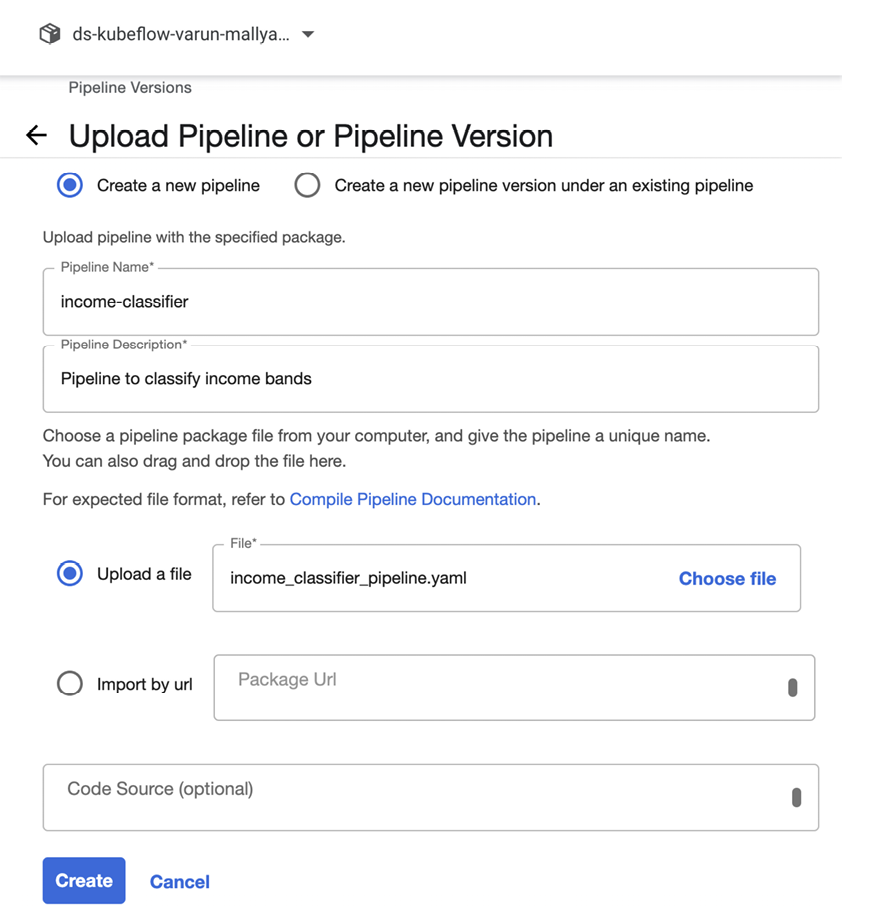
이미지 해설 (ch5_img010) — 위 폼을 확대한 원본입니다. 읽을 수 있는 내용은 009 와 같습니다(Upload a file 과 Import by url 은 둘 다 파이프라인 명세 YAML 을 가져오는 두 가지 경로입니다). 이 폼에 데이터 파일이나 컨테이너 이미지를 올리는 것이 아닙니다.
업로드 후 파이프라인 시각화 (그림 5.5)와 Pod 수명주기
업로드 후 파이프라인 시각화 (그림 5.5)와 Pod 수명주기
파이프라인 정의를 업로드하면 KFP UI에서 컴포넌트 간 연결 관계가 시각화된 DAG 그래프로 표시됩니다(그림 5.5). KFP에서 파이프라인 실행은 논리적 그룹인 실험(Experiment) 아래에서 개별 실행(Run) 단위로 관리 및 트리거됩니다.
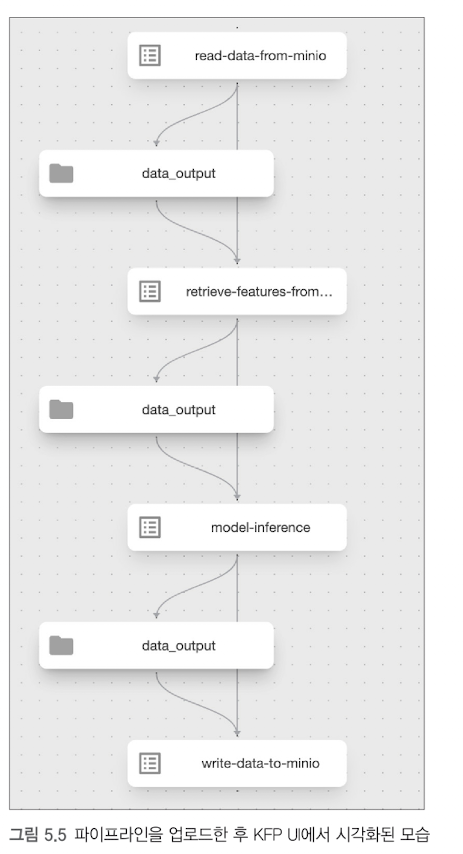
이미지 해설 (ch5_img011) — 위에서 아래로 한 줄로 이어진 그래프입니다. 두 종류의 상자가 번갈아 나옵니다.
| 모양 | 이름 | 뜻 |
|---|---|---|
| 목록 아이콘이 있는 상자 | read-data-from-minio, retrieve-features-from…, model-inference, write-data-to-minio |
작업(태스크) 4개 |
| 폴더 아이콘이 있는 상자 | data_output (3개) |
작업이 만든 산출물(아티팩트, 파일) 3개 |
- 읽는 법:
read-data-from-minio→data_output→retrieve-features-from…→data_output→model-inference→data_output→write-data-to-minio. 앞 작업의 출력 폴더가 뒤 작업의 입력이 되는 것이 코드의task.outputs[...]연결과 그대로 대응합니다. - 작업 상자 4개와 폴더 상자 3개를 세어서 구분하세요. 폴더 모양은 작업이 아닙니다. 마지막
write-data-to-minio는 결과를 MinIO 버킷에 올리고 끝나므로 뒤에 폴더 상자가 없습니다. - 이 화면은 정의(설계도) 를 그린 것이며, 아직 실행된 것이 아닙니다(초록 체크가 없음).
- 작업 이름이 코드의 변수명(
fetch_data_task등)과 다르게 보이는 것은 컴포넌트의name:값(Read Data From MinIO등)이 하이픈 형태로 바뀌어 표시되기 때문입니다.
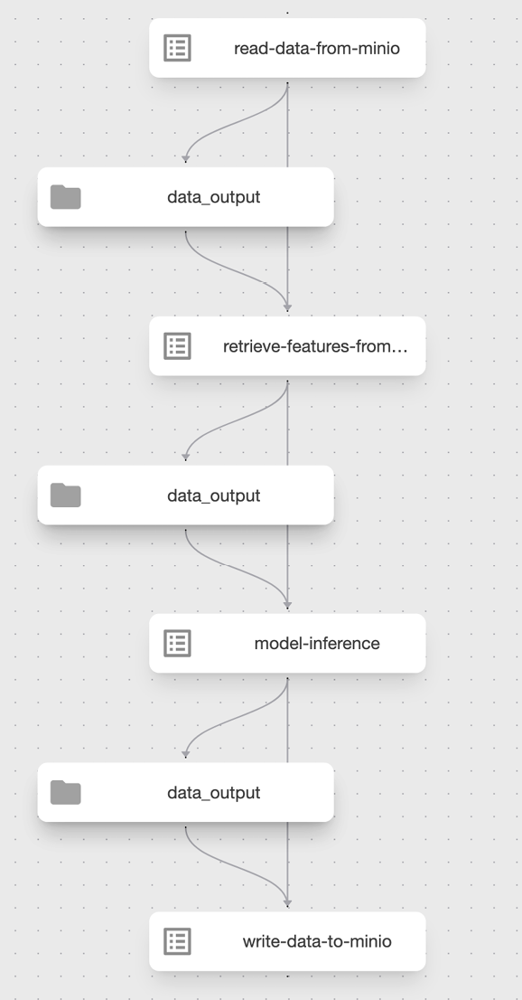
이미지 해설 (ch5_img012) — 011 과 같은 그래프의 큰 원본입니다. 작업 상자와 data_output 상자 사이를 곡선 화살표가, 작업 상자들 사이를 세로 직선이 잇고 있습니다. 곡선은 "이 파일을 만든다 / 읽는다", 직선은 "이 작업이 끝나야 다음 작업" 이라는 의존선 으로 읽을 수 있습니다.
이 DAG 를 실행하면 무슨 일이 일어나나: 작업마다 새 Pod
KFP 실행 엔진에서 파이프라인이 실행되면 각 작업(컴포넌트)마다 독립적인 컨테이너 Pod(쿠버네티스의 기본 실행 단위)가 순차적으로 생성됩니다. KFP 드라이버와 런처 컨테이너가 아티팩트 다운로드 및 업로드를 조율하며, "컴포넌트 하나당 실행 Pod가 따로 만들어져 순차적으로 실행된다"는 점을 아래 위젯으로 확인할 수 있습니다.
⚠ 운영 주의 (완료된 Pod의 수명주기): 완료된 Pod가 곧바로 사라지는 것은 아닙니다. 실행을 마친 Pod는 Completed 상태로 목록에 남아 로그와 실행 상태를 확인할 수 있게 유지됩니다. 완료된 Pod의 최종 정리 시점은 쿠버네티스 클러스터의 Pod GC(Garbage Collection) 및 TTL Controller 정책에 따라 결정됩니다.
캐싱, 재시도, 멱등성: 파이프라인을 믿을 만하게 만드는 세 가지
한 줄 요약
배치 파이프라인이 매일 조용히 돌려면 세 가지 질문에 답해야 합니다. 같은 일을 또 해야 하나(캐싱), 실패하면 다시 해도 되나(재시도), 여러 번 해도 결과가 같은가(멱등성)입니다. 앞의 둘은 도구가 도와주지만, 세 번째는 단계를 어떻게 설계하느냐에 달려 있습니다.
캐싱: 같은 입력이면 이전 결과를 재사용
KFP는 기본적으로 모든 컴포넌트에 캐싱이 켜져 있고, 작업 단위로 끌 수 있다고 공식 문서가 안내합니다. 입력과 실행 정의가 이전과 같으면 계산을 다시 하지 않고 이전 결과를 가져옵니다. 캐시 판단에는 입력 아티팩트와 파라미터, 출력 명세, 컨테이너 이미지 문자열, 실행 명령이 쓰이는 것으로 알려져 있습니다. 정확한 구성은 백엔드 버전에 따라 다를 수 있으니 사용하는 버전의 문서를 확인하세요.
여기서 핵심은 캐시가 문자열이 같은지를 보지, 그 문자열이 가리키는 내용이 같은지까지 자동으로 검사하지는 않는다는 점입니다.
가상의 예를 들겠습니다. 입력 경로가 오늘의_고객.parquet로 같은데 파일 내용이 어제 100만 행에서 오늘 120만 행으로 덮어써졌다면, 경로 문자열은 그대로이므로 시스템이 변경을 알아채리라고 기대할 수 없습니다. 모델도 마찬가지입니다. model_stage=Production이라는 문자열이 어제는 버전 5, 오늘은 버전 6을 가리켜도 파라미터 문자열은 같습니다. 이럴 때는 실행 시작 때 별칭이나 단계를 숫자 모델 버전으로 해석해 명시적인 입력으로 넘기고, 데이터 파일 이름에 날짜나 버전을 넣어 두는 방법이 있습니다.
또 이미지 태그가 latest처럼 가변이면 태그 문자열은 같은데 내용이 바뀔 수 있습니다. 재현성이 중요한 단계에는 고정 태그를 쓰거나 이미지 내용 식별자(digest)를 쓰는 방법을 검토합니다.
재시도: 일시적 오류를 견디는 정책
네트워크 순단이나 서비스 과부하처럼 잠시 후 풀리는 문제는 자동 재시도로 흡수합니다. KFP SDK에는 재시도 횟수와 대기 시간을 지정하는 set_retry가 있습니다. 예를 들어 횟수 3회에 처음 대기를 60초로 두고 배수가 2라면 60초, 120초, 240초 간격으로 다시 시도합니다. 이 숫자는 설정 예이며 상황에 맞게 정합니다.
재시도로 해결되지 않는 오류도 있습니다. 문법 오류, 없는 필수 열, 모델 입력 계약 위반은 기다려도 풀리지 않으므로 빨리 실패시키는 편이 낫습니다. 재시도 대상 오류, 최대 횟수, 알림 기준, 산출물의 완료 조건을 함께 정해 두어야 합니다.
멱등성: 여러 번 해도 최종 상태가 같다
멱등성(idempotency)은 같은 작업을 한 번 하든 여러 번 하든 최종 상태가 같다는 성질입니다. 엘리베이터 버튼을 세 번 눌러도 한 번 누른 것과 같은 층에 서는 것과 같습니다. 재시도를 켰다고 해서 단계가 저절로 멱등해지는 것은 아닙니다.
| 저장 방식 | 재시도 후 상태 | 생각할 점 |
|---|---|---|
| 기존 파일에 행을 덧붙임(append) | 행이 2배, 3배로 늘어날 수 있음 | 멱등하지 않음 |
| 고정 이름으로 덮어씀 | 마지막 결과 한 개만 남음 | 같은 입력이면 같은 최종 상태, 단 이전 날짜 결과가 사라짐 |
| 날짜를 넣은 이름으로 저장 | 날짜마다 보존 | 같은 날 재시도 때 덮어쓸지 정해야 함 |
가상의 예로 결과 저장 단계가 100만 행을 파일에 쓴 뒤 성공 응답을 보내기 전에 연결이 끊겼다고 합시다. 오케스트레이터는 실패로 보고 재시도하지만 파일은 이미 저장되어 있을 수 있습니다. 두 번째 시도가 행을 덧붙이면 200만 행이 됩니다. "실패로 표시됨"과 "바깥 세상에 아무 변화가 없음"은 같은 말이 아닙니다.
고정 파일 이름으로 덮어쓰는 방식도 조건 없이 멱등하다고 할 수는 없습니다. 두 시도가 서로 다른 모델 버전이나 서로 다른 입력으로 계산했다면 마지막에 쓴 결과가 달라집니다. 먼저 입력과 모델을 고정하고, 결과 파일이 같은 논리적 결과라는 것을 보장한 뒤에야 덮어쓰기가 안전합니다. 객체 저장소에서는 일반 파일 시스템의 원자적 이름 변경을 기대하지 않는 편이 좋으므로, 임시 위치에 쓰고 검증한 다음 완료 표시를 공개하는 절차를 정해 둡니다.
flowchart LR A["입력과 모델 버전 고정"] --> B["결과를 임시 위치에 저장"] B --> C["행 수 스키마 검증"] C --> D["완료 표시 공개"] B -. "중간 실패 후 재시도" .-> B
참고 문서
- Kubeflow Pipelines, Caching: https://www.kubeflow.org/docs/components/pipelines/user-guides/core-functions/caching/
- Kubeflow Pipelines SDK, DSL reference (set_retry): https://kubeflow-pipelines.readthedocs.io/en/stable/source/dsl.html
- Kubernetes, Images (태그와 digest): https://kubernetes.io/docs/concepts/containers/images/
실험(experiment)과 실행(run) (그림 5.6, 5.7)
본문 내용: 실험과 실행의 차이
- kubeflow 파이프라인 실험은 머신러닝 워크플로 실행을 관리하고 추적하는 데 사용되며, kubeflow 파이프라인의 다양한 실행을 체계적으로 정리하고 모니터링하며 비교하는 것을 지원합니다.
- 반면 kubeflow 실행은 kubeflow 파이프라인이 실제로 실행된 인스턴스를 의미합니다.
- 파이프라인의 실행들은 손쉬운 추적을 위해 하나의 실행 아래에 묶어두는 것이 바람직합니다.
- 실험은 UI의 Create Experiment 화면에서 이름과 설명(선택 사항)을 정해 만듭니다(그림 5.6).
바로잡기 (원본과 정정본 나란히)
| 문장 | |
|---|---|
| 원본 | "파이프라인의 실행들은 손쉬운 추적을 위해 하나의 실행 아래에 묶어두는 것이 바람직합니다." |
| 정정본 | "파이프라인의 실행(run)들은 손쉬운 추적을 위해 하나의 실험(experiment) 아래에 묶어두는 것이 바람직합니다." |
⚠ 바로잡기: 바로 앞 문장이 "실험은 여러 실행을 정리하고 비교한다, 실행은 실제로 돌아간 한 번의 인스턴스다"라고 정의하므로, 실행을 "실행 아래에" 묶는다는 말은 맞지 않습니다. 문맥상 "하나의 실험 아래" 가 옳습니다. KFP 공식 문서도 experiment 를 "여러 run 을 논리적으로 묶는 작업 공간"으로 설명하는 것으로 알려져 있습니다(공식 문서).
| 용어 | 한 줄 정의 | 비유 |
|---|---|---|
| 파이프라인(pipeline) | 작업 순서와 연결을 적은 설계도(YAML) | 요리 레시피 |
| 실험(experiment) | 관련된 여러 실행을 모아 정리하는 폴더/작업 공간 | 실험 노트 한 권 |
| 실행(run) | 파이프라인을 실제로 한 번 돌린 기록 | 노트의 한 페이지(오늘의 시도) |
flowchart TB
P["파이프라인 income-classifier"] --> R1
P --> R2
P --> R3
subgraph E["실험 income-classifier"]
direction TB
R1["run 1 처음 실행"]
R2["run 2 모델 stage 변경"]
R3["run 3 출력 파일명 변경"]
end이 KFP 의 "실험" 은 MLflow 의 실험(학습 결과 추적)과 이름만 같고 별개입니다. KFP 실험은 파이프라인 실행들을 묶고, MLflow 실험은 모델 학습 실행들을 묶습니다. 두 곳이 자동으로 동기화되지 않습니다(그림 5.6 영어 화면의 안내문에서도 pipelines 와 그 runs 의 history 를 담는 공간이라고 설명).
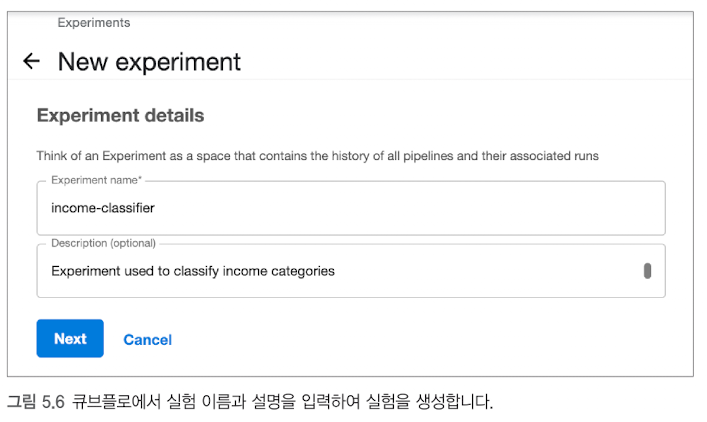
이미지 해설 (ch5_img013) — 제목 New experiment, 소제목 Experiment details. 안내문 "Think of an Experiment as a space that contains the history of all pipelines and their associated runs"(실험을 "파이프라인과 그 실행 이력을 담는 공간"으로 생각하세요)가 있습니다. 입력칸은 Experiment name*(필수: income-classifier) 과 Description (optional)(선택: Experiment used to classify income categories) 두 개, 버튼은 Next 와 Cancel 입니다. Next 는 다음 단계(run 만들기)로 이어집니다.
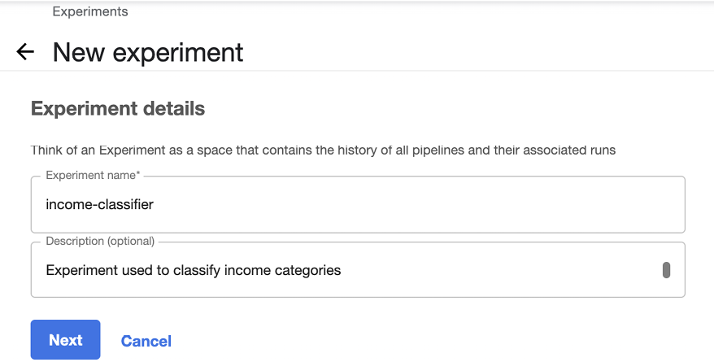
이미지 해설 (ch5_img014) — 013 과 같은 화면의 큰 원본입니다. 입력값과 버튼이 동일합니다.
본문 내용: 실행의 구성
- 실험이 만들어진 뒤에 Create Run 화면에서 파이프라인 실행을 만듭니다.
- 여기서는 실험 이름과 함께 파이프라인의 런타임 파라미터를 지정해야 합니다(그림 5.7).
- 값을 모두 채우고 Start Run 을 누르면 실행이 시작되는 구조입니다.
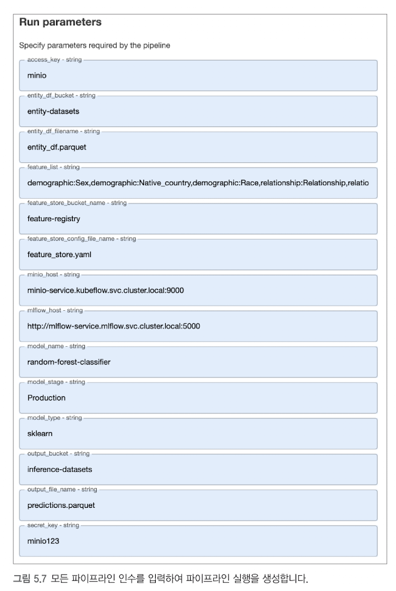
이미지 해설 (ch5_img015) — Run parameters 화면으로, 앞의 파이프라인 파라미터 14개가 모두 string 입력칸으로 나옵니다. 파이프라인 함수의 인자를 모두 str 로 선언했기 때문에, 숫자처럼 보이는 값도 문자열로 입력되고 컴포넌트 안에서 필요하면 변환합니다. 아래는 이 책 그림에 나온 값입니다.
| 파라미터 | 책 그림에 나온 값 |
|---|---|
access_key |
minio |
entity_df_bucket |
entity-datasets |
entity_df_filename |
entity_df.parquet |
feature_list |
demographic:Sex,demographic:Native_country,demographic:Race,relationship:Relationship,relatio… (화면 폭 때문에 뒷부분이 잘림) |
feature_store_bucket_name |
feature-registry |
feature_store_config_file_name |
feature_store.yaml |
minio_host |
minio-service.kubeflow.svc.cluster.local:9000 |
mlflow_host |
http://mlflow-service.mlflow.svc.cluster.local:5000 |
model_name |
random-forest-classifier |
model_stage |
Production |
model_type |
sklearn |
output_bucket |
inference-datasets |
output_file_name |
predictions.parquet |
secret_key |
(화면에 평문이 보임 — 여기에는 옮기지 않음) |
feature_list는 화면 폭 때문에 뒷부분이 잘려 있으므로 이 그림만으로 전체 피처 목록을 알 수는 없습니다. 목록은 Feast 에 등록한 피처 뷰의 정의에서 정해집니다.- 입력 버킷 이름도 환경마다 정하는 값입니다. 책 그림의
entity-datasets와 다른 이름을 쓰는 환경이 있어도 정상입니다.
⚠ 보안 주의: 이 화면에서는access_key와secret_key가 일반 문자열로 입력칸에 그대로 보입니다. 그림 5.7 처럼 Run 파라미터로 넘긴 키는 실행 이력(UI·DB)에 평문으로 남습니다. 아래 「보안 안내」에서 대안을 설명합니다.
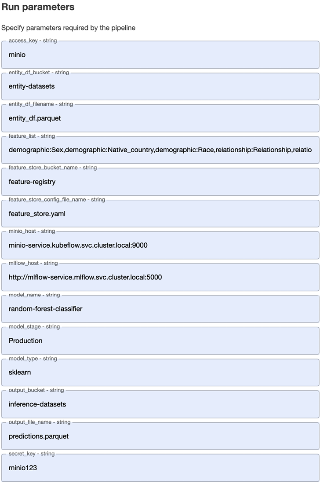
이미지 해설 (ch5_img016) — 015 와 같은 폼의 큰 원본입니다. 값도 같고, feature_list 는 여기서도 같은 지점에서 잘려 있습니다.
성공한 실행 (그림 5.8)과 detect-drift 단계 · 마무리
본문 내용
- 실행을 시작하면 KFP UI는 실행 진행 상황을 그래프로 보여 줍니다. 그림 5.8은 모든 작업이 끝난 성공 화면입니다.
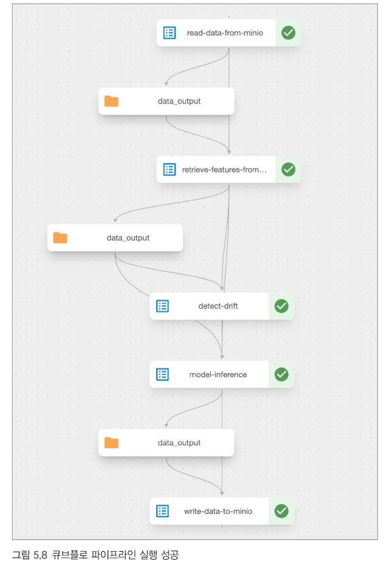
이미지 해설 (ch5_img017) — 상자마다 오른쪽에 초록 체크(✓) 가 붙은 성공 화면입니다. 초록 체크는 그 작업이 오류 없이 끝났다는 표시입니다. 이 그림에 보이는 작업 상자는 5개입니다.
read-data-from-minio → retrieve-features-from… → detect-drift → model-inference → write-data-to-minio
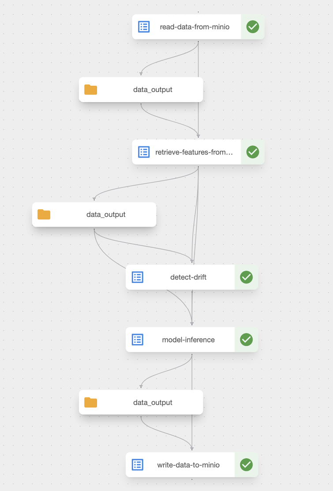
이미지 해설 (ch5_img018) — 017 의 큰 원본으로, detect-drift 상자가 분명하게 보입니다. retrieve-features 가 만든 data_output 이 detect-drift 와 model-inference 쪽으로 이어지는 선이 보입니다.
⚠ 본문과 그림이 다른 점: 본문은 파이프라인을 4단계(읽기 → 피처 → 추론 → 쓰기)로 설명하고 저장소의 코드·컴파일 YAML 에도 작업이 4개뿐인데, 그림 5.8 에는 `detect-drift` 단계가 하나 더 있습니다. 즉 "그림에는 있으나 저장소 코드에는 없는 단계"이며, 그 이유는 확인되지 않았습니다. 따라서 이 책의 코드에 드리프트(입력 데이터 분포가 학습 때와 달라지는 현상) 탐지가 구현되어 있다고 읽으면 안 됩니다.
| 구분 | 4단계 코드(리스팅 5.11) | 그림 5.8 |
|---|---|---|
| 작업 수 | 4개 | 5개 |
| 순서 | 읽기 → 피처 → 추론 → 쓰기 | 읽기 → 피처 → detect-drift → 추론 → 쓰기 |
| 비고 | 저장소 코드와 일치 | 추가 단계의 코드·역할은 확인되지 않음 |
- 초록 체크는 "작업이 끝났다"는 증거이지 예측이 좋다는 증거가 아닙니다. 예측 품질은 따로 확인해야 합니다.
본문 내용: 맺는 말
- 소득 분류기 파이프라인이 성공하면 MinIO 버킷
inference-datasets에 예측 결과가 저장됩니다. - KFP는 K8s 기반 환경에서 머신러닝 워크플로를 관리하고 실행하는 데 매우 유용한 도구입니다.
- 재현성, 확장성, 협업을 향상하기 위해, 복잡한 머신러닝 파이프라인을 설계/스케줄링/추적하는 체계적이고 조직화된 방법을 제공합니다.
- 워크플로를 코드로 정의함으로써, KFP는 데이터 과학자와 머신러닝 엔지니어가 데이터 전처리부터 모델 배포에 이르는 작업을 자동화하고 간소화하며 오케스트레이션할 수 있도록 합니다.
- 실험을 설계하고 그 안에서 다수의 실행을 추적하는 기능 덕분에, 팀은 다양한 구성, 하이퍼파라미터, 데이터셋을 체계적으로 실험할 수 있습니다.
- KFP는 배치 추론에 잘 맞는 도구입니다. 실시간 추론과 프로덕션 환경에서의 모델 배포를 위해서는, 다음 장에서 또 다른 도구인 BentoML 을 살펴보겠습니다.
(본문의 설험 은 실험 의 오탈자입니다.)
풀어 쓰기
- 배치 추론: 한꺼번에 많은 행을 모아 정해진 시간에 예측하고 결과를 파일로 저장하는 방식(예: 밤새 3만 명 소득 예측). 이 장이 하는 일입니다.
- 실시간 추론: 요청이 올 때마다 바로 예측해서 응답하는 방식(예: 앱에서 즉시 답을 보여줌). 다음 장의 BentoML 이 다룹니다.
⚠ 표현 완화: "재현성·확장성·협업이 향상된다"는 설명은 도움이 된다는 뜻이지 "완벽한 재현성"이나 "감사 추적 보장"을 뜻하지 않습니다. 같은 코드·같은 이미지 태그·같은 입력이어도 외부 서비스(MLflow stage 변경, 데이터 갱신)가 바뀌면 결과가 달라질 수 있고, 위에서 본 것처럼 키가 이력에 평문으로 남는 약점도 있습니다.
스케줄링과 재현성: 데이터·모델 버전 고정
실행한 시간과 처리할 기간을 구분합니다
스케줄링은 작업을 언제 시작할지 정하는 기능입니다. 처리 기간은 그 실행이 어떤 자료를 대상으로 삼는지 정한 입력 계약입니다. KFP의 recurring run은 반복 실행을 만드는 기능이며, 네 태스크가 연결되어 있다는 사실만으로 정기 실행·지연 도착 처리·중복 방지가 모두 설정되지는 않습니다.
다음은 가상의 예시입니다. 5월 23일 오전 2시 실행은 5월 22일 00시부터 5월 23일 00시 직전까지의 거래를 처리합니다. 장애로 오전 7시에 다시 시작해도 대상 구간은 원래 기간이어야 같은 업무를 재시도했다고 할 수 있습니다. 함수 안에서 현재 시각을 기준으로 구간을 새로 계산하면 실행 시각의 지연이 처리 대상의 변경으로 이어질 수 있습니다.
시간 구간만 고정해도 내용은 바뀔 수 있습니다
논리적 기준일과 구간의 시작·종료, 시간대를 입력으로 명시합니다. 한국 시간 5월 22일 00시는 UTC 5월 21일 15시입니다. 날짜가 같아 보여도 시간대가 다르면 9시간 차이가 생깁니다. 시작 포함·종료 제외처럼 일관된 경계를 정하면 인접 구간의 중복을 줄이는 데 도움이 됩니다.
과거 구간을 다시 처리하는 작업을 backfill이라고 합니다. 지연 도착이나 수정 자료를 포함한 최신 계산을 원하는지, 과거 실행이 사용한 자료를 재현하려는지 목적을 먼저 구분합니다. 같은 event_timestamp를 사용해도 원천 파일에 과거 자료가 추가되거나 수정되면 내용이 달라질 수 있습니다. 사건 시각의 고정은 원천 스냅샷의 고정과 다릅니다.
한 실행의 선택을 기록합니다
| 고정할 대상 | 필요한 식별자 | 식별자만으로 부족한 이유 |
|---|---|---|
| 데이터 | 원천 스냅샷·객체 버전 또는 digest | 날짜나 파일명만 같아도 내용은 바뀔 수 있습니다 |
| 모델 | 별칭을 해석한 등록 이름과 숫자 버전 | 별칭은 다른 버전으로 이동할 수 있습니다 |
| 피처·전처리 | 정의 스냅샷과 변환 산출물 버전 | 같은 이름의 정의가 수정될 수 있습니다 |
| 실행 환경 | 코드·라이브러리와 이미지 digest | 버전 태그를 같은 이름으로 다시 붙일 수 있습니다 |
가상 실행 A가 데이터 D17, 모델 버전 5, 피처 정의 F3, 전처리 P2, 이미지 digest I9를 사용했다고 합니다. 일주일 뒤 별칭이 모델 6을 가리켜도 A를 재현할 때에는 A의 선택 기록을 기준으로 삼습니다. 해당 내용이 실제로 보존되어 있어야 재계산할 수 있으므로 보존 기간과 접근 권한도 이 기록에 연결합니다.
이미지 태그 latest나 v1은 사람이 붙이는 이름입니다. 내용 식별자인 digest와 역할이 다릅니다. imagePullPolicy는 이미지 조회·다운로드 정책이며 이미지의 내용 고정 정책은 아닙니다. Always도 이미 캐시된 레이어를 매번 모두 다시 내려받는다는 뜻은 아닙니다.
재시도와 새 계산의 결과를 구분합니다
재시도에서 모델 별칭을 새로 해석하거나 원천의 최신 파일을 읽으면 원래 실행과 조건이 달라질 수 있습니다. 이전 결과를 재현하는 실행은 원래 계약을 이어받고, 최신 자료와 모델로 다시 계산하는 실행은 새로운 계약을 기록하는 편이 명확합니다. 같은 날짜라도 두 결과가 답하는 질문이 다를 수 있습니다.
실행 겹침의 동시성, 실패 구간의 재처리, 늦게 도착한 자료의 반영 시점도 정책으로 정합니다. 출력 파일 이름을 같게 만드는 것만으로 재실행의 결과와 부수효과가 같아지지는 않습니다. 버전과 구간을 명확히 기록하면 같은 업무를 다시 계산하는지 새 조건의 결과를 만드는지 구분할 수 있습니다. 이런 구분이 반복 실행 이력을 해석하는 재현성의 기반입니다.
참고 문서 KFP Runs and Recurring Runs ; Airflow Best Practices ; Kubernetes Images — https://kubernetes.io/docs/concepts/containers/images/ ; MLflow Model Registry workflow — https://mlflow.org/docs/latest/ml/model-registry/workflow/
결과 읽는 법: 확률 열, 식별자, get_dummies 한계
실행 진행과 결과 파일이 담는 것
KFP 실행 화면에서 실행(run)을 열면 작업이 그래프로 보이고, 순서는 read-data-from-minio → retrieve-features-from-feast → model-inference → write-data-to-minio 입니다. 각 노드의 Logs 탭에는 컴포넌트가 출력한 로그가 남습니다. 예를 들어 retrieve-features-from-feast 는 Feature store initialized 를 출력합니다. 소요 시간은 이미지를 처음 내려받는지 여부에 따라 달라집니다. 처음 실행하면 컨테이너 이미지를 레지스트리에서 내려받느라 오래 걸리고, 이미 받아 둔 노드에서는 빨라질 수 있습니다.
실행이 끝나면 write_data 컴포넌트가 지정한 버킷(inference-datasets)에 결과 Parquet 파일을 씁니다. 이 파일의 행 수는 입력 엔티티 목록의 행 수와 같아야 하고, 이 책의 예제 데이터라면 30,162행입니다. 열 수는 원-핫 인코딩으로 펼쳐진 입력 열에 예측 열이 붙어 결정됩니다. 아래에서 그 결과 파일을 읽을 때 주의할 점을 설명합니다.
⚠ 바로잡기: 한 번 실행해 본 기록에서 나온 "30,162행 × 91열, NaN 없음, 고소득 예측 22.1%, 같은 모델을 직접 불러 계산한 값과 최대 차이 0.0" 같은 수치는 한 번의 실행 기록일 뿐이며, 다른 환경에서 같은 값이 나온다는 보장은 없습니다. 또한 한 외부 블로그는 결과 열이 **92개**였다고 적었습니다. 91열과 92열의 차이는 데이터 전처리나 피처 구성이 달랐을 가능성이 있지만 원인은 알 수 없습니다.
결과 파일을 읽을 때 주의할 것 (확정 정정 8, 9)
① Predicted_Income_Class 는 클래스 라벨이 아닙니다.
추론 코드(리스팅 5.7)는 이렇게 끝납니다.
predicted_classes = [
x[1]
for x in model.predict_proba(
input_data_df
)
] # 모델 예측값을 생성한다.
input_data_df["Predicted_Income_Class"] = predicted_classes
predict_proba는 행마다[클래스 0 확률, 클래스 1 확률]두 값을 돌려줍니다. 코드의x[1]은 그중 두 번째 값 = 고소득(클래스 1)일 확률입니다.- 그래서 열 이름은 "Class"이지만 실제 내용은 0~1 사이 확률입니다. 예:
0.83→ "고소득일 확률 83%". - 진짜 클래스(0 또는 1)가 필요하면 임계값 0.5 와 비교해야 합니다:
(확률 >= 0.5).astype(int). - 예를 들어 "고소득 예측 22.1%"라는 수치는 정확도가 아닙니다. 확률이 0.5 이상이라 "고소득으로 예측된" 행의 비율입니다. 정답을 아는 것이 아니므로 "맞힌 비율"이 아닙니다.
| 표현 | 맞는 해석 |
|---|---|
Predicted_Income_Class = 0.83 |
이 사람이 고소득일 확률 83% (클래스 1이라는 라벨이 아님) |
| 22.1% | 확률 ≥ 0.5 로 "고소득 예측"된 행의 비율 (정확도 아님) |
| 라벨이 필요할 때 | proba >= 0.5 로 직접 변환 |
② 결과 parquet 에는 user_id / event_timestamp 가 없습니다.
추론 코드에서 input_data_df.drop(columns=["user_id", "event_timestamp"], inplace=True) 로 두 열을 지운 뒤 다시 붙이지 않고 저장합니다. 그래서 결과 파일만으로는 "어느 사용자의 예측인지"를 알 수 없고, 입력(entity_df)의 행 순서와 맞춰 봐야 합니다. 91개 컬럼에 사용자 ID 가 포함돼 있지 않다는 점을 알아 두세요.
user_id 를 다시 붙여 저장하는 것이 안전합니다.알려진 한계: get_dummies(drop_first=True) 를 배치마다 적용 (확정 정정 10)
추론 코드는 입력 배치에 pd.get_dummies(input_data_df, drop_first=True, ...) 를 적용한 뒤, 학습 때 컬럼 목록(column_list.pkl)에 reindex(columns=col_list, fill_value=0) 로 맞춥니다.
get_dummies는 문자 범주를 0/1 열로 펼칩니다.drop_first=True는 그 배치에 있는 범주 중 알파벳 첫 번째를 기준 범주로 삼아 열을 하나 뺍니다.- 문제는 "그 배치에 있는" 범주를 기준으로 삼는다는 점입니다. 학습 때 기준은
A였는데, 이번 배치에A가 없으면 기준이B로 바뀌어B열이 사라지고,reindex가 그 열을 0 으로 채워 B 인 사람이 A 인 사람과 똑같은 입력이 됩니다. 에러 없이 조용히 틀린 예측이 나옵니다. - 전체 30,162행을 한 번에 넣으면 모든 범주가 들어 있어 이 문제가 드러나지 않습니다. 소량 배치로 나눠 돌릴 때 위험해집니다.
예시(범주 A, B, C 가 있는 열 X, 학습 때 기준 범주는 A → 학습 열은 X_B, X_C):
위 시뮬레이터는 개념을 보여 주려고 단순화한 모형입니다. 열이 하나뿐이고 범주 3개를 가정했으며, 실제 데이터는 여러 열과 훨씬 많은 범주를 가집니다. 해결 방향으로는 학습 때 쓴 범주 목록을 저장해 두고 그것으로 인코딩하거나, 배치마다
drop_first를 쓰지 않고 학습 때 컬럼 목록에만 맞추는 방법이 있습니다. 참고로 이 방법은 책의 코드에는 없는 일반적인 방법입니다.
배치 추론의 조용한 오류: 인코딩·확률·식별자
성공 상태 다음에 필요한 세 가지 계약
파일이 생성되고 태스크가 끝났다는 것은 기술적 완료를 뜻합니다. 그 파일의 숫자를 어떤 사람과 시점의 어떤 예측으로 해석할 수 있는지는 별도 계약입니다. 기존의 배치별 인코딩 문제를 점검했다면, 미지 범주의 처리, 클래스 매핑, 결과 식별자를 함께 살펴야 합니다. 조용한 오류는 예외 없이 의미가 어긋난 결과가 전달되는 상황을 말합니다.
미지 범주를 허용하는 정책의 비용
학습에 사용한 인코더를 보존하면 같은 범주 기준으로 변환할 수 있습니다. 그러나 학습에 없던 새 범주를 어떻게 처리할지는 별도의 결정입니다. get_dummies는 입력 범주에 따른 결정적 변환이며, 문제는 무작위 동작이 아니라 학습과 추론의 범주 집합이 달라지는 것입니다.
handle_unknown='ignore' 같은 정책은 미지 범주를 모두 0으로 표현할 수 있습니다. 기준 범주를 제거한 인코딩에서도 기준 범주가 모두 0이므로 두 의미가 구분되지 않을 수 있습니다. 열 수와 순서가 맞아도 이런 정보 손실은 남습니다. 새 범주를 거부할지, 별도 미지 범주로 표현할지, 재학습 대상으로 볼지 업무 목적에 맞춰 정합니다.
다음은 가상의 예시입니다. 입력 100건 중 학습에 없던 범주가 3건이라면 미지 범주 비율은 3%입니다. 100건 모두에 확률을 출력하는 정책과 3건을 예외 처리하여 97건만 예측하는 정책은 결과의 의미가 다릅니다. 어느 쪽을 선택하든 처리한 건수와 예외 사유가 연결되어야 합니다.
| 정책 | 결과 해석 | 함께 남길 정보 |
|---|---|---|
| 미지 범주를 거부합니다 | 예측 대상에서 제외된 행이 생깁니다 | 제외 식별자와 사유 |
| 미지 범주를 모두 0으로 둡니다 | 기준 범주와 구별되지 않을 수 있습니다 | 미지 범주 여부와 적용 정책 |
| 별도 미지 범주로 다룹니다 | 별도 표현의 학습·추론 계약이 필요합니다 | 인코더와 범주 정의 버전 |
특히 Private는 Workclass의 값이므로 Occupation의 직업 범주로 설명하지 않습니다. 열 이름과 범주 목록을 함께 기록해야 새 값인지, 다른 열의 값이 잘못 들어온 것인지 구분할 수 있습니다.
두 번째 확률 열의 의미를 고정합니다
predict_proba의 열 순서는 모델의 classes_와 연결합니다. 가상 모델 A가 정답을 0=저소득, 1=고소득으로 인코딩했다면 classes_가 [0, 1]일 때 두 번째 열이 고소득 확률입니다. 모델 B가 0=고소득, 1=저소득으로 학습했다면 classes_가 똑같이 [0, 1]이어도 고소득은 첫 번째 열입니다. 숫자 클래스 순서와 업무 라벨의 매핑을 둘 다 알아야 합니다.
따라서 “두 번째 열”을 고소득이라고 고정하는 대신 목표 클래스와 인코딩의 대응을 기록합니다. 확률을 라벨로 바꾸는 임계값도 결과 메타데이터에 연결합니다. 임계값이 달라지면 같은 확률 배열에서도 예측 비율은 달라지므로 모델 성능 변화와 결정 정책의 변화를 구분할 수 있습니다.
식별자를 계산 밖에 두어도 결과에는 연결합니다
user_id와 기준 시각은 모델 입력에서 제외할 수 있지만 결과를 원래 대상에 연결할 근거로 보존합니다. 조인·필터링·정렬이 있는 파이프라인에서 입력과 출력의 줄 순서만 믿으면 같은 길이의 파일도 다른 사용자에게 연결될 수 있습니다. 여러 시점의 예측을 보관한다면 사용자와 기준 시각의 조합 등 결과 단위를 명확히 정의합니다.
앞의 100건 예에서 3건을 제외한 97건은 해당 식별자와 연결하고, 나머지 3건은 예외 내역으로 설명합니다. 결과에는 모델·전처리 버전과 범주 정책도 연결합니다. 이 계약은 단순한 성공 상태를 넘어 각 행을 어떤 조건의 예측으로 사용할 수 있는지 판단하는 근거가 됩니다.
참고 문서 scikit-learn OneHotEncoder — https://scikit-learn.org/stable/modules/generated/sklearn.preprocessing.OneHotEncoder.html ; scikit-learn Common pitfalls — https://scikit-learn.org/stable/common_pitfalls.html
파이프라인 네트워크 격리 원리와 자격증명 보안 설계
파이프라인 네트워크 격리 원리와 자격증명 보안 설계
쿠버네티스 기반의 Kubeflow Pipelines(KFP) 환경에서 파이프라인을 운영할 때 자주 마주치는 네트워크 주소 해석 문제와 자격증명(Credentials) 취급에 관한 핵심 보안 아키텍처 원칙입니다.
1. 파드 네트워크 격리와 localhost 해석 원리
컨테이너(Pod) 환경에서 가장 흔히 발생하는 연결 오류 원인 중 하나는 localhost의 해석 범위에 대한 오해입니다.
- 파드 내부의
localhost는 그 파드 자신을 가리킵니다: 컨테이너 안에서localhost(127.0.0.1)는 파드 자신의 네트워크 네임스페이스(루프백 인터페이스)를 의미합니다. - 따라서 파드 외부에서 실행 중인 MLflow 서버나 다른 백엔드 서비스에 접근할 때
localhost:5000을 넘겨주면, 파드는 자기 자신 내부의 포트 5000에 연결을 시도하다 접속 실패를 일으킵니다. - 올바른 설계: 클러스터 내부 서비스라면 쿠버네티스 내부 DNS 서비스 주소(예:
mlflow.kubeflow.svc.cluster.local:5000)를 사용하고, 클러스터 외부 서버라면 실제 호스트 IP 주소를 명시해야 합니다.
2. 자격증명 전달과 보안 아키텍처
⚠ 보안 취약점: 파라미터 평문 노출: KFP Run의access_key,secret_key와 같은 인증 정보를 일반 문자열 파이프라인 파라미터로 전달하면, 이 값들이 KFP UI 실행 이력 화면과 메타데이터 저장소 DB에 평문(Plain Text)으로 영구 보관되어 누구나 열람할 수 있는 심각한 보안 위험이 발생합니다.
프로덕션 환경의 보안 권장 설계
- Kubernetes Secret 기반 주입: 운영 환경에서는 비밀 키를 파라미터로 넘기지 않고 Kubernetes Secret 객체에 보관한 뒤, 파이프라인 태스크 설정(
kfp-kubernetes라이브러리)을 통해 파드 컨테이너의 환경변수로 안전하게 주입하는 방식이 권장됩니다. - 컴포넌트 코드의 환경변수 처리: Secret을 환경변수로 주입받으려면 컴포넌트 코드(
read_data.py,run_inference.py등) 역시 CLI 인자 대신os.environ을 통해 인증 정보를 우선 읽도록 설계해야 합니다. - 인증 체계의 구분: MinIO와 같은 온프레미스 S3 호환 객체 스토어는 고정 Access/Secret Key를 사용하는 반면, 퍼블릭 클라우드(AWS S3)에서는 IAM 역할 기반의 임시 토큰(IRSA 등) 인증 체계를 별도로 구성하는 것이 일반적입니다.
- 설정 파일 내 비밀번호 방지: Redis 암호 등이 포함된
feature_store.yaml을 공유 객체 스토리지 버킷에 업로드하면 파일 내에 비밀번호가 노출되므로, 설정 파일에서도 환경변수 치환 문법(${REDIS_PASSWORD})을 활용해 평문 저장을 방지해야 합니다.
자격증명 취급 방식 비교
| 방식 | 키가 남는 곳 | 평가 및 권장도 |
|---|---|---|
| Run 파라미터에 직접 입력 | KFP 실행 이력 UI 및 메타데이터 DB | 취약 (학습 및 격리된 테스트용으로만 한정) |
| Kubernetes Secret + 환경변수 주입 | 암호화된 Secret 객체 및 파드 메모리 | 권장 (프로덕션 파이프라인 표준 아키텍처) |
| 코드 또는 설정 파일에 직접 하드코딩 | 소스 코드 저장소 및 공개 버킷 | 금지 (보안 감사 위반) |
5.2 요약: 오케스트레이션과 컴포넌트 설계
책의 5.2 요약은 정확히 5개 항목입니다. 본문을 그대로 먼저 보여 주고, 바로 아래에 풀이를 붙입니다.
요약 ① 오케스트레이션
오케스트레이션(orchestration)은 여러 개의 복잡한 파이프라인을 실행하면서, 각 파이프라인 단계에 필요한 데이터와 컴퓨팅 자원이 갖춰지도록 보장하는 과정입니다. Kubeflow 플랫폼은 이를 위한 솔루션으로 Kubeflow Pipelines(KFP)를 제공합니다.
- 풀이: 오케스트레이션은 "여러 작업을 순서와 의존 관계에 맞춰 자동으로 돌리고, 각 작업이 필요로 하는 파일(데이터)과 컴퓨터 자원(CPU·메모리)이 준비되게 챙기는 일"입니다. 이 장에서 읽기 → 피처 → 추론 → 쓰기를 순서대로 돌리고, 앞 작업의
data_output파일을 뒤 작업에 건네 준 것이 바로 그 예입니다. - 💡쉽게 말하면 오케스트라 지휘자입니다. 지휘자는 악기를 직접 연주하지 않고, 누가 언제 들어올지 순서를 맞춥니다. KFP 는 연산을 직접 하지 않고 각 컴포넌트(Pod)를 순서대로 띄워 줍니다.
요약 ② 컴포넌트
컴포넌트(component)는 ML 워크플로 안에서 재사용하고 조합할 수 있는 작업 단위입니다. 컴포넌트는 데이터 전처리, 모델 학습, 평가, 배포 같은 개별 작업이나 단계를 캡슐화합니다.
- 풀이: 컴포넌트는 한 가지 일을 하는 상자입니다. 이 장에서는 "코드 + 컨테이너 이미지 +
component.yaml" 세 가지가 한 세트였습니다. 캡슐화란 안쪽 구현은 숨기고 입력과 출력만 바깥에 드러낸다는 뜻입니다. - 예시:
fetch_data_op는 "MinIO 주소와 버킷·파일 이름을 받아data_output파일을 낸다"는 것만 알면 쓸 수 있습니다. 안에서Minio(...)로 어떻게 내려받는지는 몰라도 됩니다.
요약 ③ 독립적이고 범용적인 설계
컴포넌트를 설계할 때는 가능한 한 독립적이고 범용적으로 만들어야 합니다. 그래야 재사용이 쉽고, 개별 파이프라인 단계의 개발, 테스트, 유지보수도 쉬워집니다.
- 풀이: 독립적이라는 것은 다른 컴포넌트 내부에 기대지 않고 입력만으로 동작한다는 뜻이고, 범용적이라는 것은 특정 값을 코드에 박아 넣지 않고 파라미터로 받는다는 뜻입니다(
minio_host,bucket_name,model_name등). 그래서 다른 모델·다른 버킷에도 같은 컴포넌트를 쓸 수 있습니다. - 예시: 만약 추론 컴포넌트가 결과 저장까지 했다면 저장소를 MinIO 에서 데이터베이스로 바꿀 때 추론 코드를 건드려야 합니다. 이 장은 추론과 쓰기를 분리해서 쓰기 컴포넌트만 바꾸면 되게 했습니다.
요약 ④ 작은 컴포넌트로 나누기
큰 워크플로는 더 작은 컴포넌트로 나눌 수 있습니다. 이렇게 하면 공유 컴포넌트로 모듈화되고 유지보수하기 쉬운 ML 파이프라인을 만들 수 있습니다.
- 풀이: 한 덩어리 스크립트 대신 작은 단계로 쪼개면, 어느 단계에서 실패했는지 고장 위치가 좁혀지고, 같은 컴포넌트를 다른 파이프라인에서 재사용할 수 있으며, 한 단계만 고쳐도 됩니다. 앞의 그림 5.8(성공한 실행)에서 단계마다 초록 체크가 따로 붙는 것도 이 덕분입니다.
요약 ⑤ KFP 와 SDK
KFP와 태스크 오케스트레이터를 사용하면 ML 워크플로를 자동화하고, 순서를 정하고, 관리할 수 있습니다. 덕분에 데이터 전처리, 모델 학습, 배포 작업을 효율적으로 실행할 수 있습니다. KFP는 SDK도 제공해서, 개별 컴포넌트를 만들고, 컴포넌트를 파이프라인으로 연결하고, 파이프라인을 배포하고 실행할 수 있습니다.
- 풀이: KFP SDK(
kfp파이썬 패키지)로 할 수 있는 일을 이 장의 흐름에 대응시키면 이렇습니다.
| SDK 로 하는 일 | 이 장에서 쓴 것 |
|---|---|
| 컴포넌트 만들기/불러오기 | kfp.components.load_component_from_file(...) |
| 컴포넌트를 파이프라인으로 연결 | @dsl.pipeline 함수 + task.outputs[...] |
| 컴파일 | compiler.Compiler().compile(...) → YAML |
| 배포·실행 | UI 에서 업로드 → 실험 → 실행 (코드로도 가능) |
⚠ 표현 완화: "재사용·테스트·유지보수가 쉬워진다"는 요약은 설계가 잘 되었을 때의 이점 방향을 말한 것입니다. 컴포넌트를 쪼갰다고 자동으로 재사용되거나 오류가 없어지는 것은 아닙니다. 예컨대 이 장의 코드는 입력 Dataset 의 열 구성을 검사하지 않으므로(타입은 "파일을 주고받는다"는 약속일 뿐) 검증은 각 컴포넌트 코드 안에서 해야 합니다.
한눈에 보는 5.2 요약
flowchart TB A["1 오케스트레이션 순서와 자원 챙기기"] --> B["2 컴포넌트 재사용 가능한 작업 단위"] B --> C["3 독립적이고 범용적으로 설계"] C --> D["4 큰 워크플로를 작은 컴포넌트로 분리"] D --> E["5 KFP SDK 로 만들기 연결 배포 실행"]
파이프라인 설계와 핵심 개념 Q&A
파이프라인 설계와 핵심 개념 Q&A
Kubeflow Pipelines(KFP) 파이프라인 구축 및 컴포넌트 오케스트레이션 과정에서 반드시 이해해야 할 핵심 질문과 개념 정리입니다.
1. 컴포넌트 간 데이터 전달 메커니즘
Q. 컴포넌트 간 연결은 어떻게 이루어지며, 앞 컴포넌트의 출력이 뒤 컴포넌트의 입력으로 어떻게 전달되나요?
- 핵심 답변: 앞 태스크 객체의
outputs속성을 뒤 태스크의 입력 인자에 전달합니다.- 예시:
entity_df=fetch_data_task.outputs["data_output"] - 동작 원리:
1. 자동 의존성 인식: KFP 파이프라인 컴파일러가 이 연결을 보고 "뒤 작업은 앞 작업이 완료된 후 실행되어야 한다"는 DAG 실행 순서를 자동으로 인식합니다.
2. 아티팩트 경로 바인딩: 앞 작업이 컨테이너 내부의
outputPath에 기록한 파일이 MinIO 객체 스토어에 보관된 후, 뒤 작업 컨테이너의inputPath로컬 경로로 자동 다운로드되어 안전하게 건네집니다. 3. 타입 수준 계약: KFP의Dataset타입 명세는 파일 입출력 경로의 전달을 보장하는 아티팩트 수준의 약속이며, 내부 열(Column) 구성이나 결측치 유무 등의 데이터 유효성 검증은 컴포넌트 내부 로직이 담당해야 합니다.
- 예시:
2. 5장 핵심 요약 Q&A
| 질문 | 핵심 답변 |
|---|---|
| 오케스트레이션(Orchestration)이란? | 여러 머신러닝 작업을 정의된 순서와 의존 관계에 맞춰 자동 실행하고, 각 단계에 필요한 데이터와 컴퓨팅 자원(Pod)이 원활하게 프로비저닝되도록 조율하는 것. Kubeflow 생태계에서 이 역할을 수행하는 핵심 도구가 KFP입니다. |
| 컴포넌트(Component)란? | ML 워크플로 내에서 독립적으로 실행 및 재사용 가능한 모듈형 작업 단위. 데이터 수집, 전처리, 모델 추론, 결과 적재 등 파이프라인의 개별 단계를 독립된 컨테이너로 캡슐화합니다. |
| 바람직한 컴포넌트 설계 원칙은? | 외부 환경에 의존하지 않고 명시적인 입력 파라미터와 아티팩트만으로 동작하도록 독립적·범용적으로 설계해야 합니다. 이렇게 분리하면 개별 컴포넌트의 단위 테스트, 재사용, 유지보수가 용이해집니다. |
| 단일 워크플로를 잘게 분할하는 이유는? | 전체 파이프라인을 작은 컴포넌트들로 나누면 재사용성이 높아지고, 실행 실패 시 장애 발생 위치를 특정 파드 단위로 빠르게 격리 및 디버깅할 수 있습니다. |
| KFP와 Python SDK의 역할은? | 워크플로를 코드(DSL) 기반으로 자동화·버전 관리하며, 컴포넌트 정의 → 파이프라인 연결 → IR YAML 컴파일 → 클러스터 배포 및 실행의 전 과정을 체계적으로 수행합니다. |
3. 실무 아키텍처 이해 점검
Predicted_Income_Class값이 0.83인 행은 고소득자 클래스로 확정된 것인가요?- 아닙니다. 모델의
predict_proba가 출력한 값은 양성 클래스(고소득)일 확률(예측 점수)입니다. 분류 임계값(0.5) 이상이므로 고소득으로 분류할 수 있으나, 확정된 정답 라벨이 아니므로 비즈니스 요건에 따라 적절한 임계값 설정이 필요합니다.
- 아닙니다. 모델의
- 결과 Parquet 파일에서 각 예측값이 어느 사용자의 데이터인지 식별할 수 있나요?
- 추론 스크립트가 특성 행렬만 넘겨받아 예측 확률만 출력할 경우
user_id식별자가 누락될 수 있습니다. 프로덕션 파이프라인에서는 입력 데이터셋의 고유 식별자(user_id)를 예측 결과와 함께 결합하여 영구 저장소에 기록해야 합니다.
- 추론 스크립트가 특성 행렬만 넘겨받아 예측 확률만 출력할 경우
- API 키나 비밀번호를 파이프라인 Run 파라미터로 전달하는 문제의 올바른 해결책은?
- 인증 키를 일반 문자열 파라미터로 넘기면 KFP UI 및 DB에 평문으로 노출됩니다. Kubernetes Secret 객체로 민감 정보를 관리하고,
kfp-kubernetes확장을 통해 파드 컨테이너의 환경변수로 안전하게 주입해야 합니다.
- 인증 키를 일반 문자열 파라미터로 넘기면 KFP UI 및 DB에 평문으로 노출됩니다. Kubernetes Secret 객체로 민감 정보를 관리하고,
- 파이프라인에 새로운 데이터 검증(드리프트 검출) 단계를 추가하려면 어떻게 확장하나요?
- 독립된 드리프트 검출 컴포넌트(
detect_drift_op)를 정의한 후, 피처 조회 태스크의 출력(retrieve_features_task.outputs["data_output"])을 입력으로 연결하고, 추론 태스크의 입력(run_inference_task(input_data=detect_drift_task.outputs["data_output"]))으로 연결하면 DAG 순서가 자동으로 '피처 조회 → 드리프트 검출 → 모델 추론'으로 재구성됩니다.
- 독립된 드리프트 검출 컴포넌트(
- 컴포넌트 인수로
localhost를 넘겼을 때 외부 서버 접속에 실패하는 이유는?- 컨테이너 Pod 내부의
localhost는 호스트 PC가 아니라 Pod 자기 자신(루프백 인터페이스)을 가리키기 때문입니다. 다른 서비스와 통신하려면 클러스터 내부 DNS 이름이나 외부 IP 주소를 지정해야 합니다.
- 컨테이너 Pod 내부의
5장 파이프라인 구축 핵심 정정 및 오탈자 총괄표
5장 파이프라인 구축 핵심 정정 및 오탈자 총괄표
5장(5.1.2 ~ 5.2)의 컴포넌트 정의, 파이프라인 연결, 컴파일, 실행 과정에서 책 원문의 오류나 오해하기 쉬운 표현들을 바로잡은 핵심 정정 총괄표입니다.
| # | 책 본문 / 오해하기 쉬운 표현 | 표준 명세 및 기술적 사실 정정 | 관련 주제 |
|---|---|---|---|
| 1 | 입력 경로 input_data에 Output[Dataset]이라 기술 |
컴포넌트 인터페이스 표준상 입력은 Input[Dataset], 출력은 Output[Dataset] |
컴포넌트 입출력 계약 및 파이프라인 연결 |
| 2 | "하나의 실행(run) 아래에 묶어두는" | 문맥상 KFP의 최상위 논리 그룹인 "하나의 실험(experiment) 아래" | KFP 실험 및 실행 관리 |
| 3 | Compiler().compile(...) (import 누락) |
from kfp import compiler 선언 후 compiler.Compiler().compile(...) 호출 필요 |
KFP v2 파이프라인 컴파일 |
| 4 | 파이프라인 소스 파일명 income-classifier-pipeline.py |
실제 소스 파일은 inference_pipeline.py, 컴파일 결과물은 income_classifier_pipeline.yaml |
컴파일 및 아티팩트 관리 |
| 5 | Predicted_Income_Class를 클래스 라벨로, 22.1%를 모델 정확도로 오독 |
열 값은 이진 라벨이 아닌 고소득 양성 클래스 확률(predict_proba), 22.1%는 0.5 임계값 기준 예측 비율 |
모델 추론 출력값 해석 |
| 6 | 결과 Parquet에 사용자 식별자가 보존된 것으로 오해 | 원본의 user_id, event_timestamp는 전처리 단계에서 제외된 후 결과에 재결합되지 않음 |
예측 결과 식별성 거버넌스 |
| 7 | 배치 추론마다 get_dummies(drop_first=True) 개별 적용 |
서빙 배치에 특정 범주가 누락되면 열 순서와 개수가 뒤틀려 조용한 오예측 발생 위험 (학습 시점 인코더 재사용 필요) | 서빙 데이터 전처리 일관성 |
| 8 | 단일 실행 수치(30,162행 × 91열 등)를 고정 스키마로 제시 | 특정 배치 데이터셋 기준의 결과이며, 범주 구성에 따라 더미 열 개수가 달라질 수 있음 | 데이터 파이프라인 재현성 |
| 9 | 컴파일본과 클러스터 KFP 엔진 버전 호환성 | KFP SDK 컴파일러 버전과 클러스터 KFP 백엔드 버전 간 IR YAML 스키마 호환성 확인 필요 | 파이프라인 엔진 호환성 |
| 10 | 최고 모델 선정 기준의 불일치 | 단순 점수 우열뿐 아니라, 서빙 컴포넌트가 요구하는 추론 인터페이스(predict_proba 지원 여부) 호환성이 결정적 요소 |
서빙 인터페이스 규약 |
| 11 | MLflow Stage 전환 "3.0.0에서 완전 제거" | MLflow 2.9.0부터 stage API가 deprecated되었으나 하위 호환성을 위해 유지됨. 실무에서는 재지정 가능한 모델 별칭(alias) 사용 권장 |
Model Registry 거버넌스 |
| 12 | 파이프라인 UI에 detect-drift 노드 표시 |
책의 UI 캡처 그림에는 나타나지만 기본 예제 코드에는 미포함된 확장 단계 | 데이터 드리프트 검출 확장 |
| 13 | 파이프라인 Run 파라미터에 인증 키 평문 입력 | Run 파라미터는 실행 이력 화면 및 메타데이터 DB에 평문으로 영구 기록되므로, 프로덕션에서는 Kubernetes Secret 주입 사용 | 자격증명 보안 아키텍처 |
| 14 | 실행 완료된 Pod의 즉각 삭제 오해 | 실행 완료된 태스크 Pod는 Completed 상태로 유지되어 로그 조회가 가능하며, 클러스터 GC 정책에 따라 사후 정리됨 |
Pod 수명주기 관리 |
| 15 | 파이프라인 도구 도입만으로 "완벽한 재현성 보장" 단정 | 컴포넌트 입력 아티팩트 고정, 컨테이너 이미지 불변 태그, 명시적 시드 설정이 수반되어야 실질적 재현성 달성 가능 | MLOps 재현성 설계 |
주요 본문 오탈자 목록
Piepline→Pipelines설험→실험fetch-dta_op→fetch_data_oprestrieve_features_op→retrieve_features_opmodel-iinio→model-inferenceFeature store initializ→Feature store initializedrandom-forest-classifiuction→random-forest-classifier
컴포넌트 정의 및 엔드포인트 관련 정정 참고
- MinIO 통신 프로토콜:
https://minio-service...:9000표기는 내부 클러스터 통신에서http://(포트 9000,secure=False)로 처리됩니다. component.yaml문법 오류: 본문 소스 중type: Dataset outputs:구문은 개행 분리가 필수적이며, 들여쓰기 표준을 준수해야 파서 오류를 방지할 수 있습니다.
전체 Kubeflow와 KFP Standalone의 역할
전체 Kubeflow vs KFP Standalone: 왜 단독 설치인가?
쿠버네티스 환경에 Kubeflow 전체(Full-stack Kubeflow)를 설치하면 중앙 대시보드(Central Dashboard), 주피터 노트북 컨트롤러(Notebook Controller), 하이퍼파라미터 튜닝(Katib), 분산 훈련(Training Operator), 모델 서빙(KServe), 그리고 보안 및 서비스 메시(Dex, Istio) 등 수십 개의 마이크로서비스가 함께 구동됩니다. 여러 기능을 함께 제공하는 만큼 CPU·메모리 요구량이 커질 수 있으며, 필요한 자원은 활성화한 기능과 워크로드에 따라 달라집니다.
반면 KFP Standalone(단독 배포판)은 머신러닝 파이프라인의 오케스트레이션에 꼭 필요한 핵심 요소(Argo Workflows 엔진, KFP API 서버, Persistence Agent, MinIO 아티팩트 저장소, 메타데이터 스토어, KFP UI)만을 경량으로 선별하여 설치합니다.
CRD와 서비스 노출의 개념
쿠버네티스는 Pod·Service·Deployment 같은 기본 리소스를 제공합니다. CRD(Custom Resource Definition)는 API 서버에 새로운 리소스 타입과 스키마를 등록하는 확장 방법입니다. 해당 타입이 API 서버에 등록되어야 그 타입의 객체를 다룰 수 있으며, CRD 정의와 이를 처리하는 컨트롤러는 서로 다른 역할입니다.
ClusterIP는 클러스터 내부 서비스 경로를 제공하고 NodePort는 노드의 포트로 서비스를 노출합니다. NodePort 변경이 호스트의 localhost 접속 경로까지 자동으로 만들지는 않습니다. 포트포워딩과 노드 포트 노출은 서로 다른 네트워크 연결 방식입니다. 어떤 서비스를 외부에 노출할지와 그 접근 제어는 배포판 선택과 별개인 운영 설계입니다.
경량 Python 컴포넌트와 KFP v2 실행 계층
KFP v2의 경량 Python 함수형 컴포넌트(@dsl.component)는 파이썬 함수와 타입 힌트를 바탕으로 컨테이너 태스크의 입출력 명세를 생성합니다. 별도 Dockerfile과 컨테이너 컴포넌트 YAML을 직접 작성하는 방식에 비해 함수 중심으로 작업을 정의할 수 있습니다. 실행에 필요한 라이브러리와 베이스 이미지의 호환성은 여전히 고려해야 합니다.
데코레이터와 의존 관계
@dsl.component(base_image="python:3.11-slim")은 함수를 파이썬 3.11 베이스 이미지에서 실행하는 태스크로 정의합니다. a: float, b: float와 -> float 같은 타입 힌트는 입력 파라미터와 출력 명세의 기반입니다.
@dsl.pipeline은 컴포넌트 호출을 연결하여 DAG를 정의합니다. 덧셈 예의 first = add(a=x, b=y)는 첫 태스크를 선언하고, 다음 호출의 a=first.output은 첫 태스크의 출력을 다음 태스크의 입력에 연결합니다. x=1.0, y=2.0 같은 기본값과 b=10.0 같은 상수도 명세에 표현됩니다. 이 출력 참조가 데이터 전달과 실행 의존 관계를 형성합니다.
compiler.Compiler().compile은 이 DSL을 KFP v2 중간 표현(IR) YAML로 변환합니다. IR은 KFP 백엔드가 해석하는 실행 명세이며 일반 Kubernetes Pod 매니페스트와는 다릅니다.
driver·구현 Pod·launcher의 역할
- DAG driver는 DAG 실행에 필요한 입력과 실행 구성을 해석합니다. 전체 작업 스케줄링은 워크플로 엔진 및 실행 구성과 함께 이루어집니다.
- Container driver는 태스크 입력 파라미터·아티팩트를 해석하고, 캐시·조건·실행 구성을 판단하며 MLMD의 실행 메타데이터를 초기화합니다.
- 구현(implementation) Pod는 사용자 함수나 컨테이너 코드가 실제로 실행되는 계층입니다. launcher는 이 실행을 감싸 입력 아티팩트를 준비하고, 출력 아티팩트를 저장소에 업로드하며 최종 실행 메타데이터를 게시합니다.
- Argo wait 컨테이너의 로그 수집·업로드는 launcher의 출력 아티팩트 업로드와 구분합니다.
driver와 구현 계층이 별도 Pod로 구성되는 환경에서는 태스크 수보다 많은 Pod가 나타날 수 있습니다. 각 Pod의 수명과 역할이 다르므로 Pod 수를 사용자 컴포넌트 수와 동일시하지 않습니다. Completed 상태와 종료 코드, 개별 컨테이너 상태도 함께 해석해야 하며 READY 0/2 같은 준비 상태만으로 성공이나 실패를 판단하지 않습니다.
5장 한눈에 보기: ML 파이프라인 오케스트레이션 총정리
5장에서는 머신러닝 시스템의 핵심 요소인 배치 추론(Batch Inference) 파이프라인을 Kubeflow Pipelines(KFP)를 통해 설계하고 오케스트레이션하는 전체 과정을 살펴보았습니다.
KFP 파이프라인 엔드투엔드 라이프사이클
KFP 기반 머신러닝 파이프라인은 파이썬 코드로 시작해, 쿠버네티스 파드와 외부 MLOps 저장소들 사이에서 조율됩니다.
flowchart TD
subgraph Step1 ["1 파이프라인 정의 및 컴파일"]
A["파이썬 DSL 코드 작성 component and pipeline"] --> B["IR YAML 파일 컴파일 Compiler"]
end
subgraph Step2 ["2 실행 제출 및 스케줄링"]
B --> C["KFP API Server 제출 UI 또는 Python Client"]
C --> D["Argo Workflows 컨트롤러에 작업 등록"]
end
subgraph Step3 ["3 쿠버네티스 파드 오케스트레이션"]
D --> E["system-dag-driver 파드 전체 상태 조율"]
E --> F["컴포넌트 1 container-driver 및 impl 실행"]
F --> G["컴포넌트 2 container-driver 및 impl 실행"]
end
subgraph Step4 ["4 외부 플랫폼 및 아티팩트 연동"]
F -.-> H["MinIO 아티팩트 스토어 입력 데이터 및 모델 가중치"]
F -.-> I["Feast 피처 스토어 최신 온라인 피처 조회"]
G -.-> J["MLflow 모델 레지스트리 프로덕션 모델 로드"]
G -.-> K["MinIO 예측 결과 Parquet 저장"]
E -.-> L["MLMD 메타데이터 스토어 실행 이력 및 계보 기록"]
end5장 핵심 개념 요약 비교
1. 컴포넌트 구현 방식 비교
| 구분 | Dockerfile 기반 컨테이너 컴포넌트 | 경량 Python 함수형 컴포넌트 (@dsl.component) |
|---|---|---|
| 적용 사례 | 소득 분류 파이프라인 (5장 본문 실습) | hello 덧셈 파이프라인 (5장 실습 노트) |
| 구축 방식 | 사용자가 Dockerfile 작성 → 이미지 빌드 → Docker Hub 푸시 → component.yaml 작성 |
파이썬 함수에 @dsl.component 데코레이터를 붙여 표준 베이스 이미지 위에서 즉석 실행 |
| 의존성 관리 | C 확장 모듈, 특수 OS 라이브러리, 고정된 실행 바이너리를 이미지 안에 따로 담아 격리 | base_image와 packages_to_install 인자로 파이썬 패키지를 선언 |
| 장점 | 다른 팀, 다른 언어, 다른 플랫폼에서도 재사용 가능한 독립성 | 별도의 이미지 빌드 및 푸시 과정 없이 파이썬 코드만으로 빠르게 프로토타이핑할 수 있음 |
2. KFP v2 쿠버네티스 파드 구성 단위
| 파드 명칭 | 쿠버네티스 내 역할 및 동작 |
|---|---|
system-dag-driver |
전체 파이프라인 워크플로의 유향 비순환 그래프(DAG) 의존성을 검사하고 태스크 실행 순서를 결정 |
system-container-driver |
개별 태스크가 구동되기 전 필요한 입력 아티팩트/파라미터를 준비하고 완료 후 메타데이터(MLMD) 기록 |
system-container-impl |
사용자가 작성한 비즈니스 로직(데이터 수집, 전처리, 모델 예측 등)이 실제로 수행되는 메인 컨테이너 |
3. 엔드투엔드 파이프라인을 지탱하는 인프라 4요소
- MinIO (오브젝트 스토리지): 원시 데이터셋, 전처리된 Parquet 아티팩트, 최종 배치 예측 결과가 버전별로 저장되는 데이터 저장소입니다.
- Feast (피처 스토어): 오프라인/온라인 피처를 일관되게 제공하여 훈련 시점과 추론 시점의 피처 불일치(Train-Serving Skew)를 줄여 줍니다.
- MLflow (모델 레지스트리): 실험 추적으로 검증된 가장 좋은 모델 가중치와 아티팩트를 파이프라인에 공급합니다.
- Kubeflow Pipelines (오케스트레이터): 위 도구들을 연결해 배치 작업을 주기적으로 자동 실행하는 컨트롤 타워입니다.
드리프트 모니터링 개요
분포 변화와 품질 변화를 구분합니다
드리프트는 기준 기간과 현재 기간의 데이터나 예측 관계가 달라지는 현상입니다. 데이터 드리프트는 입력 분포의 변화, 예측 드리프트는 모델 출력 분포의 변화, 개념 드리프트는 입력과 정답의 관계 변화입니다. 서로 관련될 수 있지만 같은 지표로 모두 판단할 수는 없습니다. 변화 신호를 발견한 뒤 그 의미와 업무 영향을 살펴보는 것이 모니터링의 역할입니다.
다음은 가상의 예시입니다. 기준 고객 1만 명 중 Workclass의 Private 비율이 70%이고 현재 고객 1만 명에서는 55%라면 차이는 15%p입니다. Private는 직업인 Occupation이 아니라 고용 형태인 Workclass의 범주입니다. 모집단 변경, 계절성, 데이터 수집 누락, 공백 처리 차이 등이 이런 신호를 만들 수 있으므로 분포 변화와 처리 오류를 함께 조사합니다.
같은 대상을 같은 기준으로 비교합니다
PSI는 구간별 비율 차이를 이용해 두 분포의 변화를 요약하는 지표입니다. KS 등 다른 방법도 자료형과 목적에 따라 사용합니다. 중요한 점은 지표 이름보다 기준 데이터와 현재 데이터가 같은 통계량을 나타내는지입니다. 기준 정답의 고소득 비율과 현재 모델의 고소득 예측 비율은 서로 다른 대상이므로, 두 값으로 드리프트 부재를 판단하는 비교는 적절하지 않습니다.
가상으로 같은 모델·전처리·임계값 0.5를 사용했을 때, 기준 1만 명의 고소득 예측 비율이 25%이고 현재 1만 명에서는 22.1%라고 합니다. 두 예측 분포를 고소득과 그 밖의 두 구간으로 비교할 수 있습니다.
| 비교 대상 | 기준 비율 | 현재 비율 |
|---|---|---|
| 같은 정책으로 고소득 예측된 행 | 0.25 | 0.221 |
| 그 밖의 행 | 0.75 | 0.779 |
두 구간의 PSI는 각 구간에서 “현재 비율과 기준 비율의 차이 × 두 비율 비의 자연로그”를 계산해 합합니다. 이 예의 값은 약 0.0047입니다. 값은 두 구간 요약에서 작은 차이가 관측되었다는 자료이며, 입력 전체가 안정적이거나 모델 품질이 유지되었다는 결론은 아닙니다. 예측 확률을 두 구간으로 줄이면 그 안의 세부 변화도 놓칠 수 있습니다.
임계값은 조사 정책입니다
PSI의 0.1·0.25 같은 값은 흔히 언급되는 관례이며 모든 데이터에 적용되는 판정 법칙은 아닙니다. 표본 수, 자료형, 기준 기간, 허용할 업무 영향에 맞춰 방법과 알림 기준을 정합니다. 표본이 작으면 우연한 변동을 크게 볼 수 있고, 표본이 크면 작은 차이도 통계적으로 유의할 수 있습니다. 통계적 변화와 실무적으로 중요한 변화를 함께 해석해야 합니다.
Evidently 같은 도구는 reference와 current의 컬럼 분포를 비교하는 여러 방법을 제공합니다. 기준과 현재의 기간·대상·전처리·모델 버전을 기록하면 경보가 데이터 변화에서 왔는지 계산 조건 변경에서 왔는지 좁혀 볼 수 있습니다.
정답이 도착한 뒤 품질을 연결합니다
실제 정답이 늦게 수집되면 당장 정답 기반 AUC나 정확도를 계산하기 어렵습니다. 그동안 결측·범주 비율·피처 최신성·확률 분포를 살피고, 정답이 도착하면 식별자와 예측 시각으로 기존 결과에 연결해 품질을 평가합니다. 같은 입력과 정답의 관계가 달라지는 개념 드리프트는 이런 정답 정보와 함께 봐야 합니다.
책 그림에 있는 detect-drift 노드는 해당 코드의 구현과 구분합니다. 감시를 추가하는 설계에는 기준 데이터, 현재 데이터, 비교 방법, 임계값과 후속 조치가 필요합니다. 변화 경보 하나로 재학습과 모델 교체까지 결정하기보다 데이터 상태 조사와 품질 평가를 연결하는 편이 적절합니다.
참고 문서 Evidently Data Drift — https://docs.evidentlyai.com/metrics/explainer_drift ; Google Rules of ML — https://developers.google.com/machine-learning/guides/rules-of-ml
오케스트레이터 비교: KFP, Airflow, Argo, Prefect, Dagster
무엇을 일의 기본 단위로 보느냐가 다르다
오케스트레이터는 모두 "작업의 순서와 의존성을 관리하고, 실행·재시도·기록을 맡는다"는 점이 같습니다. 도구마다 다른 것은 일의 기본 단위와 작업이 실행되는 방식입니다. 아래 표는 큰 방향을 잡기 위한 개념 수준의 비교이고, 세부 기능은 버전마다 달라질 수 있습니다.
| 도구 | 일의 기본 단위 | 실행 방식 | 한 줄 특징 |
|---|---|---|---|
| Kubeflow Pipelines | 컴포넌트(컨테이너) | Kubernetes 위에서 작업마다 Pod | ML용 아티팩트, 실험, 실행 이력 화면을 갖춤 |
| Apache Airflow | 태스크로 이루어진 DAG | executor 설정에 따라 로컬 프로세스, 원격 워커, 컨테이너 등 | 데이터 작업을 정해진 일정으로 운영하는 데 널리 쓰임 |
| Argo Workflows | 컨테이너 단계 | Kubernetes 사용자 정의 리소스(YAML)로 정의 | 컨테이너 작업의 순서와 병렬 실행 관리. 오픈소스 KFP 백엔드가 이를 사용 |
| Prefect | 파이썬 함수로 쓴 flow와 task | 별도의 워커 프로세스가 실행 | 파이썬 코드 중심, 실행 상태와 재시도 관리 |
| Dagster | 데이터 자산(asset) | 워커 또는 Kubernetes | "무엇이 만들어지는가"를 중심으로 작업을 설계 |
경계를 흐리는 사실들
이 표는 단순화한 것이어서 몇 가지 단서를 붙여 읽어야 합니다.
- Airflow는 executor에 따라 컨테이너로 작업을 실행할 수도 있으므로, "의존성이 반드시 충돌한다"고 단정하면 안 됩니다. 어떤 executor를 쓰는지에 따라 격리 수준이 달라집니다.
- Argo Workflows에도 Python 클라이언트와 주변 생태계가 있어서 "고수준 SDK가 없다"고 말하기는 어렵습니다. KFP와의 차이는 SDK 유무보다 ML 아티팩트, 실험, 메타데이터를 다루는 계약과 화면에 있습니다.
- "Argo 위에서 돈다"는 설명은 오픈소스 Kubernetes 백엔드의 KFP를 기준으로 한 이야기입니다. KFP의 IR은 특정 엔진에 묶이지 않게 설계되었지만 모든 환경에서 같은 방식으로 동작한다는 뜻은 아닙니다.
- Prefect와 Dagster의 최신 기능은 이 표에서 상세히 다루지 않았습니다. 도입 전에 각 공식 문서에서 현재 지원 범위를 확인하세요.
고를 때의 질문
도구를 고르는 기준은 성능 순위가 아니라 팀의 상황입니다. 다음 세 가지 가상의 팀으로 생각해 보겠습니다.
| 팀 | 상황 | 기울어지는 선택 |
|---|---|---|
| 팀 A | 이미 Airflow로 매일 50개의 데이터 작업을 운영하고, ML 배치 네 단계를 추가하려 함 | 기존 운영 체계에 연결하는 비용이 중요하므로 Airflow가 자연스러움 |
| 팀 B | Kubernetes 중심이고 여러 모델과 데이터셋 아티팩트의 계보를 화면으로 보고 싶음 | KFP의 컴포넌트와 아티팩트 계약이 유용함 |
| 팀 C | 컨테이너 작업을 조율하기만 하면 충분함 | Argo의 표현만으로도 충분할 수 있음 |
이 표는 선택 시나리오를 보이기 위한 가상의 예이며 처리량이나 비용 비교가 아닙니다. 확인할 항목은 실행 자원, 메타데이터 보관, 재시도, 캐시, 스케줄, 접근 통제, 그리고 운영자의 익숙함입니다.
도구를 골라도 남는 책임
어떤 도구를 쓰든 입력 버전 고정, 멱등성, 결과 품질 검증의 책임은 사라지지 않습니다. 한 제품이 실행 기록과 데이터 품질 보증을 모두 대신해 준다고 가정하지 마세요. 앞에서 본 KFP의 설계(컴포넌트 입출력 계약, 단계별 Pod 격리)는 개념이 같기 때문에, 나중에 다른 도구로 옮기더라도 "단계의 이름, 입력, 출력, 실패 기준을 먼저 정한다"는 습관은 그대로 쓸 수 있습니다.
flowchart LR A["팀의 기존 운영 환경"] --> B["일의 기본 단위 선택"] B --> C["KFP 컴포넌트와 아티팩트"] B --> D["Airflow 태스크와 일정"] B --> E["Argo 컨테이너 단계"] B --> F["Prefect 함수 흐름"] B --> G["Dagster 자산"]
참고 문서
- Kubeflow Pipelines, Concepts: https://www.kubeflow.org/docs/components/pipelines/concepts/
- Apache Airflow, Core concepts overview: https://airflow.apache.org/docs/apache-airflow/stable/core-concepts/overview.html
- Argo Workflows 문서: https://argo-workflows.readthedocs.io/en/latest/
- Prefect, Flows: https://docs.prefect.io/v3/concepts/flows
다음 장 안내: 실시간 모델 서빙과 지속적 학습(CT)으로의 도약
머신러닝 플랫폼 엔지니어링의 핵심 축인 CH4 (실험 추적과 피처 스토어) 및 CH5 (파이프라인 오케스트레이션) 학습을 마쳤습니다.
지금까지 구축한 역량
- CH4: 머신러닝 시스템의 재현성(Reproducibility)을 확보했습니다.
- MLflow: 모델의 파라미터, 지표, 모델 아티팩트를 버전별로 추적하고 검증된 모델을 레지스트리에 등록합니다.
- Feast: 피처를 단일 저장소에서 정의하고 서빙해 훈련과 추론 사이의 피처 왜곡을 막습니다.
- CH5: 머신러닝 워크플로의 자동화(Automation) 및 신뢰성을 확보했습니다.
- Kubeflow Pipelines: 복잡한 다단계 의존성을 DAG로 모듈화하고 컨테이너 단위로 독립해서 실행합니다.
- 엔드투엔드 연동: MinIO + Feast + MLflow + KFP를 결합해 배치 추론 파이프라인을 완성했습니다.
- 로컬 실습 환경: kind와 KFP Standalone을 활용해 가벼운 쿠버네티스 파이프라인을 개발하고 검증하는 방법을 익혔습니다.
다음 단계로 나아가기: 프로덕션 MLOps의 지평
배치 추론과 파이프라인 오케스트레이션을 익혔다면, 다음 단계로는 아래 과제들이 이어집니다.
- 실시간 온라인 모델 서빙 (Online Serving):
- 배치 추론(수 시간 단위)을 넘어, 사용자의 HTTP/gRPC 요청에 대해 수 밀리초(ms) 이내로 응답하는 모델 서빙 인프라(KServe, Triton Inference Server, BentoML)를 구축합니다.
- 운영 환경 데이터 및 모델 드리프트 모니터링:
- 실환경에 배포된 모델의 입력 데이터 분포가 바뀌는 데이터 드리프트(Data Drift)와 실제 정답 관계가 변하는 콘셉트 드리프트(Concept Drift)를 일찍 감지하는 관측성(Observability) 파이프라인을 만듭니다.
- 지속적 학습(Continuous Training, CT)의 완성:
- 모니터링 시스템에서 성능 저하나 드리프트가 감지되면, KFP 파이프라인이 자동으로 트리거되어 최신 데이터로 모델을 재학습하고 검증한 뒤 무중단 배포까지 이어지는 폐루프(Closed-loop) MLOps 자동화를 완성합니다.
관련 학습 링크
참고 자료
- practical-mlops/chapter-5: 책 5장 실습 저장소. components/, src/, scripts/feast/, Dockerfile, Makefile, inference_pipeline.py, 컴파일된 income_classifier_pipeline.yaml 로 구성 (파일별로 내용 확인)
- components/read_data/component.yaml: read_data 컴포넌트 명세. 입력 문자열 파라미터, 출력 data_output(Dataset), 이미지 varunmallya/read-minio-data:latest (내용 확인)
- income_classifier_pipeline.yaml: 컴파일된 파이프라인. sdkVersion kfp-2.9.0, 입력 파라미터 14개, 태스크 4개 (내용 확인)
- src/read_data/read_data.py: MinIO 에서 parquet 을 받아 지정 경로로 저장하는 스크립트 (내용 확인)
- src/run_inference/run_inference.py: stage 로 모델 검색, column_list.pkl, get_dummies 후 reindex, predict_proba 로 예측 (내용 확인)
- johklo 블로그 '04-experiments-features-pipelines': 책 4~5장을 한 실습으로 이어 정리한 개인 블로그(2차 출처). 이 구간 첫 이미지의 출처 표기
- ssungz 블로그 '1주차 MLOps 스터디 정리': 책 1장 개요 수준의 글로, 이 구간의 코드나 화면 내용은 없습니다. 5장 본문 이미지의 출처로 표기돼 있지만 해당 이미지가 이 페이지에 있는지는 알 수 없습니다
- read_data.py 특정 커밋 45행
- run_inference component.yaml 원본 명세
- write_data.py 원본 코드
- write_data component.yaml 원본 명세
- Manning, Machine Learning Platform Engineering (Benjamin Tan Wei Hao, Shanoop Padmanabhan, Varun Mallya) — 책 소개 페이지 (5장 본문 liveBook 은 열어 보지 못했습니다)
- KFP 개념: Experiment (공식 문서)
- KFP 개념: Run (공식 문서)
- KFP 개념: Component (공식 문서)
- KFP 사용자 가이드: 플랫폼별 기능 (Secret 주입 관련, 직접 열어 보지 않음)
- KFP 사용자 가이드: 캐싱 (직접 열어 보지 않음)
- MLflow Model Registry workflow (stage/alias, 직접 열어 보지 않음)
- mlflow.xgboost API (Booster 반환 여부, 직접 열어 보지 않음)
- Kubeflow Pipelines 공식 문서 (v2 아키텍처)
- Kubeflow Pipelines GitHub 저장소 (Manifests 및 배포 가이드)
- kind: Kubernetes in Docker 공식 문서